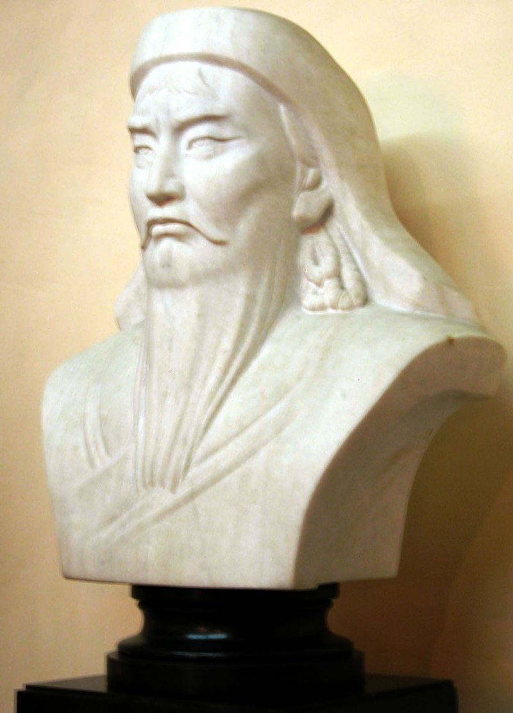
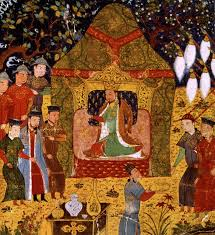
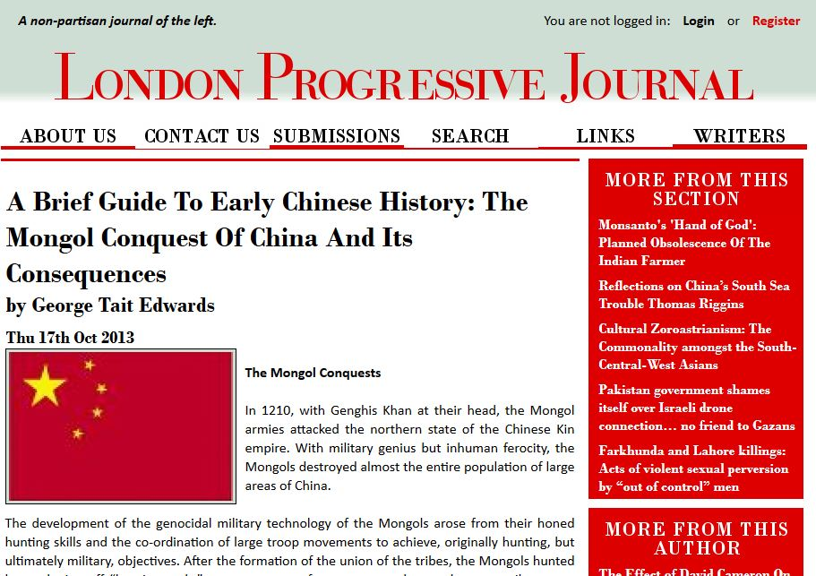


<!DOCTYPE html>
<html lang="en">
<head>
	    <!-- Google Tag Manager -->
    <script>(function(w,d,s,l,i){w[l]=w[l]||[];w[l].push({'gtm.start':
        new Date().getTime(),event:'gtm.js'});var f=d.getElementsByTagName(s)[0],
        j=d.createElement(s),dl=l!='dataLayer'?'&l='+l:'';j.async=true;j.src=
        'https://www.googletagmanager.com/gtm.js?id='+i+dl;f.parentNode.insertBefore(j,f);
        })(window,document,'script','dataLayer','GTM-K5VSFSN');
    </script>
    <!-- End Google Tag Manager -->
	<meta http-equiv="x-ua-compatible" content="IE=Edge">
	<title>DP History: 2. The Rise of the Khan! Part 2 - Genghis the Continental Conqueror</title>
	<meta charset="utf-8">
	<meta name="viewport" content="width=device-width, initial-scale=1.0">
	<meta name="robots" content="none"><meta name="robots" content="noindex, nofollow">
	<!-- Removed by WebCopy --><!--<base href="https://www.student.thinkib.net">--><!-- Removed by WebCopy --><meta name="keywords" content="kuriltai, blacksmith, quda, anda, nokor, kinship, ulusHistory, ThinkIB.net, InThinking, IB, IBDP, IBMYP"><meta name="description" content="2. The Rise of the Khan! Part 2 - Genghis the Continental Conqueror. ThinkIB.net History is an InThinking website.">
	<link href="../../../css/bootstrap.min.css" rel="stylesheet" media="screen">
  <link href="../../../css/font-awesome-4.7.0/css/font-awesome.min.css" rel="stylesheet">
	<link href="../../../css/top-nav.min.css?v=202211301945" rel="stylesheet" media="screen">
	<link href="../../../css/style.min.css?v=20230110" rel="stylesheet" media="screen">
	<link href="../../../css/style-ib.min.css?v=20230105" rel="stylesheet" media="screen">
	<link rel="stylesheet" type="text/css" href="../../../js/jq-fancybox/jquery.fancybox.min.css">
	<link href="../../../js/jq-fancybox/jquery.fancybox.min.css" type="text/css" rel="stylesheet">
	<link rel="stylesheet" href="../../../css/side-nav.min.css?v=20220520"><link rel="stylesheet" href="../../../assets/css/ckeditor5-custom.css" type="text/css"><link rel="stylesheet" href="../../../css/std-access.min.css?v=20220504"><link rel="stylesheet" href="../../../css/snippets.min.css?v=202210181500"><link rel="stylesheet" href="../../../css/article.min.css?v=202212151220"><script src="../../../js/localdates.min.js?v=202009290900"></script><script src="../../../js/ifvisible.min.js"></script><script>ifvisible.setIdleDuration(300);</script><script>var tibSitename = "history";</script>
    <script>
        const SITE_TAG = "ib"
        const SITE_WEB = "ThinkIB.net"
        const SITE_DOMAIN = "www.thinkib.net"
        const SITE_URI = "https://thinkib.net"
        const SITE_CLIENT_CODE = "TIB000001"
        let imageThinker = "../../../img/header-thinker-ib.svg";
        let imageStudent = "img/header-student-thinkib.svg";
    </script>
<script>var userHash = "IB Docs (2)", userTicket = "IB Docs (2)";</script><script src="../../../js/user/local-stats.min.js?v=202102101800"></script><link rel="apple-touch-icon-precomposed" sizes="57x57" href="../../../img/favicon/student-thinkib/apple-touch-icon-57x57.png"><link rel="apple-touch-icon-precomposed" sizes="114x114" href="../../../img/favicon/student-thinkib/apple-touch-icon-114x114.png"><link rel="apple-touch-icon-precomposed" sizes="72x72" href="../../../img/favicon/student-thinkib/apple-touch-icon-72x72.png"><link rel="apple-touch-icon-precomposed" sizes="144x144" href="../../../img/favicon/student-thinkib/apple-touch-icon-144x144.png"><link rel="apple-touch-icon-precomposed" sizes="60x60" href="../../../img/favicon/student-thinkib/apple-touch-icon-60x60.png"><link rel="apple-touch-icon-precomposed" sizes="120x120" href="../../../img/favicon/student-thinkib/apple-touch-icon-120x120.png"><link rel="apple-touch-icon-precomposed" sizes="76x76" href="../../../img/favicon/student-thinkib/apple-touch-icon-76x76.png"><link rel="apple-touch-icon-precomposed" sizes="152x152" href="../../../img/favicon/student-thinkib/apple-touch-icon-152x152.png"><link rel="icon" type="image/png" href="../../../img/favicon/student-thinkib/favicon-196x196.png" sizes="196x196"><link rel="icon" type="image/png" href="../../../img/favicon/student-thinkib/favicon-96x96.png" sizes="96x96"><link rel="icon" type="image/png" href="../../../img/favicon/student-thinkib/favicon-32x32.png" sizes="32x32"><link rel="icon" type="image/png" href="../../../img/favicon/student-thinkib/favicon-16x16.png" sizes="16x16"><link rel="icon" type="image/png" href="../../../img/favicon/student-thinkib/favicon-128.png" sizes="128x128"><meta name="application-name" content="&nbsp;"><meta name="msapplication-TileColor" content="#FFFFFF"><meta name="msapplication-TileImage" content="https://www.student.thinkib.net/img/favicon/student-thinkib/mstile-144x144.png"><meta name="msapplication-square70x70logo" content="https://www.student.thinkib.net/img/favicon/student-thinkib/mstile-70x70.png"><meta name="msapplication-square150x150logo" content="https://www.student.thinkib.net/img/favicon/student-thinkib/mstile-150x150.png"><meta name="msapplication-wide310x150logo" content="https://www.student.thinkib.net/img/favicon/student-thinkib/mstile-310x150.png"><meta name="msapplication-square310x310logo" content="https://www.student.thinkib.net/img/favicon/student-thinkib/mstile-310x310.png">
</head>

<body onunload="" class="student-access">
	    <!-- Google Tag Manager (noscript) -->
    <noscript><iframe src="https://www.googletagmanager.com/ns.html?id=GTM-K5VSFSN" height="0" width="0" style="display:none;visibility:hidden"></iframe></noscript>
    <!-- End Google Tag Manager (noscript) -->
    <div id="header">
    <div class="wmap">
        <div class="layout-wrapper">
            <div class="container-fluid">

                <div class="pull-right visible-phone">
                    <a href="https://www.inthinking.net">
                        
                    </a>
                </div>
                <div class="visible-phone" style="clear:both;"></div>

                <div class="pull-left">
                	<h1><a href="../../../history-2.html?lg=42233"><span style="font-size: .8em;">IBDP History  brought to you by the IB Docs (2) Team</span></a></h1>
                    <p class="slogan hidden-phone"><span class="slogan"><em>InThinking</em> Subject Sites for teachers &amp; their classes</span></p>
                	<p class="hidden-phone"><em>Group: IB History<br>Teacher: Teach Yourself!</em></p>
                </div>

                <div class="pull-right text-right">
                    <a class="hidden-phone" href="https://www.inthinking.net">
                        
                    </a>
                    <div class="search"><a href="#" class="toggle-menu-search" data-toggle="dropdown" title="Search"><i class="fa fa-2x fa-search"></i></a></div>
                </div>
            </div>
        </div>
    </div>
</div>


	<div id="topmenu">
		<div class="layout-wrapper">
			<div>
				<nav class="top-nav"><ul class="level-0"><li><a href="../../../history-2.html?lg=42233"><i class="fa fa-home"></i> Home</a></li><li><a href="../35914/getting-started-students.html">Getting started: Students</a></li><li><a href="../28978/exam-revision.html">Exam revision</a></li><li class="selected"><a href="../19757/paper-1.html">Paper 1</a></li><li><a href="../19758/paper-2.html">Paper 2</a></li><li><a href="../19920/paper-3.html">Paper 3</a></li><li><a href="../26763/the-ib-core.html">The IB Core</a></li><li><a href="../33195/recursos-en-espanol.html">Recursos en español</a></li></ul></nav>
			</div>
		</div>
	</div>

    <nav id="nav-menu-search" class="shadow-md" style="display: none;">
        <div class="layout-wrapper">
            <form class="form-inline" role="search" method="get" action="history/search">
    <input id="nav-search" name="s" type="search" placeholder="Search History..." value="">
    <button class="btn btn-sm btn-primary" type="submit">
        Search
    </button>
    <a href="#" class="toggle-menu-search" title="Close">
        <i class="fa fa-lg fa-times gray"></i>
    </a>
</form>

        </div>
    </nav>

	<div class="layout-wrapper">
		<div id="container" class="container-fluid">
			<div id="content">
				<div class="row-fluid">
					<div id="left-column" class="span3">    <div id="userbox">
        <div class="dropdown" style="display: flex; align-items: center;">
            <a href="#" data-toggle="dropdown" class="dropdown-toggle btn">
                
                &nbsp;&nbsp;IB Docs (2) Team&nbsp;&nbsp;<i class="fa fa-caret-down"></i>
            </a>
            <ul class="dropdown-menu" id="menu1">
                
                <li><a href="https://www.student.thinkib.net/englishb?lg=42280"><i class="fa fa-caret-right fixwidth gray"></i> IBDP English B</a></li><li><a href="../../../history-2.html?lg=42233"><i class="fa fa-caret-right fixwidth gray"></i> IBDP History</a></li><li><a href="https://www.student.thinkib.net/mathanalysis?lg=27105"><i class="fa fa-caret-right fixwidth gray"></i> IBDP Maths: Analysis &amp; Approaches</a></li><li class="divider"></li><li><a href="https://www.student.thinkib.net"><i class="fa fa-dashboard fixwidth colored"></i>    Dashboard</a></li><li><a href="https://www.student.thinkib.net/?pan=tasks"><i class="fa fa-pencil fixwidth colored"></i>    All tasks</a></li><li><a href="https://www.student.thinkib.net/std/profile-editor"><i class="fa fa-user fixwidth colored"></i>    My profile</a></li>
                <li class="divider"></li>
                <li>
                    <a href="https://www.student.thinkib.net?logout=1">
                        <i class="fa fa-power-off fixwidth"></i>    Log out
                    </a>
                </li>
            </ul>
        </div>
    </div><div id="std-side-box" data-pid="1297" style="background: #f6f6f6; margin-bottom: 20px;"><div id="usernav" style="margin: 0; padding: 0px;">   <div class="row-fluid accordion-group" style="border: 0px; margin-bottom: 0px;">       <div class="" style="padding: 6px 4px 6px 8px; background: #E89C12;">       <a class="accordion-toggle std-header" style="color: #fff; text-shadow: 1px 1px 1px #444; padding: 0px; text-decoration: none; font-size: 16px; font-weight: 400; " data-toggle="collapse" data-parent="#usernav" href="#side-box-content-assignments">           <i class="fa fa-caret-right white" style="margin-left: 4px;"></i>           Tasks       </a>       </div>       <div id="side-box-content-assignments" class="accordion-body collapse">           <div class="accordion-inner" style="line-height: 1.7em;"><span style="background: #dbdbdb; text-shadow: none; font-size: .9em; padding: 5px 2px; margin-bottom: 6px;width: 100%;display: block;">&nbsp;Overdue tasks</span><ul style="margin: 0;"><li class="task"><span><a href="../../task/334034/1-origins-of-the-cold-war-mc.html"><i class="fa fa-puzzle-piece fa-fw colored fixwidth" title="Quiz task"></i> 1. Origins of the Cold War (M/C) </a></span></li><li class="task"><span><a href="../../task/398980/move-to-global-war-japan.html"><i class="fa fa-puzzle-piece fa-fw colored fixwidth" title="Quiz task"></i> Move to Global War: Japan </a></span></li><li class="task"><span><a href="../../task/398996/1-manchurian-crisis-1931.html"><i class="fa fa-file fa-fw colored fixwidth" title="Reading task"></i> 1. Manchurian crisis (1931) </a></span></li></ul></div></div></div></div></div><br><div id="topicsnav" style="margin: 0; padding: 0px;"> <div class="row-fluid accordion-group" style="border: 0px; margin-bottom: 0px;"> <div style="padding: 6px 4px 6px 8px; background: #204a87;"> <a class="accordion-toggle std-header" style="color: #fff; text-shadow: 1px 1px 1px #444; padding: 0px; text-decoration: none; font-size: 16px; font-weight: 400;" data-toggle="collapse" data-parent="#topicsnav" href="#side-box-topics-list"> <i class="fa fa-caret-right fa-rotate-90 white" style="margin-left: 4px;"></i> Topics </a> <span id="sidetreecontrol"> <a title="Collapse all" rel="collapse" href="#"> <i class="fa fa-minus-circle"></i> </a> <a title="Expand all" rel="expand" href="#"> <i class="fa fa-plus-circle"></i> </a> </span> </div> <div id="side-box-topics-list" class="accordion-body in collapse"> <div class="accordion-inner" style="line-height: 1.7em; padding: 0;"> <nav class="side-nav" id="sidemenu"><ul class="level-0 always-expanded"><li class=" parent std-toplevel" style="padding-left: 4px"><i class="expander fa fa-caret-right "></i><a class="" href="../35914/getting-started-students.html" title="Getting started: Students">Getting started: Students</a></li><ul class="level-1 "><li class="" style="padding-left: 14px"><i class="expander fa fa-caret-right "></i><a class="" href="../35961/1-introducing-ib-history.html" title="1. Introducing IB History">1. Introducing IB History</a></li><li class=" parent" style="padding-left: 14px"><i class="expander fa fa-caret-right "></i><a class="" href="../35983/2-developing-study-skills.html" title="2. Developing study skills">2. Developing study skills</a></li><ul class="level-2 "><li class="" style="padding-left: 28px"><i class="expander fa fa-caret-right "></i><a class="" href="../35971/1-finding-relevant-sources.html" title="1. Finding relevant sources">1. Finding relevant sources</a></li><li class="" style="padding-left: 28px"><i class="expander fa fa-caret-right "></i><a class="" href="../35977/3-note-taking.html" title="3. Note taking">3. Note taking</a></li><li class="" style="padding-left: 28px"><i class="expander fa fa-caret-right "></i><a class="" href="../35986/4-working-with-historical-sources.html" title="4. Working with historical sources">4. Working with historical sources</a></li></ul><li class="" style="padding-left: 14px"><i class="expander fa fa-caret-right "></i><a class="" href="../38442/3-source-work-paper-1.html" title="3. Source work: Paper 1">3. Source work: Paper 1</a></li><li class="" style="padding-left: 14px"><i class="expander fa fa-caret-right "></i><a class="" href="../38417/4-essay-writing-papers-2-and-3.html" title="4. Essay writing: Papers 2 and 3">4. Essay writing: Papers 2 and 3</a></li></ul><li class=" parent std-toplevel" style="padding-left: 4px"><i class="expander fa fa-caret-right "></i><a class="" href="../28978/exam-revision.html" title="Exam revision">Exam revision</a></li><ul class="level-1 "><li class="" style="padding-left: 14px"><i class="expander fa fa-caret-right "></i><a class="" href="../28980/1-planning-your-revision.html" title="1. Planning your revision">1. Planning your revision</a></li><li class="" style="padding-left: 14px"><i class="expander fa fa-caret-right "></i><a class="" href="../29006/2-creating-revision-notes.html" title="2. Creating revision notes">2. Creating revision notes</a></li><li class="" style="padding-left: 14px"><i class="expander fa fa-caret-right "></i><a class="" href="../29007/3-memorising-your-notes.html" title="3. Memorising your notes">3. Memorising your notes</a></li><li class="" style="padding-left: 14px"><i class="expander fa fa-caret-right "></i><a class="" href="../29008/4-preparing-for-the-examination.html" title="4. Preparing for the examination">4. Preparing for the examination</a></li><li class=" parent" style="padding-left: 14px"><i class="expander fa fa-caret-right "></i><a class="std-disabled" href="#" title="5. Revision activities">5. Revision activities</a></li><ul class="level-2 "><li class="" style="padding-left: 28px"><i class="expander fa fa-caret-right "></i><a class="" href="../43594/p2-t10-authoritarian-states-castro.html" title="P2: T10 Authoritarian States - Castro">P2: T10 Authoritarian States - Castro</a></li><li class="" style="padding-left: 28px"><i class="expander fa fa-caret-right "></i><a class="" href="../43451/p2-t10-authoritarian-states-hitler.html" title="P2: T10 Authoritarian States - Hitler">P2: T10 Authoritarian States - Hitler</a></li><li class="" style="padding-left: 28px"><i class="expander fa fa-caret-right "></i><a class="" href="../43321/p2-t10-authoritarian-states-mao.html" title="P2: T10 Authoritarian States - Mao">P2: T10 Authoritarian States - Mao</a></li><li class="" style="padding-left: 28px"><i class="expander fa fa-caret-right "></i><a class="" href="../43985/p2-t11-comparing-civil-wars.html" title="P2: T11: Comparing civil wars">P2: T11: Comparing civil wars</a></li><li class="" style="padding-left: 28px"><i class="expander fa fa-caret-right "></i><a class="" href="../43986/p2-t11-comparing-guerilla-wars.html" title="P2: T11: Comparing guerilla wars">P2: T11: Comparing guerilla wars</a></li><li class="" style="padding-left: 28px"><i class="expander fa fa-caret-right "></i><a class="" href="../43491/revision-quizzes.html" title="Revision Quizzes">Revision Quizzes</a></li></ul></ul><li class="ancestor parent std-toplevel" style="padding-left: 4px"><i class="expander fa fa-caret-right fa-rotate-90"></i><a class="" href="../19757/paper-1.html" title="Paper 1">Paper 1</a></li><ul class="level-1 expanded"><li class="ancestor parent" style="padding-left: 14px"><i class="expander fa fa-caret-right fa-rotate-90"></i><a class="std-disabled" href="#" title="3. Prescribed Subjects for Paper 1">3. Prescribed Subjects for Paper 1</a></li><ul class="level-2 expanded"><li class="ancestor parent" style="padding-left: 28px"><i class="expander fa fa-caret-right fa-rotate-90"></i><a class="" href="../22117/ps1-military-leaders.html" title="PS1: Military Leaders">PS1: Military Leaders</a></li><ul class="level-3 expanded"><li class="ancestor parent" style="padding-left: 42px"><i class="expander fa fa-caret-right fa-rotate-90"></i><a class="" href="../22118/1-genghis-khan-from-rats-to-riches-atl.html" title="1. Genghis Khan: From rats to riches (ATL)">1. Genghis Khan: From rats to riches (ATL)</a></li><ul class="level-4 expanded"><li class="" style="padding-left: 56px"><i class="expander fa fa-caret-right "></i><a class="" href="../22352/1-the-rise-of-the-khan-part-1-timujin-in-the-making.html" title="1. The rise of the Khan! Part 1 - Timujin in the Making">1. The rise of the Khan! Part 1 - Timujin in the Making</a></li><li class="current" style="padding-left: 56px"><i class="expander fa fa-caret-right "></i><a class="" href="2-the-rise-of-the-khan-part-2-genghis-the-continental-conqueror.html" title="2. The Rise of the Khan! Part 2 - Genghis the Continental Conqueror">2. The Rise of the Khan! Part 2 - Genghis the Continental Conqueror</a></li><li class="" style="padding-left: 56px"><i class="expander fa fa-caret-right "></i><a class="" href="../22758/3-mongol-military-might-and-prowess.html" title="3. Mongol Military Might and Prowess">3. Mongol Military Might and Prowess</a></li><li class="" style="padding-left: 56px"><i class="expander fa fa-caret-right "></i><a class="" href="../22686/4-the-destruction-of-khwarizm.html" title="4. The Destruction of Khwarizm">4. The Destruction of Khwarizm</a></li><li class="" style="padding-left: 56px"><i class="expander fa fa-caret-right "></i><a class="" href="../22736/5-the-mongol-impact-on-central-asia-under-genghis-khan.html" title="5. The Mongol Impact on Central Asia Under Genghis Khan">5. The Mongol Impact on Central Asia Under Genghis Khan</a></li><li class="" style="padding-left: 56px"><i class="expander fa fa-caret-right "></i><a class="" href="../22783/6-mongol-warfare-the-horsemen-hoard-of-the-steppes.html" title="6. Mongol Warfare: The Horsemen Hoard of the Steppes">6. Mongol Warfare: The Horsemen Hoard of the Steppes</a></li><li class="" style="padding-left: 56px"><i class="expander fa fa-caret-right "></i><a class="" href="../22780/7-the-legacy-of-genghis-khan.html" title="7. The Legacy of Genghis Khan">7. The Legacy of Genghis Khan</a></li><li class="" style="padding-left: 56px"><i class="expander fa fa-caret-right "></i><a class="" href="../22720/8-tok-materials-for-genghis-khan.html" title="8. TOK Materials for Genghis Khan">8. TOK Materials for Genghis Khan</a></li><li class="" style="padding-left: 56px"><i class="expander fa fa-caret-right "></i><a class="" href="../22826/acknowledgements-and-disclaimers.html" title="Acknowledgements and Disclaimers">Acknowledgements and Disclaimers</a></li></ul><li class=" parent" style="padding-left: 42px"><i class="expander fa fa-caret-right "></i><a class="" href="../22120/2-richard-i-of-england-rex-bellicosus-atl.html" title="2. Richard I of England: Rex Bellicosus (ATL)">2. Richard I of England: Rex Bellicosus (ATL)</a></li><ul class="level-4 "><li class="" style="padding-left: 56px"><i class="expander fa fa-caret-right "></i><a class="" href="../22882/1-england-1150-1220.html" title="1. England 1150-1220">1. England 1150-1220</a></li><li class="" style="padding-left: 56px"><i class="expander fa fa-caret-right "></i><a class="" href="../22883/2-early-life-richards-rise-to-power.html" title="2. Early Life: Richard&#039;s Rise to Power">2. Early Life: Richard&#039;s Rise to Power</a></li><li class="" style="padding-left: 56px"><i class="expander fa fa-caret-right "></i><a class="" href="../22884/3-the-chivalrous-warrior-personality-perspectives-and-leadership.html" title="3. The Chivalrous Warrior: Personality, Perspectives and Leadership">3. The Chivalrous Warrior: Personality, Perspectives and Leadership</a></li><li class="" style="padding-left: 56px"><i class="expander fa fa-caret-right "></i><a class="" href="../22885/4-military-maketh-the-man-richards-aims-and-objectives.html" title="4. Military Maketh the Man: Richard&#039;s Aims and Objectives">4. Military Maketh the Man: Richard&#039;s Aims and Objectives</a></li><li class="" style="padding-left: 56px"><i class="expander fa fa-caret-right "></i><a class="" href="../23555/5-richard-overseas-the-third-crusade.html" title="5. Richard Overseas: The Third Crusade">5. Richard Overseas: The Third Crusade</a></li><li class="" style="padding-left: 56px"><i class="expander fa fa-caret-right "></i><a class="" href="../22886/6-the-occupation-of-sicily-.html" title="6. The Occupation of Sicily ">6. The Occupation of Sicily </a></li><li class="" style="padding-left: 56px"><i class="expander fa fa-caret-right "></i><a class="" href="../22887/7-the-conquest-of-cyprus.html" title="7. The Conquest of Cyprus">7. The Conquest of Cyprus</a></li><li class="" style="padding-left: 56px"><i class="expander fa fa-caret-right "></i><a class="" href="../23421/8-tok-and-richard-i.html" title="8. TOK and Richard I">8. TOK and Richard I</a></li></ul></ul><li class=" parent" style="padding-left: 28px"><i class="expander fa fa-caret-right "></i><a class="" href="../26836/ps2-conquest-and-its-impact.html" title="PS2: Conquest and its impact">PS2: Conquest and its impact</a></li><ul class="level-3 "><li class="" style="padding-left: 42px"><i class="expander fa fa-caret-right "></i><a class="" href="../26840/1-the-final-stages-of-muslim-rule-in-spain-atl.html" title="1. The final stages of Muslim rule in Spain: ATL">1. The final stages of Muslim rule in Spain: ATL</a></li><li class="" style="padding-left: 42px"><i class="expander fa fa-caret-right "></i><a class="" href="../26844/2-the-conquest-of-mexico-and-peru-atl.html" title="2. The conquest of Mexico and Peru: ATL">2. The conquest of Mexico and Peru: ATL</a></li></ul><li class=" parent" style="padding-left: 28px"><i class="expander fa fa-caret-right "></i><a class="" href="../19945/ps3-the-move-to-global-war.html" title="PS3: The Move to Global War">PS3: The Move to Global War</a></li><ul class="level-3 "><li class=" parent" style="padding-left: 42px"><i class="expander fa fa-caret-right "></i><a class="" href="../45136/1-case-study-1-japanese-expansion-in-east-asia-1931-41.html" title="1. Case study 1: Japanese expansion in East Asia 1931-41">1. Case study 1: Japanese expansion in East Asia 1931-41</a></li><ul class="level-4 "><li class="" style="padding-left: 56px"><i class="expander fa fa-caret-right "></i><a class="" href="../45135/1-japanese-expansion-causes-.html" title="1. Japanese expansion: causes ">1. Japanese expansion: causes </a></li><li class="" style="padding-left: 56px"><i class="expander fa fa-caret-right "></i><a class="" href="../45137/2-japanese-expansion-events-1931-to-1939.html" title="2. Japanese expansion: events 1931 to 1939">2. Japanese expansion: events 1931 to 1939</a></li><li class="" style="padding-left: 56px"><i class="expander fa fa-caret-right "></i><a class="" href="../45146/3-japanese-expansion-international-response-1931-1941.html" title="3. Japanese expansion: International response 1931 - 1941">3. Japanese expansion: International response 1931 - 1941</a></li></ul><li class=" parent" style="padding-left: 42px"><i class="expander fa fa-caret-right "></i><a class="" href="../20455/21-case-study-2-italian-expansion-19331940-.html" title="2.1 Case Study 2: Italian expansion (1933–1940) ">2.1 Case Study 2: Italian expansion (1933–1940) </a></li><ul class="level-4 "><li class="" style="padding-left: 56px"><i class="expander fa fa-caret-right "></i><a class="" href="../44514/1-causes-of-italian-expansion.html" title="1. Causes of Italian expansion">1. Causes of Italian expansion</a></li><li class="" style="padding-left: 56px"><i class="expander fa fa-caret-right "></i><a class="" href="../44520/2-events-1935-1939.html" title="2. Events 1935 - 1939">2. Events 1935 - 1939</a></li><li class="" style="padding-left: 56px"><i class="expander fa fa-caret-right "></i><a class="" href="../44521/3-international-response-to-italian-aggression.html" title="3. International response to Italian aggression">3. International response to Italian aggression</a></li></ul><li class=" parent" style="padding-left: 42px"><i class="expander fa fa-caret-right "></i><a class="" href="../26982/22-case-study-2-german-expansion-1933-1940-atl.html" title="2.2 Case Study 2: German expansion (1933 - 1940) ATL">2.2 Case Study 2: German expansion (1933 - 1940) ATL</a></li><ul class="level-4 "><li class="" style="padding-left: 56px"><i class="expander fa fa-caret-right "></i><a class="" href="../44489/1-causes-of-german-expansion.html" title="1. Causes of German expansion">1. Causes of German expansion</a></li><li class="" style="padding-left: 56px"><i class="expander fa fa-caret-right "></i><a class="" href="../44761/2-events-german-challenges-to-the-post-war-settlements-19331938.html" title="2. Events - German challenges to the post-war settlements (1933–1938)">2. Events - German challenges to the post-war settlements (1933–1938)</a></li><li class="" style="padding-left: 56px"><i class="expander fa fa-caret-right "></i><a class="" href="../44762/3-events-german-expansion-19381939.html" title="3. Events - German expansion (1938–1939)">3. Events - German expansion (1938–1939)</a></li><li class="" style="padding-left: 56px"><i class="expander fa fa-caret-right "></i><a class="" href="../44763/4-international-response-to-german-aggression-19331938.html" title="4. International response to German aggression (1933–1938)">4. International response to German aggression (1933–1938)</a></li><li class="" style="padding-left: 56px"><i class="expander fa fa-caret-right "></i><a class="" href="../44764/5-international-response-to-german-and-italian-aggression-1940.html" title="5. International response to German and Italian aggression (1940)">5. International response to German and Italian aggression (1940)</a></li></ul><li class="" style="padding-left: 42px"><i class="expander fa fa-caret-right "></i><a class="" href="../20009/6-ps3-full-source-papers-case-study-2.html" title="6. PS3: Full source papers Case Study 2">6. PS3: Full source papers Case Study 2</a></li><li class=" parent" style="padding-left: 42px"><i class="expander fa fa-caret-right "></i><a class="std-disabled" href="#" title="7. PS3 Move to Global War: Quizzes">7. PS3 Move to Global War: Quizzes</a></li><ul class="level-4 "><li class=" parent" style="padding-left: 56px"><i class="expander fa fa-caret-right "></i><a class="" href="../28200/2-interactive-quizzes.html" title="2. Interactive quizzes">2. Interactive quizzes</a></li><ul class="level-5 "><li class="" style="padding-left: 70px"><i class="expander fa fa-caret-right "></i><a class="" href="../28218/move-to-global-war-germany.html" title="Move to Global War: Germany">Move to Global War: Germany</a></li><li class="" style="padding-left: 70px"><i class="expander fa fa-caret-right "></i><a class="" href="../28213/move-to-global-war-italy.html" title="Move to Global War: Italy">Move to Global War: Italy</a></li><li class="" style="padding-left: 70px"><i class="expander fa fa-caret-right "></i><a class="" href="../../task/398980.html" title="Move to Global War: Japan">Move to Global War: Japan</a></li></ul></ul></ul><li class=" parent" style="padding-left: 28px"><i class="expander fa fa-caret-right "></i><a class="" href="../19946/ps4-rights-and-protest.html" title="PS4: Rights and Protest">PS4: Rights and Protest</a></li><ul class="level-3 "><li class=" parent" style="padding-left: 42px"><i class="expander fa fa-caret-right "></i><a class="" href="../20016/1-case-study-1-civil-rights-movement-in-the-united-states-195419.html" title="1. Case Study 1: Civil rights movement in the United States  (1954–1965) ">1. Case Study 1: Civil rights movement in the United States  (1954–1965) </a></li><ul class="level-4 "><li class="" style="padding-left: 56px"><i class="expander fa fa-caret-right "></i><a class="" href="../44442/1-nature-and-characteristics-of-discrimination.html" title="1. Nature and characteristics of discrimination">1. Nature and characteristics of discrimination</a></li><li class="" style="padding-left: 56px"><i class="expander fa fa-caret-right "></i><a class="" href="../44446/2-protests-and-action.html" title="2. Protests and action">2. Protests and action</a></li><li class="" style="padding-left: 56px"><i class="expander fa fa-caret-right "></i><a class="" href="../44447/3-the-role-and-significance-of-key-actorsgroups.html" title="3. The role and significance of key actors/groups">3. The role and significance of key actors/groups</a></li></ul><li class=" parent" style="padding-left: 42px"><i class="expander fa fa-caret-right "></i><a class="" href="../20616/3-case-study-2-apartheid-south-africa-1948-1964-.html" title="3. Case Study 2: Apartheid South Africa (1948 - 1964) ">3. Case Study 2: Apartheid South Africa (1948 - 1964) </a></li><ul class="level-4 "><li class=" parent" style="padding-left: 56px"><i class="expander fa fa-caret-right "></i><a class="" href="../44454/1-nature-and-characteristics-of-discrimination.html" title="1. Nature and characteristics of discrimination">1. Nature and characteristics of discrimination</a></li><ul class="level-5 "><li class="" style="padding-left: 70px"><i class="expander fa fa-caret-right "></i><a class="" href="../44738/the-system-of-apartheid.html" title="The system of apartheid">The system of apartheid</a></li></ul><li class="" style="padding-left: 56px"><i class="expander fa fa-caret-right "></i><a class="" href="../44478/2-protests-and-action.html" title="2. Protests and action">2. Protests and action</a></li><li class="" style="padding-left: 56px"><i class="expander fa fa-caret-right "></i><a class="" href="../44495/3-the-role-and-significance-of-key-actorsgroups.html" title="3. The role and significance of key actors/groups">3. The role and significance of key actors/groups</a></li></ul><li class=" parent" style="padding-left: 42px"><i class="expander fa fa-caret-right "></i><a class="std-disabled" href="#" title="5. PS4: Full source papers Case Study 1">5. PS4: Full source papers Case Study 1</a></li><ul class="level-4 "><li class="" style="padding-left: 56px"><i class="expander fa fa-caret-right "></i><a class="" href="../39603/2-racism-and-violence-against-african-americans-the-ku-klux-klan.html" title="2. Racism and violence against African Americans; the Ku Klux Klan;">2. Racism and violence against African Americans; the Ku Klux Klan;</a></li></ul><li class=" parent" style="padding-left: 42px"><i class="expander fa fa-caret-right "></i><a class="std-disabled" href="#" title="8. PS4 Rights and Protest: Quizzes">8. PS4 Rights and Protest: Quizzes</a></li><ul class="level-4 "><li class=" parent" style="padding-left: 56px"><i class="expander fa fa-caret-right "></i><a class="" href="../33553/interactive-quizzes.html" title="Interactive quizzes">Interactive quizzes</a></li><ul class="level-5 "><li class="" style="padding-left: 70px"><i class="expander fa fa-caret-right "></i><a class="" href="../33554/1-civil-rights-movement-in-the-us.html" title="1. Civil Rights movement in the US">1. Civil Rights movement in the US</a></li><li class="" style="padding-left: 70px"><i class="expander fa fa-caret-right "></i><a class="" href="../33555/2-apartheid-south-africa.html" title="2. Apartheid South Africa">2. Apartheid South Africa</a></li></ul></ul></ul><li class=" parent" style="padding-left: 28px"><i class="expander fa fa-caret-right "></i><a class="std-disabled" href="#" title="PS5: Conflict and Intervention">PS5: Conflict and Intervention</a></li><ul class="level-3 "><li class="" style="padding-left: 42px"><i class="expander fa fa-caret-right "></i><a class="" href="../20542/1-rwanda-19901998-atl.html" title="1. Rwanda (1990–1998) (ATL)">1. Rwanda (1990–1998) (ATL)</a></li><li class="" style="padding-left: 42px"><i class="expander fa fa-caret-right "></i><a class="" href="../20543/2-kosovo-19892002-atl.html" title="2. Kosovo (1989–2002) (ATL)">2. Kosovo (1989–2002) (ATL)</a></li></ul></ul></ul><li class=" parent std-toplevel" style="padding-left: 4px"><i class="expander fa fa-caret-right "></i><a class="" href="../19758/paper-2.html" title="Paper 2">Paper 2</a></li><ul class="level-1 "><li class="" style="padding-left: 14px"><i class="expander fa fa-caret-right "></i><a class="" href="../24664/2-assessment-for-paper-2.html" title="2. Assessment for Paper 2">2. Assessment for Paper 2</a></li><li class=" parent" style="padding-left: 14px"><i class="expander fa fa-caret-right "></i><a class="std-disabled" href="#" title="Topic 02: Causes and Effects of Medieval Wars">Topic 02: Causes and Effects of Medieval Wars</a></li><ul class="level-2 "><li class="" style="padding-left: 28px"><i class="expander fa fa-caret-right "></i><a class="" href="../25631/1-causes-of-medieval-wars.html" title="1. Causes of Medieval Wars">1. Causes of Medieval Wars</a></li><li class="" style="padding-left: 28px"><i class="expander fa fa-caret-right "></i><a class="" href="../25450/2-military-personnel.html" title="2. Military Personnel">2. Military Personnel</a></li><li class="" style="padding-left: 28px"><i class="expander fa fa-caret-right "></i><a class="" href="../25667/3-role-and-importance-of-rulers-in-war.html" title="3. Role and Importance of Rulers in War">3. Role and Importance of Rulers in War</a></li><li class="" style="padding-left: 28px"><i class="expander fa fa-caret-right "></i><a class="" href="../25439/4-siege-warfare.html" title="4. Siege Warfare">4. Siege Warfare</a></li><li class="" style="padding-left: 28px"><i class="expander fa fa-caret-right "></i><a class="" href="../24699/5-women-in-medieval-warfare.html" title="5. Women in Medieval Warfare">5. Women in Medieval Warfare</a></li><li class="" style="padding-left: 28px"><i class="expander fa fa-caret-right "></i><a class="" href="../25680/6-the-effects-of-medieval-wars-and-conflicts.html" title="6. The Effects of Medieval Wars and Conflicts">6. The Effects of Medieval Wars and Conflicts</a></li><li class="" style="padding-left: 28px"><i class="expander fa fa-caret-right "></i><a class="" href="../25731/case-study-4-the-abbasid-civil-war-809-813.html" title="Case Study 4: The Abbasid Civil War 809-813">Case Study 4: The Abbasid Civil War 809-813</a></li><li class="" style="padding-left: 28px"><i class="expander fa fa-caret-right "></i><a class="" href="../25729/case-study-topic-02-genghis-khan.html" title="Case Study Topic 02: Genghis Khan">Case Study Topic 02: Genghis Khan</a></li><li class="" style="padding-left: 28px"><i class="expander fa fa-caret-right "></i><a class="" href="../26139/case-study-topic-02-nur-al-din-zangi-1118-1174.html" title="Case Study Topic 02: Nur al-Din Zangi (1118-1174)">Case Study Topic 02: Nur al-Din Zangi (1118-1174)</a></li><li class="" style="padding-left: 28px"><i class="expander fa fa-caret-right "></i><a class="" href="../25730/case-study-topic-02-richard-i.html" title="Case Study Topic 02: Richard I">Case Study Topic 02: Richard I</a></li></ul><li class=" parent" style="padding-left: 14px"><i class="expander fa fa-caret-right "></i><a class="std-disabled" href="#" title="Topic 03: Dynasties and Rulers (750-1500)">Topic 03: Dynasties and Rulers (750-1500)</a></li><ul class="level-2 "><li class="" style="padding-left: 28px"><i class="expander fa fa-caret-right "></i><a class="" href="../25750/case-study-topic-03-tamerlane.html" title="Case Study Topic 03: Tamerlane">Case Study Topic 03: Tamerlane</a></li></ul><li class=" parent" style="padding-left: 14px"><i class="expander fa fa-caret-right "></i><a class="" href="../31372/topic-06-causes-and-effects-of-early-modern-wars-1500-1750.html" title="Topic 06. Causes and effects of Early Modern wars (1500-1750)">Topic 06. Causes and effects of Early Modern wars (1500-1750)</a></li><ul class="level-2 "><li class=" parent" style="padding-left: 28px"><i class="expander fa fa-caret-right "></i><a class="" href="../32552/case-study-spanish-conquest-of-the-aztec-and-incan-empires.html" title="Case study: Spanish conquest of the Aztec and Incan Empires">Case study: Spanish conquest of the Aztec and Incan Empires</a></li><ul class="level-3 "><li class="" style="padding-left: 42px"><i class="expander fa fa-caret-right "></i><a class="" href="../32554/1-the-spanish-conquest-of-the-aztec-empire.html" title="1. The Spanish conquest of the Aztec Empire">1. The Spanish conquest of the Aztec Empire</a></li><li class="" style="padding-left: 42px"><i class="expander fa fa-caret-right "></i><a class="" href="../32641/2-the-spanish-conquest-of-the-inca-empire.html" title="2. The Spanish conquest of the Inca Empire">2. The Spanish conquest of the Inca Empire</a></li><li class="" style="padding-left: 42px"><i class="expander fa fa-caret-right "></i><a class="" href="../32807/3-conquest-of-aztec-and-inca-empires-effects.html" title="3. Conquest of Aztec and Inca Empires: Effects">3. Conquest of Aztec and Inca Empires: Effects</a></li><li class="" style="padding-left: 42px"><i class="expander fa fa-caret-right "></i><a class="" href="../32556/4-spanish-conquest-of-the-aztec-and-incan-empires-essay-planning.html" title="4. Spanish conquest of the Aztec and Incan Empires: Essay planning">4. Spanish conquest of the Aztec and Incan Empires: Essay planning</a></li><li class="" style="padding-left: 42px"><i class="expander fa fa-caret-right "></i><a class="" href="../32608/6-spanish-conquest-of-the-aztec-and-incan-empires-videos.html" title="6. Spanish conquest of the Aztec and Incan Empires: Videos">6. Spanish conquest of the Aztec and Incan Empires: Videos</a></li></ul><li class=" parent" style="padding-left: 28px"><i class="expander fa fa-caret-right "></i><a class="" href="../35709/case-study-the-english-civil-war.html" title="Case Study: The English Civil War">Case Study: The English Civil War</a></li><ul class="level-3 "><li class="" style="padding-left: 42px"><i class="expander fa fa-caret-right "></i><a class="" href="../32334/1-the-english-civil-war-causes.html" title="1. The English Civil War: Causes">1. The English Civil War: Causes</a></li><li class="" style="padding-left: 42px"><i class="expander fa fa-caret-right "></i><a class="" href="../35753/2-the-english-civil-war-practices-.html" title="2. The English Civil War: Practices ">2. The English Civil War: Practices </a></li></ul><li class=" parent" style="padding-left: 28px"><i class="expander fa fa-caret-right "></i><a class="" href="../31381/case-study-the-thirty-years-war.html" title="Case study: The Thirty Years&#039; War">Case study: The Thirty Years&#039; War</a></li><ul class="level-3 "><li class="" style="padding-left: 42px"><i class="expander fa fa-caret-right "></i><a class="" href="../31384/1-the-thirty-years-war-causes.html" title="1. The Thirty Years&#039; War: Causes">1. The Thirty Years&#039; War: Causes</a></li><li class="" style="padding-left: 42px"><i class="expander fa fa-caret-right "></i><a class="" href="../31388/2-the-thirty-years-war-practices.html" title="2. The Thirty Years&#039; War: Practices">2. The Thirty Years&#039; War: Practices</a></li><li class="" style="padding-left: 42px"><i class="expander fa fa-caret-right "></i><a class="" href="../31443/3-the-thirty-years-war-effects.html" title="3. The Thirty Years&#039; War: Effects">3. The Thirty Years&#039; War: Effects</a></li></ul></ul><li class=" parent" style="padding-left: 14px"><i class="expander fa fa-caret-right "></i><a class="" href="../36249/topic-08-independence-movements.html" title="Topic 08: Independence Movements">Topic 08: Independence Movements</a></li><ul class="level-2 "><li class=" parent" style="padding-left: 28px"><i class="expander fa fa-caret-right "></i><a class="" href="../36525/1-case-study-india.html" title="1. Case Study: India">1. Case Study: India</a></li><ul class="level-3 "><li class="" style="padding-left: 42px"><i class="expander fa fa-caret-right "></i><a class="" href="../36526/1-origins-and-rise-of-indian-independence-movement.html" title="1. Origins and rise of Indian independence movement">1. Origins and rise of Indian independence movement</a></li><li class="" style="padding-left: 42px"><i class="expander fa fa-caret-right "></i><a class="" href="../36539/2-methods-used-and-reasons-for-success-in-indian-independence-mo.html" title="2. Methods used and reasons for success in Indian independence movement">2. Methods used and reasons for success in Indian independence movement</a></li><li class="" style="padding-left: 42px"><i class="expander fa fa-caret-right "></i><a class="" href="../36540/3-challenges-faced-in-the-first-10-years-and-responses-to-the-ch.html" title="3. Challenges faced in the first 10 years, and responses to the challenges ">3. Challenges faced in the first 10 years, and responses to the challenges </a></li><li class="" style="padding-left: 42px"><i class="expander fa fa-caret-right "></i><a class="" href="../36559/4-indian-independence-movement-essay-planning.html" title="4. Indian independence movement: essay planning">4. Indian independence movement: essay planning</a></li></ul><li class=" parent" style="padding-left: 28px"><i class="expander fa fa-caret-right "></i><a class="" href="../36319/2-case-study-ghana.html" title="2. Case study: Ghana">2. Case study: Ghana</a></li><ul class="level-3 "><li class="" style="padding-left: 42px"><i class="expander fa fa-caret-right "></i><a class="" href="../36265/1-origins-and-rise-of-ghanas-independence-movement.html" title="1. Origins and rise of Ghana&#039;s independence movement">1. Origins and rise of Ghana&#039;s independence movement</a></li><li class="" style="padding-left: 42px"><i class="expander fa fa-caret-right "></i><a class="" href="../36387/2-methods-used-and-reasons-for-success.html" title="2. Methods used and reasons for success">2. Methods used and reasons for success</a></li><li class="" style="padding-left: 42px"><i class="expander fa fa-caret-right "></i><a class="" href="../36692/3-challenges-faced-in-the-first-10-years-and-responses-to-the-ch.html" title="3. Challenges faced in the first 10 years, and responses to the challenges">3. Challenges faced in the first 10 years, and responses to the challenges</a></li><li class="" style="padding-left: 42px"><i class="expander fa fa-caret-right "></i><a class="" href="../36562/4-ghanas-independence-movement-essay-planning.html" title="4. Ghana&#039;s independence movement: essay planning">4. Ghana&#039;s independence movement: essay planning</a></li></ul><li class=" parent" style="padding-left: 28px"><i class="expander fa fa-caret-right "></i><a class="" href="../37310/3-case-study-vietnam.html" title="3. Case Study: Vietnam">3. Case Study: Vietnam</a></li><ul class="level-3 "><li class="" style="padding-left: 42px"><i class="expander fa fa-caret-right "></i><a class="" href="../37287/1-origins-and-rise-of-vietnams-independence-movement.html" title="1. Origins and rise of Vietnam&#039;s independence movement">1. Origins and rise of Vietnam&#039;s independence movement</a></li><li class="" style="padding-left: 42px"><i class="expander fa fa-caret-right "></i><a class="" href="../37351/2-methods-used-and-reasons-for-success.html" title="2. Methods used and reasons for success">2. Methods used and reasons for success</a></li><li class="" style="padding-left: 42px"><i class="expander fa fa-caret-right "></i><a class="" href="../37993/3-challenges-faced-in-the-first-10-years-and-responses-to-the-ch.html" title="3. Challenges faced in the first 10 years and responses to the challenges">3. Challenges faced in the first 10 years and responses to the challenges</a></li></ul><li class=" parent" style="padding-left: 28px"><i class="expander fa fa-caret-right "></i><a class="" href="../37491/4-case-study-algeria.html" title="4. Case Study: Algeria">4. Case Study: Algeria</a></li><ul class="level-3 "><li class="" style="padding-left: 42px"><i class="expander fa fa-caret-right "></i><a class="" href="../37458/1-origins-and-rise-of-algerias-independence-movement.html" title="1. Origins and rise of Algeria&#039;s independence movement">1. Origins and rise of Algeria&#039;s independence movement</a></li><li class="" style="padding-left: 42px"><i class="expander fa fa-caret-right "></i><a class="" href="../37519/2-methods-used-and-reasons-for-success.html" title="2. Methods used and reasons for success">2. Methods used and reasons for success</a></li><li class="" style="padding-left: 42px"><i class="expander fa fa-caret-right "></i><a class="" href="../37537/3-challenges-faced-in-the-first-10-years-and-responses-to-the-ch.html" title="3. Challenges faced in the first 10 years and responses to the challenges">3. Challenges faced in the first 10 years and responses to the challenges</a></li><li class="" style="padding-left: 42px"><i class="expander fa fa-caret-right "></i><a class="" href="../38418/4-algerias-independence-movement-essay-writing.html" title="4. Algeria&#039;s independence movement: essay writing">4. Algeria&#039;s independence movement: essay writing</a></li></ul><li class="" style="padding-left: 28px"><i class="expander fa fa-caret-right "></i><a class="" href="../36563/independence-movements-comparative-essay-planning.html" title="Independence Movements: Comparative essay planning">Independence Movements: Comparative essay planning</a></li></ul><li class=" parent" style="padding-left: 14px"><i class="expander fa fa-caret-right "></i><a class="" href="../19951/topic-10-authoritarian-states-20th-century.html" title="Topic 10: Authoritarian States (20th Century)">Topic 10: Authoritarian States (20th Century)</a></li><ul class="level-2 "><li class=" parent" style="padding-left: 28px"><i class="expander fa fa-caret-right "></i><a class="" href="../24137/case-study-topic-10-castro-atl.html" title="Case Study Topic 10: Castro (ATL)">Case Study Topic 10: Castro (ATL)</a></li><ul class="level-3 "><li class="" style="padding-left: 42px"><i class="expander fa fa-caret-right "></i><a class="" href="../46536/1-castro-emergence-of-cuba-as-an-authoritarian-state.html" title="1. Castro: Emergence of Cuba as an authoritarian state">1. Castro: Emergence of Cuba as an authoritarian state</a></li><li class="" style="padding-left: 42px"><i class="expander fa fa-caret-right "></i><a class="" href="../46537/2-castro-consolidation-and-maintenance-of-power.html" title="2. Castro: Consolidation and maintenance of power">2. Castro: Consolidation and maintenance of power</a></li><li class="" style="padding-left: 42px"><i class="expander fa fa-caret-right "></i><a class="" href="../46538/3-castro-aims-and-results-of-policies.html" title="3. Castro: Aims and results of policies">3. Castro: Aims and results of policies</a></li><li class="" style="padding-left: 42px"><i class="expander fa fa-caret-right "></i><a class="" href="../24144/castro-essay-planning-for-paper-2.html" title="Castro: Essay planning for Paper 2">Castro: Essay planning for Paper 2</a></li><li class="" style="padding-left: 42px"><i class="expander fa fa-caret-right "></i><a class="" href="../46527/castro-interactive-quiz.html" title="Castro: Interactive quiz">Castro: Interactive quiz</a></li></ul><li class=" parent" style="padding-left: 28px"><i class="expander fa fa-caret-right "></i><a class="" href="../23352/case-study-topic-10-hitler-atl.html" title="Case Study Topic 10: Hitler (ATL)">Case Study Topic 10: Hitler (ATL)</a></li><ul class="level-3 "><li class="" style="padding-left: 42px"><i class="expander fa fa-caret-right "></i><a class="" href="../23419/hitler-essay-planning-for-paper-2.html" title="Hitler: Essay planning for Paper 2">Hitler: Essay planning for Paper 2</a></li></ul><li class=" parent" style="padding-left: 28px"><i class="expander fa fa-caret-right "></i><a class="" href="../23118/case-study-topic-10-mao-atl.html" title="Case Study Topic 10: Mao (ATL)">Case Study Topic 10: Mao (ATL)</a></li><ul class="level-3 "><li class=" parent" style="padding-left: 42px"><i class="expander fa fa-caret-right "></i><a class="" href="../37952/mao-quizzes-.html" title="Mao: Quizzes ">Mao: Quizzes </a></li><ul class="level-4 "><li class=" parent" style="padding-left: 56px"><i class="expander fa fa-caret-right "></i><a class="std-disabled" href="#" title="1. Interactive quizzes">1. Interactive quizzes</a></li><ul class="level-5 "><li class="" style="padding-left: 70px"><i class="expander fa fa-caret-right "></i><a class="" href="../38043/2-establishment-of-power-1949-1952.html" title="2. Establishment of power 1949 - 1952">2. Establishment of power 1949 - 1952</a></li><li class="" style="padding-left: 70px"><i class="expander fa fa-caret-right "></i><a class="" href="../38054/3-maintenance-of-power-after-1952.html" title="3. Maintenance of power after 1952">3. Maintenance of power after 1952</a></li><li class="" style="padding-left: 70px"><i class="expander fa fa-caret-right "></i><a class="" href="../38231/4-aims-and-results-of-policies.html" title="4. Aims and results of policies">4. Aims and results of policies</a></li></ul></ul></ul><li class=" parent" style="padding-left: 28px"><i class="expander fa fa-caret-right "></i><a class="" href="../24112/case-study-topic-10-mussolini-atl.html" title="Case Study Topic 10: Mussolini (ATL)">Case Study Topic 10: Mussolini (ATL)</a></li><ul class="level-3 "><li class="" style="padding-left: 42px"><i class="expander fa fa-caret-right "></i><a class="" href="../24134/mussolini-essay-planning-for-paper-2.html" title="Mussolini: Essay planning for Paper 2">Mussolini: Essay planning for Paper 2</a></li></ul><li class=" parent" style="padding-left: 28px"><i class="expander fa fa-caret-right "></i><a class="" href="../23353/case-study-topic-10-ussr-lenin-and-stalin-atl.html" title="Case Study Topic 10: USSR: Lenin and Stalin (ATL)">Case Study Topic 10: USSR: Lenin and Stalin (ATL)</a></li><ul class="level-3 "><li class="" style="padding-left: 42px"><i class="expander fa fa-caret-right "></i><a class="" href="../23424/stalin-essay-planning-for-paper-2.html" title="Stalin: Essay planning for Paper 2">Stalin: Essay planning for Paper 2</a></li></ul><li class=" parent" style="padding-left: 28px"><i class="expander fa fa-caret-right "></i><a class="" href="../35933/case-study-topic-10-nasser.html" title="Case Study: Topic 10 Nasser">Case Study: Topic 10 Nasser</a></li><ul class="level-3 "><li class="" style="padding-left: 42px"><i class="expander fa fa-caret-right "></i><a class="" href="../35920/1-nasser-emergence-of-authoritarian-states.html" title="1. Nasser: Emergence of Authoritarian states">1. Nasser: Emergence of Authoritarian states</a></li><li class="" style="padding-left: 42px"><i class="expander fa fa-caret-right "></i><a class="" href="../35928/2-nasser-consolidation-and-maintenance-of-power.html" title="2. Nasser: Consolidation and maintenance of power">2. Nasser: Consolidation and maintenance of power</a></li><li class="" style="padding-left: 42px"><i class="expander fa fa-caret-right "></i><a class="" href="../35929/3-nasser-aims-and-results-of-policies.html" title="3.  Nasser: Aims and results of policies">3.  Nasser: Aims and results of policies</a></li><li class="" style="padding-left: 42px"><i class="expander fa fa-caret-right "></i><a class="" href="../35958/nasser-essay-planning-for-paper-2.html" title="Nasser: Essay planning for Paper 2">Nasser: Essay planning for Paper 2</a></li></ul><li class="" style="padding-left: 28px"><i class="expander fa fa-caret-right "></i><a class="" href="../20019/comparative-essay-planning-for-authoritarian-states.html" title="Comparative essay planning for Authoritarian States">Comparative essay planning for Authoritarian States</a></li></ul><li class=" parent" style="padding-left: 14px"><i class="expander fa fa-caret-right "></i><a class="" href="../19952/topic-11-causes-and-effects-of-20th-century-wars.html" title="Topic 11: Causes and effects of 20th Century wars">Topic 11: Causes and effects of 20th Century wars</a></li><ul class="level-2 "><li class="" style="padding-left: 28px"><i class="expander fa fa-caret-right "></i><a class="" href="../20021/an-introduction-to-themes-and-prescribed-content-atl.html" title="An introduction to themes and prescribed content (ATL)">An introduction to themes and prescribed content (ATL)</a></li><li class=" parent" style="padding-left: 28px"><i class="expander fa fa-caret-right "></i><a class="" href="../35849/case-study-algerian-war.html" title="Case study: Algerian War">Case study: Algerian War</a></li><ul class="level-3 "><li class="" style="padding-left: 42px"><i class="expander fa fa-caret-right "></i><a class="" href="../35126/1-algerian-war-causes.html" title="1. Algerian War: Causes">1. Algerian War: Causes</a></li><li class="" style="padding-left: 42px"><i class="expander fa fa-caret-right "></i><a class="" href="../35152/2-algerian-war-practices.html" title="2. Algerian War: Practices">2. Algerian War: Practices</a></li><li class="" style="padding-left: 42px"><i class="expander fa fa-caret-right "></i><a class="" href="../35239/3-algerian-war-effects.html" title="3. Algerian War: Effects">3. Algerian War: Effects</a></li><li class="" style="padding-left: 42px"><i class="expander fa fa-caret-right "></i><a class="" href="../35241/4-algerian-war-essay-planning-for-paper-two.html" title="4. Algerian War: Essay planning for Paper Two">4. Algerian War: Essay planning for Paper Two</a></li></ul><li class=" parent" style="padding-left: 28px"><i class="expander fa fa-caret-right "></i><a class="" href="../23020/case-study-chinese-civil-war.html" title="Case Study: Chinese Civil War">Case Study: Chinese Civil War</a></li><ul class="level-3 "><li class="" style="padding-left: 42px"><i class="expander fa fa-caret-right "></i><a class="" href="../23021/1-chinese-civil-war-causes-atl-.html" title="1. Chinese Civil War: Causes (ATL) ">1. Chinese Civil War: Causes (ATL) </a></li><li class="" style="padding-left: 42px"><i class="expander fa fa-caret-right "></i><a class="" href="../23058/2-chinese-civil-war-practices-atl.html" title="2. Chinese Civil War: Practices (ATL)">2. Chinese Civil War: Practices (ATL)</a></li><li class="" style="padding-left: 42px"><i class="expander fa fa-caret-right "></i><a class="" href="../23301/3-chinese-civil-war-effects-atl.html" title="3. Chinese Civil War: Effects (ATL)">3. Chinese Civil War: Effects (ATL)</a></li><li class="" style="padding-left: 42px"><i class="expander fa fa-caret-right "></i><a class="" href="../23060/4-chinese-civil-war-essay-planning-for-paper-2.html" title="4. Chinese Civil War: Essay planning for Paper 2">4. Chinese Civil War: Essay planning for Paper 2</a></li><li class="" style="padding-left: 42px"><i class="expander fa fa-caret-right "></i><a class="" href="../24607/5-chinese-civil-war-videos-and-activities.html" title="5. Chinese Civil War: Videos and activities">5. Chinese Civil War: Videos and activities</a></li><li class=" parent" style="padding-left: 42px"><i class="expander fa fa-caret-right "></i><a class="" href="../44248/6-chinese-civil-war-interactive-quizzes.html" title="6. Chinese Civil War: interactive quizzes">6. Chinese Civil War: interactive quizzes</a></li><ul class="level-4 "><li class="" style="padding-left: 56px"><i class="expander fa fa-caret-right "></i><a class="" href="../44249/1-causes-of-the-chinese-civil-war.html" title="1. Causes of the Chinese Civil War">1. Causes of the Chinese Civil War</a></li><li class="" style="padding-left: 56px"><i class="expander fa fa-caret-right "></i><a class="" href="../44250/2-practices-of-the-chinese-civil-war.html" title="2. Practices of the Chinese Civil War">2. Practices of the Chinese Civil War</a></li></ul></ul><li class=" parent" style="padding-left: 28px"><i class="expander fa fa-caret-right "></i><a class="" href="../23567/case-study-cuban-revolution-atl.html" title="Case Study: Cuban Revolution (ATL)">Case Study: Cuban Revolution (ATL)</a></li><ul class="level-3 "><li class="" style="padding-left: 42px"><i class="expander fa fa-caret-right "></i><a class="" href="../23584/cuban-revolution-essay-planning-for-paper-2.html" title="Cuban Revolution: Essay planning for Paper 2">Cuban Revolution: Essay planning for Paper 2</a></li></ul><li class=" parent" style="padding-left: 28px"><i class="expander fa fa-caret-right "></i><a class="" href="../21820/case-study-first-world-war.html" title="Case Study: First World War">Case Study: First World War</a></li><ul class="level-3 "><li class="" style="padding-left: 42px"><i class="expander fa fa-caret-right "></i><a class="" href="../22812/1-first-world-war-causes-atl.html" title="1. First World War: Causes (ATL)">1. First World War: Causes (ATL)</a></li><li class="" style="padding-left: 42px"><i class="expander fa fa-caret-right "></i><a class="" href="../22818/2-first-world-war-practices-atl.html" title="2. First World War: Practices (ATL)">2. First World War: Practices (ATL)</a></li><li class="" style="padding-left: 42px"><i class="expander fa fa-caret-right "></i><a class="" href="../22819/3-first-world-war-effects-atl.html" title="3. First World War: Effects (ATL)">3. First World War: Effects (ATL)</a></li><li class="" style="padding-left: 42px"><i class="expander fa fa-caret-right "></i><a class="" href="../21827/4-first-world-war-essay-planning-for-paper-2.html" title="4. First World War: Essay planning for Paper 2">4. First World War: Essay planning for Paper 2</a></li><li class=" parent" style="padding-left: 42px"><i class="expander fa fa-caret-right "></i><a class="std-disabled" href="#" title="8. First World War: Quizzes">8. First World War: Quizzes</a></li><ul class="level-4 "><li class=" parent" style="padding-left: 56px"><i class="expander fa fa-caret-right "></i><a class="" href="../20024/interactive-quizzes.html" title="Interactive quizzes">Interactive quizzes</a></li><ul class="level-5 "><li class="" style="padding-left: 70px"><i class="expander fa fa-caret-right "></i><a class="" href="../43973/2-practices-of-the-first-world-war.html" title="2. Practices of the First World War">2. Practices of the First World War</a></li><li class="" style="padding-left: 70px"><i class="expander fa fa-caret-right "></i><a class="" href="../43974/3-effects-of-the-first-world-war.html" title="3. Effects of the First World War">3. Effects of the First World War</a></li></ul></ul></ul><li class=" parent" style="padding-left: 28px"><i class="expander fa fa-caret-right "></i><a class="" href="../42427/case-study-gulf-war.html" title="Case Study: Gulf War">Case Study: Gulf War</a></li><ul class="level-3 "><li class="" style="padding-left: 42px"><i class="expander fa fa-caret-right "></i><a class="" href="../42428/1-gulf-war-long-term-causes.html" title="1. Gulf War: long-term causes">1. Gulf War: long-term causes</a></li><li class="" style="padding-left: 42px"><i class="expander fa fa-caret-right "></i><a class="" href="../42434/2-gulf-war-short-term-causes.html" title="2. Gulf War: short-term causes">2. Gulf War: short-term causes</a></li><li class="" style="padding-left: 42px"><i class="expander fa fa-caret-right "></i><a class="" href="../42556/3-gulf-war-practices.html" title="3. Gulf War: Practices">3. Gulf War: Practices</a></li><li class="" style="padding-left: 42px"><i class="expander fa fa-caret-right "></i><a class="" href="../42720/4-gulf-war-effects.html" title="4. Gulf War: Effects">4. Gulf War: Effects</a></li><li class="" style="padding-left: 42px"><i class="expander fa fa-caret-right "></i><a class="" href="../42750/5-gulf-war-essay-planning-for-paper-2.html" title="5. Gulf War: Essay planning for Paper 2">5. Gulf War: Essay planning for Paper 2</a></li></ul><li class="" style="padding-left: 28px"><i class="expander fa fa-caret-right "></i><a class="" href="../36703/case-study-russian-civil-war-atl.html" title="Case Study: Russian Civil War (ATL)">Case Study: Russian Civil War (ATL)</a></li><li class=" parent" style="padding-left: 28px"><i class="expander fa fa-caret-right "></i><a class="" href="../22778/case-study-second-world-war.html" title="Case Study: Second World War">Case Study: Second World War</a></li><ul class="level-3 "><li class="" style="padding-left: 42px"><i class="expander fa fa-caret-right "></i><a class="" href="../21821/1-second-world-war-causes-part-i-atl.html" title="1. Second World War: Causes Part I (ATL)">1. Second World War: Causes Part I (ATL)</a></li><li class="" style="padding-left: 42px"><i class="expander fa fa-caret-right "></i><a class="" href="../25800/2-second-world-war-causes-part-ii-asia-atl.html" title="2. Second World War - Causes Part II Asia (ATL)">2. Second World War - Causes Part II Asia (ATL)</a></li><li class=" parent" style="padding-left: 42px"><i class="expander fa fa-caret-right "></i><a class="" href="../22767/3-second-world-war-practices-atl.html" title="3. Second World War: Practices (ATL)">3. Second World War: Practices (ATL)</a></li><ul class="level-4 "><li class="" style="padding-left: 56px"><i class="expander fa fa-caret-right "></i><a class="" href="../42531/impact-of-the-second-world-war-on-civilians.html" title="Impact of the Second World War on civilians">Impact of the Second World War on civilians</a></li></ul><li class="" style="padding-left: 42px"><i class="expander fa fa-caret-right "></i><a class="" href="../22893/4-second-world-war-effects-atl.html" title="4. Second World War: Effects (ATL)">4. Second World War: Effects (ATL)</a></li><li class="" style="padding-left: 42px"><i class="expander fa fa-caret-right "></i><a class="" href="../22529/5-second-world-war-essay-planning-for-paper-2.html" title="5. Second World War: Essay planning for Paper 2">5. Second World War: Essay planning for Paper 2</a></li><li class=" parent" style="padding-left: 42px"><i class="expander fa fa-caret-right "></i><a class="std-disabled" href="#" title="9. Second World War: Quizzes">9. Second World War: Quizzes</a></li><ul class="level-4 "><li class=" parent" style="padding-left: 56px"><i class="expander fa fa-caret-right "></i><a class="" href="../28885/interactive-quizzes.html" title="Interactive quizzes">Interactive quizzes</a></li><ul class="level-5 "><li class="" style="padding-left: 70px"><i class="expander fa fa-caret-right "></i><a class="" href="../28895/1-practices-of-the-second-world-war.html" title="1. Practices of the Second World War">1. Practices of the Second World War</a></li><li class="" style="padding-left: 70px"><i class="expander fa fa-caret-right "></i><a class="" href="../43975/2-effects-of-the-second-world-war.html" title="2. Effects of the Second World War">2. Effects of the Second World War</a></li></ul></ul></ul><li class=" parent" style="padding-left: 28px"><i class="expander fa fa-caret-right "></i><a class="" href="../22906/case-study-spanish-civil-war.html" title="Case Study: Spanish Civil War">Case Study: Spanish Civil War</a></li><ul class="level-3 "><li class="" style="padding-left: 42px"><i class="expander fa fa-caret-right "></i><a class="" href="../22913/1-spanish-civil-war-causes-atl.html" title="1. Spanish Civil War: Causes (ATL)">1. Spanish Civil War: Causes (ATL)</a></li><li class="" style="padding-left: 42px"><i class="expander fa fa-caret-right "></i><a class="" href="../22917/2-spanish-civil-war-practices-atl.html" title="2. Spanish Civil War: Practices (ATL)">2. Spanish Civil War: Practices (ATL)</a></li><li class="" style="padding-left: 42px"><i class="expander fa fa-caret-right "></i><a class="" href="../22918/3-spanish-civil-war-effects-atl.html" title="3. Spanish Civil War: Effects (ATL)">3. Spanish Civil War: Effects (ATL)</a></li><li class="" style="padding-left: 42px"><i class="expander fa fa-caret-right "></i><a class="" href="../22914/4-spanish-civil-war-essay-planning-for-paper-2.html" title="4. Spanish Civil War: Essay planning for Paper 2">4. Spanish Civil War: Essay planning for Paper 2</a></li><li class=" parent" style="padding-left: 42px"><i class="expander fa fa-caret-right "></i><a class="" href="../43978/7-spanish-civil-war-interactive-quizzes.html" title="7. Spanish Civil War: Interactive quizzes">7. Spanish Civil War: Interactive quizzes</a></li><ul class="level-4 "><li class="" style="padding-left: 56px"><i class="expander fa fa-caret-right "></i><a class="" href="../43979/1-causes-of-the-spanish-civil-war.html" title="1. Causes of the Spanish Civil War">1. Causes of the Spanish Civil War</a></li><li class="" style="padding-left: 56px"><i class="expander fa fa-caret-right "></i><a class="" href="../43980/2-practices-of-the-spanish-civil-war.html" title="2. Practices of the Spanish Civil War">2. Practices of the Spanish Civil War</a></li></ul></ul><li class=" parent" style="padding-left: 28px"><i class="expander fa fa-caret-right "></i><a class="" href="../21822/case-study-vietnam-war-atl.html" title="Case Study: Vietnam War (ATL)">Case Study: Vietnam War (ATL)</a></li><ul class="level-3 "><li class="" style="padding-left: 42px"><i class="expander fa fa-caret-right "></i><a class="" href="../22303/1-vietnam-war-essay-planning-for-paper-2.html" title="1. Vietnam War: Essay planning for Paper 2">1. Vietnam War: Essay planning for Paper 2</a></li></ul><li class="" style="padding-left: 28px"><i class="expander fa fa-caret-right "></i><a class="" href="../22306/causes-and-effects-of-20th-century-wars-comparative-essay-planni.html" title="Causes and effects of 20th Century wars: Comparative essay planning">Causes and effects of 20th Century wars: Comparative essay planning</a></li></ul><li class=" parent" style="padding-left: 14px"><i class="expander fa fa-caret-right "></i><a class="" href="../19953/topic-12-the-cold-war-superpower-tensions-and-rivalries.html" title="Topic 12: The Cold War: Superpower tensions and rivalries">Topic 12: The Cold War: Superpower tensions and rivalries</a></li><ul class="level-2 "><li class="" style="padding-left: 28px"><i class="expander fa fa-caret-right "></i><a class="" href="../20106/11-theme-1-rivalry-mistrust-and-accord-atl.html" title="1.1 Theme 1 - Rivalry, Mistrust and Accord (ATL)">1.1 Theme 1 - Rivalry, Mistrust and Accord (ATL)</a></li><li class=" parent" style="padding-left: 28px"><i class="expander fa fa-caret-right "></i><a class="" href="../25988/12-theme-1-rivalry-mistrust-and-accord-atl.html" title="1.2 Theme 1 - Rivalry, Mistrust and Accord (ATL)">1.2 Theme 1 - Rivalry, Mistrust and Accord (ATL)</a></li><ul class="level-3 "><li class="" style="padding-left: 42px"><i class="expander fa fa-caret-right "></i><a class="" href="../20858/1-rivalry-mistrust-and-accord-essay-writing-exercises-and-essay-.html" title="1. Rivalry, mistrust and accord: essay writing exercises and essay plans">1. Rivalry, mistrust and accord: essay writing exercises and essay plans</a></li></ul><li class=" parent" style="padding-left: 28px"><i class="expander fa fa-caret-right "></i><a class="" href="../20100/2-theme-2-leaders-and-nations-atl.html" title="2. Theme 2 - Leaders and Nations (ATL)">2. Theme 2 - Leaders and Nations (ATL)</a></li><ul class="level-3 "><li class="" style="padding-left: 42px"><i class="expander fa fa-caret-right "></i><a class="" href="../29235/1-impact-of-leaders-on-the-cold-war.html" title="1. Impact of leaders on the Cold War">1. Impact of leaders on the Cold War</a></li><li class="" style="padding-left: 42px"><i class="expander fa fa-caret-right "></i><a class="" href="../28184/2-nations-affected-by-cold-war-tensions-cuba-.html" title="2. Nations affected by Cold War tensions: Cuba ">2. Nations affected by Cold War tensions: Cuba </a></li><li class="" style="padding-left: 42px"><i class="expander fa fa-caret-right "></i><a class="" href="../29229/3-nations-affected-by-cold-war-tensions-egypt.html" title="3. Nations affected by Cold War tensions: Egypt">3. Nations affected by Cold War tensions: Egypt</a></li><li class="" style="padding-left: 42px"><i class="expander fa fa-caret-right "></i><a class="" href="../29341/4-nations-affected-by-cold-war-tensions-us.html" title="4. Nations affected by Cold War tensions: US">4. Nations affected by Cold War tensions: US</a></li><li class="" style="padding-left: 42px"><i class="expander fa fa-caret-right "></i><a class="" href="../29402/5-nations-affected-by-cold-war-tensions-ussr.html" title="5. Nations affected by Cold War tensions: USSR">5. Nations affected by Cold War tensions: USSR</a></li><li class="" style="padding-left: 42px"><i class="expander fa fa-caret-right "></i><a class="" href="../45523/6-nations-affected-by-cold-war-tensions-west-germany.html" title="6. Nations affected by Cold War tensions: West Germany">6. Nations affected by Cold War tensions: West Germany</a></li><li class="" style="padding-left: 42px"><i class="expander fa fa-caret-right "></i><a class="" href="../20105/leaders-and-nations-essay-writing-exercises-and-essay-frames.html" title="Leaders and nations: Essay writing exercises and essay frames">Leaders and nations: Essay writing exercises and essay frames</a></li></ul><li class=" parent" style="padding-left: 28px"><i class="expander fa fa-caret-right "></i><a class="" href="../20101/3-theme-3-cold-war-crises.html" title="3. Theme 3 - Cold War Crises">3. Theme 3 - Cold War Crises</a></li><ul class="level-3 "><li class="" style="padding-left: 42px"><i class="expander fa fa-caret-right "></i><a class="" href="../41393/1-the-berlin-blockade-1948-.html" title="1. The Berlin Blockade 1948 ">1. The Berlin Blockade 1948 </a></li><li class="" style="padding-left: 42px"><i class="expander fa fa-caret-right "></i><a class="" href="../41394/2-the-berlin-crisis-1958-to-1961.html" title="2. The Berlin Crisis 1958 to 1961">2. The Berlin Crisis 1958 to 1961</a></li><li class="" style="padding-left: 42px"><i class="expander fa fa-caret-right "></i><a class="" href="../41395/3-the-cuban-missile-crisis-.html" title="3. The Cuban Missile Crisis ">3. The Cuban Missile Crisis </a></li><li class="" style="padding-left: 42px"><i class="expander fa fa-caret-right "></i><a class="" href="../41637/4-the-korean-war-1950.html" title="4. The Korean War 1950">4. The Korean War 1950</a></li><li class="" style="padding-left: 42px"><i class="expander fa fa-caret-right "></i><a class="" href="../41636/5-the-prague-spring-1968.html" title="5. The Prague Spring, 1968">5. The Prague Spring, 1968</a></li><li class="" style="padding-left: 42px"><i class="expander fa fa-caret-right "></i><a class="" href="../20103/cold-war-crises-essay-writing-exercises-and-essay-plans.html" title="Cold War crises: Essay writing exercises and essay plans">Cold War crises: Essay writing exercises and essay plans</a></li><li class="" style="padding-left: 42px"><i class="expander fa fa-caret-right "></i><a class="" href="../41413/cold-war-crises-review.html" title="Cold War Crises: Review">Cold War Crises: Review</a></li></ul><li class=" parent" style="padding-left: 28px"><i class="expander fa fa-caret-right "></i><a class="std-disabled" href="#" title="7. The Cold War: Quizzes">7. The Cold War: Quizzes</a></li><ul class="level-3 "><li class=" parent" style="padding-left: 42px"><i class="expander fa fa-caret-right "></i><a class="" href="../24498/2-interactive-quizzes.html" title="2. Interactive quizzes">2. Interactive quizzes</a></li><ul class="level-4 "><li class="" style="padding-left: 56px"><i class="expander fa fa-caret-right "></i><a class="" href="../../task/334034.html" title="1. Origins of the Cold War (M/C)">1. Origins of the Cold War (M/C)</a></li><li class="" style="padding-left: 56px"><i class="expander fa fa-caret-right "></i><a class="" href="../38877/1-origins-of-the-cold-war-short-answers.html" title="1. Origins of the Cold War (short answers)">1. Origins of the Cold War (short answers)</a></li><li class="" style="padding-left: 56px"><i class="expander fa fa-caret-right "></i><a class="" href="../38401/4-cold-war-crises-the-cuban-missile-crisis.html" title="4. Cold War Crises: The Cuban Missile Crisis">4. Cold War Crises: The Cuban Missile Crisis</a></li></ul></ul></ul></ul><li class=" parent std-toplevel" style="padding-left: 4px"><i class="expander fa fa-caret-right "></i><a class="" href="../19920/paper-3.html" title="Paper 3">Paper 3</a></li><ul class="level-1 "><li class="" style="padding-left: 14px"><i class="expander fa fa-caret-right "></i><a class="" href="../24669/2-assessment-for-paper-3.html" title="2. Assessment for Paper 3">2. Assessment for Paper 3</a></li><li class=" parent" style="padding-left: 14px"><i class="expander fa fa-caret-right "></i><a class="" href="../25629/option-1-africa-and-the-middle-east.html" title="Option 1: Africa and the Middle East">Option 1: Africa and the Middle East</a></li><ul class="level-2 "><li class=" parent" style="padding-left: 28px"><i class="expander fa fa-caret-right "></i><a class="" href="../25715/topic-02-the-fatimids-909-1171.html" title="Topic 02: The Fatimids - 909-1171">Topic 02: The Fatimids - 909-1171</a></li><ul class="level-3 "><li class="" style="padding-left: 42px"><i class="expander fa fa-caret-right "></i><a class="" href="../25654/1-case-study-1-al-muizz-li-din-allah.html" title="1. Case Study 1: al-Mu&#039;izz li-Din Allah">1. Case Study 1: al-Mu&#039;izz li-Din Allah</a></li><li class="" style="padding-left: 42px"><i class="expander fa fa-caret-right "></i><a class="" href="../25662/2-case-study-2-al-hakim-bi-amr-allah.html" title="2. Case Study 2: al-Hakim bi-amr Allah">2. Case Study 2: al-Hakim bi-amr Allah</a></li><li class="" style="padding-left: 42px"><i class="expander fa fa-caret-right "></i><a class="" href="../25701/fatimid-resources.html" title="Fatimid Resources">Fatimid Resources</a></li></ul><li class=" parent" style="padding-left: 28px"><i class="expander fa fa-caret-right "></i><a class="" href="../25725/topic-03-the-crusades-1095-1291.html" title="Topic 03: The Crusades - 1095-1291">Topic 03: The Crusades - 1095-1291</a></li><ul class="level-3 "><li class="" style="padding-left: 42px"><i class="expander fa fa-caret-right "></i><a class="" href="../25871/1-causes-of-the-crusades-atl-.html" title="1. Causes of the Crusades (ATL) ">1. Causes of the Crusades (ATL) </a></li><li class="" style="padding-left: 42px"><i class="expander fa fa-caret-right "></i><a class="" href="../25889/2-holy-war-and-jihad-atl.html" title="2. Holy War and Jihad (ATL)">2. Holy War and Jihad (ATL)</a></li><li class="" style="padding-left: 42px"><i class="expander fa fa-caret-right "></i><a class="" href="../25888/3-pilgrimage-preaching-and-the-crusade-atl.html" title="3. Pilgrimage, Preaching and the Crusade (ATL)">3. Pilgrimage, Preaching and the Crusade (ATL)</a></li><li class="" style="padding-left: 42px"><i class="expander fa fa-caret-right "></i><a class="" href="../25895/4-the-first-crusade-atl-.html" title="4. The First Crusade (ATL) ">4. The First Crusade (ATL) </a></li><li class="" style="padding-left: 42px"><i class="expander fa fa-caret-right "></i><a class="" href="../25986/5-the-second-crusade-atl.html" title="5. The Second Crusade (ATL)">5. The Second Crusade (ATL)</a></li><li class="" style="padding-left: 42px"><i class="expander fa fa-caret-right "></i><a class="" href="../26008/6-the-fourth-crusade-atl.html" title="6. The Fourth Crusade (ATL)">6. The Fourth Crusade (ATL)</a></li><li class="" style="padding-left: 42px"><i class="expander fa fa-caret-right "></i><a class="" href="../25936/7-impact-of-the-crusades-atl-.html" title="7. Impact of the Crusades (ATL) ">7. Impact of the Crusades (ATL) </a></li></ul><li class=" parent" style="padding-left: 28px"><i class="expander fa fa-caret-right "></i><a class="" href="../42822/topic-12-the-ottoman-empire-c18001923.html" title="Topic 12: The Ottoman Empire (c1800–1923)">Topic 12: The Ottoman Empire (c1800–1923)</a></li><ul class="level-3 "><li class="" style="padding-left: 42px"><i class="expander fa fa-caret-right "></i><a class="" href="../42823/1-challenges-to-ottoman-power-in-the-early-19th-century.html" title="1. Challenges to Ottoman Power in the early 19th Century">1. Challenges to Ottoman Power in the early 19th Century</a></li><li class="" style="padding-left: 42px"><i class="expander fa fa-caret-right "></i><a class="" href="../42848/2-the-eastern-question-and-crimean-war.html" title="2. The Eastern Question and Crimean War">2. The Eastern Question and Crimean War</a></li><li class="" style="padding-left: 42px"><i class="expander fa fa-caret-right "></i><a class="" href="../42957/3-the-decline-of-ottoman-power-in-the-middle-east-and-north-afri.html" title="3. The Decline of Ottoman Power in the Middle East and North Africa ">3. The Decline of Ottoman Power in the Middle East and North Africa </a></li><li class=" parent" style="padding-left: 42px"><i class="expander fa fa-caret-right "></i><a class="std-disabled" href="#" title="4. Reform of the Ottoman government">4. Reform of the Ottoman government</a></li><ul class="level-4 "><li class="" style="padding-left: 56px"><i class="expander fa fa-caret-right "></i><a class="" href="../43167/1-reforms-of-sultan-selim-iii-and-sultan-mahmud-ii.html" title="1. Reforms of Sultan Selim III and Sultan Mahmud II">1. Reforms of Sultan Selim III and Sultan Mahmud II</a></li><li class="" style="padding-left: 56px"><i class="expander fa fa-caret-right "></i><a class="" href="../43168/2-the-tanzimat-reforms.html" title="2. The Tanzimat reforms">2. The Tanzimat reforms</a></li><li class="" style="padding-left: 56px"><i class="expander fa fa-caret-right "></i><a class="" href="../43169/3-impact-of-tanzimat-reforms.html" title="3. Impact of Tanzimat reforms">3. Impact of Tanzimat reforms</a></li><li class="" style="padding-left: 56px"><i class="expander fa fa-caret-right "></i><a class="" href="../43221/4-historical-pespectives-on-the-tanzimat.html" title="4. Historical pespectives on the Tanzimat">4. Historical pespectives on the Tanzimat</a></li></ul><li class="" style="padding-left: 42px"><i class="expander fa fa-caret-right "></i><a class="" href="../43236/5-the-young-turk-revolution.html" title="5. The Young Turk Revolution">5. The Young Turk Revolution</a></li><li class="" style="padding-left: 42px"><i class="expander fa fa-caret-right "></i><a class="" href="../43252/6-the-balkan-wars-1912-1913.html" title="6. The Balkan Wars 1912 - 1913">6. The Balkan Wars 1912 - 1913</a></li><li class="" style="padding-left: 42px"><i class="expander fa fa-caret-right "></i><a class="" href="../43325/7-ottoman-empire-and-first-world-war.html" title="7. Ottoman Empire and First World War">7. Ottoman Empire and First World War</a></li><li class="" style="padding-left: 42px"><i class="expander fa fa-caret-right "></i><a class="" href="../43632/8-the-impact-of-the-first-world-war-up-to-1923.html" title="8. The impact of the First World War up to 1923">8. The impact of the First World War up to 1923</a></li><li class="" style="padding-left: 42px"><i class="expander fa fa-caret-right "></i><a class="" href="../43692/9b-ottoman-empire-essay-planning.html" title="9b. Ottoman Empire: Essay planning">9b. Ottoman Empire: Essay planning</a></li></ul><li class=" parent" style="padding-left: 28px"><i class="expander fa fa-caret-right "></i><a class="" href="../44555/topic-15-developments-in-south-africa-1880-1994.html" title="Topic 15. Developments in South Africa, 1880 - 1994">Topic 15. Developments in South Africa, 1880 - 1994</a></li><ul class="level-3 "><li class="" style="padding-left: 42px"><i class="expander fa fa-caret-right "></i><a class="" href="../45435/1-the-boers-british-and-discovery-of-minerals-.html" title="1. The Boers, British and discovery of minerals ">1. The Boers, British and discovery of minerals </a></li><li class="" style="padding-left: 42px"><i class="expander fa fa-caret-right "></i><a class="" href="../45576/2-causes-of-the-south-african-war-18991902-.html" title="2. Causes of the South African War (1899–1902) ">2. Causes of the South African War (1899–1902) </a></li><li class="" style="padding-left: 42px"><i class="expander fa fa-caret-right "></i><a class="" href="../45591/3-course-and-results-of-the-south-african-war.html" title="3. Course and results of the South African War">3. Course and results of the South African War</a></li><li class="" style="padding-left: 42px"><i class="expander fa fa-caret-right "></i><a class="" href="../44362/4-policies-of-smuts-and-hertzog-19101948.html" title="4. Policies of Smuts and Hertzog (1910–1948)">4. Policies of Smuts and Hertzog (1910–1948)</a></li><li class="" style="padding-left: 42px"><i class="expander fa fa-caret-right "></i><a class="" href="../44652/4a-the-national-party-policies-1948-1966.html" title="4a. The National Party: policies 1948 - 1966">4a. The National Party: policies 1948 - 1966</a></li><li class="" style="padding-left: 42px"><i class="expander fa fa-caret-right "></i><a class="" href="../44792/5-the-national-party-policies-1966-to-1980.html" title="5. The National Party: policies 1966 to 1980">5. The National Party: policies 1966 to 1980</a></li><li class="" style="padding-left: 42px"><i class="expander fa fa-caret-right "></i><a class="" href="../44790/6-resistance-to-apartheid-in-the-50s-and-60s.html" title="6. Resistance to apartheid in the 50s and 60s">6. Resistance to apartheid in the 50s and 60s</a></li><li class="" style="padding-left: 42px"><i class="expander fa fa-caret-right "></i><a class="" href="../44791/7-resistance-in-the-1970s.html" title="7. Resistance in the 1970s">7. Resistance in the 1970s</a></li><li class="" style="padding-left: 42px"><i class="expander fa fa-caret-right "></i><a class="" href="../44802/8-international-opposition-to-apartheid.html" title="8. International opposition to apartheid">8. International opposition to apartheid</a></li><li class="" style="padding-left: 42px"><i class="expander fa fa-caret-right "></i><a class="" href="../44911/9-the-end-of-apartheid-.html" title="9. The end of apartheid ">9. The end of apartheid </a></li><li class="" style="padding-left: 42px"><i class="expander fa fa-caret-right "></i><a class="" href="../45640/developments-in-south-africa-essay-planning.html" title="Developments in South Africa: Essay planning">Developments in South Africa: Essay planning</a></li></ul><li class=" parent" style="padding-left: 28px"><i class="expander fa fa-caret-right "></i><a class="" href="../28327/topic-17-post-war-developments-in-the-middle-east-19452000.html" title="Topic 17: Post-war developments in the Middle East (1945–2000)">Topic 17: Post-war developments in the Middle East (1945–2000)</a></li><ul class="level-3 "><li class="" style="padding-left: 42px"><i class="expander fa fa-caret-right "></i><a class="" href="../28347/1-origins-of-the-state-of-israel.html" title="1. Origins of the state of Israel">1. Origins of the state of Israel</a></li><li class="" style="padding-left: 42px"><i class="expander fa fa-caret-right "></i><a class="" href="../29036/2-arab-israeli-conflicts-1956-to-1973.html" title="2. Arab-Israeli conflicts, 1956 to 1973">2. Arab-Israeli conflicts, 1956 to 1973</a></li><li class="" style="padding-left: 42px"><i class="expander fa fa-caret-right "></i><a class="" href="../32361/3-the-plo-and-attempts-at-peacemaking.html" title="3. The PLO and attempts at peacemaking.">3. The PLO and attempts at peacemaking.</a></li><li class="" style="padding-left: 42px"><i class="expander fa fa-caret-right "></i><a class="" href="../32043/4-post-war-egypt.html" title="4. Post-war Egypt">4. Post-war Egypt</a></li><li class="" style="padding-left: 42px"><i class="expander fa fa-caret-right "></i><a class="" href="../31740/6-post-war-iran.html" title="6. Post-war Iran">6. Post-war Iran</a></li><li class="" style="padding-left: 42px"><i class="expander fa fa-caret-right "></i><a class="" href="../31574/7-lebanons-civil-war.html" title="7. Lebanon&#039;s Civil War">7. Lebanon&#039;s Civil War</a></li><li class="" style="padding-left: 42px"><i class="expander fa fa-caret-right "></i><a class="" href="../31994/post-war-developments-in-the-middle-east-essay-planning.html" title="Post-war developments in the Middle East: Essay planning">Post-war developments in the Middle East: Essay planning</a></li><li class="" style="padding-left: 42px"><i class="expander fa fa-caret-right "></i><a class="" href="../28372/post-war-developments-in-the-middle-east-videos.html" title="Post-war developments in the Middle East: videos">Post-war developments in the Middle East: videos</a></li></ul></ul><li class=" parent" style="padding-left: 14px"><i class="expander fa fa-caret-right "></i><a class="std-disabled" href="#" title="Option 2: History of the Americas">Option 2: History of the Americas</a></li><ul class="level-2 "><li class=" parent" style="padding-left: 28px"><i class="expander fa fa-caret-right "></i><a class="" href="../38828/topic-05-slavery-and-the-new-world-15001800.html" title="Topic 05: Slavery and the New World (1500–1800)">Topic 05: Slavery and the New World (1500–1800)</a></li><ul class="level-3 "><li class="" style="padding-left: 42px"><i class="expander fa fa-caret-right "></i><a class="" href="../38525/1-origins-of-the-transatlantic-slave-trade.html" title="1. Origins of the transatlantic slave trade">1. Origins of the transatlantic slave trade</a></li><li class="" style="padding-left: 42px"><i class="expander fa fa-caret-right "></i><a class="" href="../38847/2-the-middle-passage.html" title="2. The Middle Passage">2. The Middle Passage</a></li><li class="" style="padding-left: 42px"><i class="expander fa fa-caret-right "></i><a class="" href="../38879/3-life-on-the-plantations-.html" title="3. Life on the plantations ">3. Life on the plantations </a></li><li class="" style="padding-left: 42px"><i class="expander fa fa-caret-right "></i><a class="" href="../38926/4-slave-resistance-and-slave-rebellions-in-british-america.html" title="4. Slave resistance and slave rebellions in British America">4. Slave resistance and slave rebellions in British America</a></li><li class="" style="padding-left: 42px"><i class="expander fa fa-caret-right "></i><a class="" href="../39250/5-opposition-to-the-slave-trade-and-slavery.html" title="5. Opposition to the slave trade and slavery">5. Opposition to the slave trade and slavery</a></li><li class="" style="padding-left: 42px"><i class="expander fa fa-caret-right "></i><a class="" href="../39315/6-economic-and-social-impact-of-slavery.html" title="6. Economic and social impact of slavery">6. Economic and social impact of slavery</a></li><li class="" style="padding-left: 42px"><i class="expander fa fa-caret-right "></i><a class="" href="../39434/7-slavery-essay-frames-and-writing-exercises.html" title="7. Slavery: Essay frames and writing exercises">7. Slavery: Essay frames and writing exercises</a></li></ul><li class=" parent" style="padding-left: 28px"><i class="expander fa fa-caret-right "></i><a class="" href="../27264/topic-08-united-states-civil-war-causes-course-and-effects-1840-.html" title="Topic 08: United States&#039; Civil War: Causes, course and effects (1840-1877)">Topic 08: United States&#039; Civil War: Causes, course and effects (1840-1877)</a></li><ul class="level-3 "><li class="" style="padding-left: 42px"><i class="expander fa fa-caret-right "></i><a class="" href="../27273/1-slavery.html" title="1. Slavery">1. Slavery</a></li><li class="" style="padding-left: 42px"><i class="expander fa fa-caret-right "></i><a class="" href="../27915/2-origins-of-the-civil-war.html" title="2. Origins of the Civil War">2. Origins of the Civil War</a></li><li class="" style="padding-left: 42px"><i class="expander fa fa-caret-right "></i><a class="" href="../28819/3-westward-expansion-and-the-crises-of-the-1850s.html" title="3. Westward expansion and the crises of the 1850s">3. Westward expansion and the crises of the 1850s</a></li><li class="" style="padding-left: 42px"><i class="expander fa fa-caret-right "></i><a class="" href="../28878/4-how-the-civil-war-was-fought.html" title="4. How the Civil War was fought">4. How the Civil War was fought</a></li><li class="" style="padding-left: 42px"><i class="expander fa fa-caret-right "></i><a class="" href="../31057/5-factors-affecting-the-outcome-of-the-civil-war.html" title="5. Factors affecting the outcome of the Civil War">5. Factors affecting the outcome of the Civil War</a></li><li class="" style="padding-left: 42px"><i class="expander fa fa-caret-right "></i><a class="" href="../31101/6-how-successful-was-reconstruction.html" title="6. How successful was Reconstruction?">6. How successful was Reconstruction?</a></li><li class="" style="padding-left: 42px"><i class="expander fa fa-caret-right "></i><a class="" href="../31156/us-civil-war-essay-planning-activities.html" title="US Civil War: Essay planning activities">US Civil War: Essay planning activities</a></li></ul><li class=" parent" style="padding-left: 28px"><i class="expander fa fa-caret-right "></i><a class="" href="../38860/topic-10-emergence-of-the-americas-in-global-affairs-18801929.html" title="Topic 10: Emergence of the Americas in global affairs (1880–1929)">Topic 10: Emergence of the Americas in global affairs (1880–1929)</a></li><ul class="level-3 "><li class="" style="padding-left: 42px"><i class="expander fa fa-caret-right "></i><a class="" href="../39153/1-united-states-expansionist-foreign-policies.html" title="1. United States’ expansionist foreign policies">1. United States’ expansionist foreign policies</a></li><li class="" style="padding-left: 42px"><i class="expander fa fa-caret-right "></i><a class="" href="../39402/2-spanishamerican-war-1898-causes-and-effects-.html" title="2. Spanish–American War (1898): causes and effects ">2. Spanish–American War (1898): causes and effects </a></li><li class="" style="padding-left: 42px"><i class="expander fa fa-caret-right "></i><a class="" href="../39549/3-impact-of-united-states-foreign-policies-big-stick-dollar-dipl.html" title="3. Impact of United States’ foreign policies: Big Stick; Dollar Diplomacy; moral diplomacy">3. Impact of United States’ foreign policies: Big Stick; Dollar Diplomacy; moral diplomacy</a></li><li class="" style="padding-left: 42px"><i class="expander fa fa-caret-right "></i><a class="" href="../38889/4-united-states-and-the-first-world-war-from-neutrality-to-invol.html" title="4. United States and the First World War: from neutrality to involvement">4. United States and the First World War: from neutrality to involvement</a></li><li class="" style="padding-left: 42px"><i class="expander fa fa-caret-right "></i><a class="" href="../38963/5-wilsons-peace-ideals-.html" title="5. Wilson’s peace ideals ">5. Wilson’s peace ideals </a></li><li class="" style="padding-left: 42px"><i class="expander fa fa-caret-right "></i><a class="" href="../39020/6-significance-of-first-world-war-for-the-us-hemispheric-status-.html" title="6. Significance of First World War for the US&#039; hemispheric status ">6. Significance of First World War for the US&#039; hemispheric status </a></li><li class="" style="padding-left: 42px"><i class="expander fa fa-caret-right "></i><a class="" href="../40268/7-involvement-of-canada-in-the-first-world-war.html" title="7. Involvement of Canada in the First World War">7. Involvement of Canada in the First World War</a></li><li class="" style="padding-left: 42px"><i class="expander fa fa-caret-right "></i><a class="" href="../40269/9-involvement-of-brazil-in-the-first-world-war.html" title="9. Involvement of Brazil in the First World War">9. Involvement of Brazil in the First World War</a></li><li class="" style="padding-left: 42px"><i class="expander fa fa-caret-right "></i><a class="" href="../40145/9a-impact-of-the-first-world-war-on-brazil.html" title="9a. Impact of the First World War on Brazil">9a. Impact of the First World War on Brazil</a></li><li class="" style="padding-left: 42px"><i class="expander fa fa-caret-right "></i><a class="" href="../40942/9b-impact-of-the-first-world-war-on-canada.html" title="9b Impact of the First World War on Canada">9b Impact of the First World War on Canada</a></li><li class="" style="padding-left: 42px"><i class="expander fa fa-caret-right "></i><a class="" href="../40273/emergence-of-the-americas-essay-planning.html" title="Emergence of the Americas: Essay planning">Emergence of the Americas: Essay planning</a></li></ul><li class=" parent" style="padding-left: 28px"><i class="expander fa fa-caret-right "></i><a class="" href="../43311/topic-11-the-mexican-revolution.html" title="Topic 11: The Mexican Revolution">Topic 11: The Mexican Revolution</a></li><ul class="level-3 "><li class="" style="padding-left: 42px"><i class="expander fa fa-caret-right "></i><a class="" href="../43181/1-the-rule-of-porfirio-diaz-and-causes-of-revolution.html" title="1. The rule of Porfirio Diaz and causes of revolution">1. The rule of Porfirio Diaz and causes of revolution</a></li><li class="" style="padding-left: 42px"><i class="expander fa fa-caret-right "></i><a class="" href="../43228/2-mexican-revolution-leaders.html" title="2. Mexican Revolution - leaders">2. Mexican Revolution - leaders</a></li><li class="" style="padding-left: 42px"><i class="expander fa fa-caret-right "></i><a class="" href="../43235/3-mexico-post-revolutionary-state-19201940-.html" title="3. Mexico: post-revolutionary state (1920–1940) ">3. Mexico: post-revolutionary state (1920–1940) </a></li><li class="" style="padding-left: 42px"><i class="expander fa fa-caret-right "></i><a class="" href="../43237/4-mexican-revolution-women-culture.html" title="4. Mexican Revolution: Women & culture">4. Mexican Revolution: Women & culture</a></li><li class="" style="padding-left: 42px"><i class="expander fa fa-caret-right "></i><a class="" href="../43248/5-mexican-revolution-essay-planning.html" title="5. Mexican Revolution: Essay planning">5. Mexican Revolution: Essay planning</a></li></ul><li class=" parent" style="padding-left: 28px"><i class="expander fa fa-caret-right "></i><a class="" href="../26012/topic-12-the-great-depression-and-the-americas.html" title="Topic 12: The Great Depression and the Americas">Topic 12: The Great Depression and the Americas</a></li><ul class="level-3 "><li class=" parent" style="padding-left: 42px"><i class="expander fa fa-caret-right "></i><a class="" href="../45972/1-the-great-depression-in-the-us.html" title="1. The Great Depression in the US">1. The Great Depression in the US</a></li><ul class="level-4 "><li class="" style="padding-left: 56px"><i class="expander fa fa-caret-right "></i><a class="" href="../26013/a-the-us-economy-in-the-1920s.html" title="a. The US economy in the 1920s">a. The US economy in the 1920s</a></li><li class="" style="padding-left: 56px"><i class="expander fa fa-caret-right "></i><a class="" href="../45971/b-why-did-wall-street-crash.html" title="b. Why did Wall Street crash?">b. Why did Wall Street crash?</a></li><li class="" style="padding-left: 56px"><i class="expander fa fa-caret-right "></i><a class="" href="../45973/c-why-did-the-crash-cause-a-depression.html" title="c. Why did the Crash cause a depression?">c. Why did the Crash cause a depression?</a></li><li class="" style="padding-left: 56px"><i class="expander fa fa-caret-right "></i><a class="" href="../26252/d-hoovers-response-to-the-depression.html" title="d. Hoover&#039;s response to the Depression">d. Hoover&#039;s response to the Depression</a></li><li class="" style="padding-left: 56px"><i class="expander fa fa-caret-right "></i><a class="" href="../46028/e-roosevelt-and-the-new-deal.html" title="e. Roosevelt and the New Deal">e. Roosevelt and the New Deal</a></li><li class="" style="padding-left: 56px"><i class="expander fa fa-caret-right "></i><a class="" href="../26262/f-political-economic-and-social-impact-of-the-depression.html" title="f. Political, economic and social impact of the Depression">f. Political, economic and social impact of the Depression</a></li></ul><li class="" style="padding-left: 42px"><i class="expander fa fa-caret-right "></i><a class="" href="../26111/2-the-great-depression-in-canada.html" title="2. The Great Depression in Canada">2. The Great Depression in Canada</a></li><li class="" style="padding-left: 42px"><i class="expander fa fa-caret-right "></i><a class="" href="../26173/3-the-impact-of-the-depression-on-brazil.html" title="3. The impact of the Depression on Brazil">3. The impact of the Depression on Brazil</a></li><li class="" style="padding-left: 42px"><i class="expander fa fa-caret-right "></i><a class="" href="../26189/7-the-great-depression-and-the-americas-essay-planning.html" title="7. The Great Depression and the Americas: essay planning">7. The Great Depression and the Americas: essay planning</a></li><li class=" parent" style="padding-left: 42px"><i class="expander fa fa-caret-right "></i><a class="" href="../46348/9-the-great-depression-and-the-americas-quizzes.html" title="9. The Great Depression and the Americas: Quizzes">9. The Great Depression and the Americas: Quizzes</a></li><ul class="level-4 "><li class="" style="padding-left: 56px"><i class="expander fa fa-caret-right "></i><a class="" href="../46349/a-causes-of-the-depression-in-the-us.html" title="a. Causes of the Depression in the US">a. Causes of the Depression in the US</a></li><li class="" style="padding-left: 56px"><i class="expander fa fa-caret-right "></i><a class="" href="../46378/b-the-new-deal.html" title="b. The New Deal">b. The New Deal</a></li></ul></ul><li class=" parent" style="padding-left: 28px"><i class="expander fa fa-caret-right "></i><a class="" href="../25753/topic-13-the-second-world-war-and-the-americas-19331945.html" title="Topic 13: The Second World War and the Americas (1933–1945)">Topic 13: The Second World War and the Americas (1933–1945)</a></li><ul class="level-3 "><li class="" style="padding-left: 42px"><i class="expander fa fa-caret-right "></i><a class="" href="../25754/1-reactions-to-events-in-europe-and-asia-1933-1941.html" title="1. Reactions to events in Europe and Asia, 1933 - 1941">1. Reactions to events in Europe and Asia, 1933 - 1941</a></li><li class="" style="padding-left: 42px"><i class="expander fa fa-caret-right "></i><a class="" href="../25810/2-involvement-and-participation-of-the-us-and-canada.html" title="2. Involvement and participation of the US and Canada">2. Involvement and participation of the US and Canada</a></li><li class="" style="padding-left: 42px"><i class="expander fa fa-caret-right "></i><a class="" href="../25841/3-social-impact-of-the-second-world-war.html" title="3. Social impact of the Second World War">3. Social impact of the Second World War</a></li><li class="" style="padding-left: 42px"><i class="expander fa fa-caret-right "></i><a class="" href="../25811/4-the-use-of-atomic-weapons-against-japan.html" title="4. The use of Atomic weapons against Japan">4. The use of Atomic weapons against Japan</a></li><li class="" style="padding-left: 42px"><i class="expander fa fa-caret-right "></i><a class="" href="../25847/5-economic-and-diplomatic-effects-of-the-second-world-war.html" title="5. Economic and diplomatic effects of the Second World War">5. Economic and diplomatic effects of the Second World War</a></li><li class="" style="padding-left: 42px"><i class="expander fa fa-caret-right "></i><a class="" href="../26040/6-treatment-of-japanese-citizens-in-the-americas.html" title="6. Treatment of Japanese citizens in the Americas">6. Treatment of Japanese citizens in the Americas</a></li><li class="" style="padding-left: 42px"><i class="expander fa fa-caret-right "></i><a class="" href="../25814/8-the-second-world-war-and-the-americas-essay-frames-and-writing.html" title="8. The Second World War and the Americas: Essay frames and writing exercises">8. The Second World War and the Americas: Essay frames and writing exercises</a></li></ul><li class=" parent" style="padding-left: 28px"><i class="expander fa fa-caret-right "></i><a class="" href="../24072/topic-14-political-developments-in-latin-america-19451980.html" title="Topic 14: Political developments in Latin America (1945–1980)">Topic 14: Political developments in Latin America (1945–1980)</a></li><ul class="level-3 "><li class="" style="padding-left: 42px"><i class="expander fa fa-caret-right "></i><a class="" href="../35116/1-the-cuban-revolution.html" title="1. The Cuban Revolution">1. The Cuban Revolution</a></li><li class="" style="padding-left: 42px"><i class="expander fa fa-caret-right "></i><a class="" href="../35117/2-rule-of-fidel-castro.html" title="2. Rule of Fidel Castro">2. Rule of Fidel Castro</a></li><li class="" style="padding-left: 42px"><i class="expander fa fa-caret-right "></i><a class="" href="../28320/3-liberation-theology-in-latin-america.html" title="3. Liberation Theology in Latin America">3. Liberation Theology in Latin America</a></li><li class="" style="padding-left: 42px"><i class="expander fa fa-caret-right "></i><a class="" href="../29264/4-populist-leader-getulio-vargas.html" title="4. Populist leader: Getúlio Vargas">4. Populist leader: Getúlio Vargas</a></li><li class="" style="padding-left: 42px"><i class="expander fa fa-caret-right "></i><a class="" href="../29088/5-populist-leader-juan-peron.html" title="5. Populist leader: Juan Perón">5. Populist leader: Juan Perón</a></li><li class="" style="padding-left: 42px"><i class="expander fa fa-caret-right "></i><a class="" href="../29283/6-the-rise-of-military-dictatorships.html" title="6. The rise of military dictatorships">6. The rise of military dictatorships</a></li><li class="" style="padding-left: 42px"><i class="expander fa fa-caret-right "></i><a class="" href="../29278/political-developments-in-latin-america-essay-planning.html" title="Political developments in Latin America: Essay planning">Political developments in Latin America: Essay planning</a></li><li class=" parent" style="padding-left: 42px"><i class="expander fa fa-caret-right "></i><a class="" href="../46531/political-developments-in-latin-america-quizzes.html" title="Political developments in Latin America: quizzes">Political developments in Latin America: quizzes</a></li><ul class="level-4 "><li class="" style="padding-left: 56px"><i class="expander fa fa-caret-right "></i><a class="" href="../46532/the-cuban-revolution-and-rule-of-fidel-castro.html" title="The Cuban Revolution and rule of Fidel Castro">The Cuban Revolution and rule of Fidel Castro</a></li></ul></ul><li class=" parent" style="padding-left: 28px"><i class="expander fa fa-caret-right "></i><a class="std-disabled" href="#" title="Topic 16: The Cold War and the Americas (1945–1981)">Topic 16: The Cold War and the Americas (1945–1981)</a></li><ul class="level-3 "><li class="" style="padding-left: 42px"><i class="expander fa fa-caret-right "></i><a class="" href="../24080/1-containment-under-truman-and-eisenhower-atl.html" title="1. Containment under Truman and Eisenhower (ATL)">1. Containment under Truman and Eisenhower (ATL)</a></li><li class="" style="padding-left: 42px"><i class="expander fa fa-caret-right "></i><a class="" href="../24085/2-american-policy-in-vietnam-atl.html" title="2. American policy in Vietnam (ATL)">2. American policy in Vietnam (ATL)</a></li><li class="" style="padding-left: 42px"><i class="expander fa fa-caret-right "></i><a class="" href="../24084/3-us-foreign-policy-kennedy-to-carter-atl.html" title="3. US Foreign policy - Kennedy to Carter (ATL)">3. US Foreign policy - Kennedy to Carter (ATL)</a></li><li class="" style="padding-left: 42px"><i class="expander fa fa-caret-right "></i><a class="" href="../24107/4-the-cold-war-and-the-americas-essay-frames-and-writing-exercis.html" title="4. The Cold War and the Americas: Essay frames and writing exercises">4. The Cold War and the Americas: Essay frames and writing exercises</a></li></ul><li class=" parent" style="padding-left: 28px"><i class="expander fa fa-caret-right "></i><a class="" href="../24881/topic-17-civil-rights-and-social-movements-in-the-americas-post-.html" title="Topic 17: Civil rights and social movements in the Americas post-1945">Topic 17: Civil rights and social movements in the Americas post-1945</a></li><ul class="level-3 "><li class="" style="padding-left: 42px"><i class="expander fa fa-caret-right "></i><a class="" href="../24882/1-indigenous-peoples-and-civil-rights-in-america-atl.html" title="1. Indigenous peoples and civil rights in America (ATL)">1. Indigenous peoples and civil rights in America (ATL)</a></li><li class="" style="padding-left: 42px"><i class="expander fa fa-caret-right "></i><a class="" href="../24883/2-african-americans-and-the-fight-for-civil-rights-atl.html" title="2. African Americans and the fight for civil rights (ATL)">2. African Americans and the fight for civil rights (ATL)</a></li><li class="" style="padding-left: 42px"><i class="expander fa fa-caret-right "></i><a class="" href="../25187/3-feminist-movements-in-the-us.html" title="3. Feminist movements in the US">3. Feminist movements in the US</a></li><li class="" style="padding-left: 42px"><i class="expander fa fa-caret-right "></i><a class="" href="../45788/3b-feminist-movements-in-canada.html" title="3b. Feminist movements in Canada">3b. Feminist movements in Canada</a></li><li class="" style="padding-left: 42px"><i class="expander fa fa-caret-right "></i><a class="" href="../24976/4-hispanic-movement-in-the-us-atl.html" title="4. Hispanic Movement in the US (ATL)">4. Hispanic Movement in the US (ATL)</a></li><li class="" style="padding-left: 42px"><i class="expander fa fa-caret-right "></i><a class="" href="../25409/5-counter-culture-in-the-us.html" title="5. Counter-culture in the US">5. Counter-culture in the US</a></li><li class="" style="padding-left: 42px"><i class="expander fa fa-caret-right "></i><a class="" href="../25266/6-civil-rights-and-social-movements-essay-frames-and-writing-exe.html" title="6. Civil Rights and social movements: Essay frames and writing exercises">6. Civil Rights and social movements: Essay frames and writing exercises</a></li></ul></ul><li class=" parent" style="padding-left: 14px"><i class="expander fa fa-caret-right "></i><a class="std-disabled" href="#" title="Option 3: History of Asia and Oceania">Option 3: History of Asia and Oceania</a></li><ul class="level-2 "><li class=" parent" style="padding-left: 28px"><i class="expander fa fa-caret-right "></i><a class="" href="../31362/topic-07-challenges-to-traditional-east-asian-societies-1700-186.html" title="Topic 07. Challenges to traditional East Asian societies (1700 - 1868)">Topic 07. Challenges to traditional East Asian societies (1700 - 1868)</a></li><ul class="level-3 "><li class="" style="padding-left: 42px"><i class="expander fa fa-caret-right "></i><a class="" href="../31315/1-the-nature-and-structure-of-imperial-rule-under-the-qing-dynas.html" title="1. The nature and structure of imperial rule under the Qing dynasty; Qianlong">1. The nature and structure of imperial rule under the Qing dynasty; Qianlong</a></li><li class="" style="padding-left: 42px"><i class="expander fa fa-caret-right "></i><a class="" href="../31715/2-the-chinese-tribute-system-and-western-trade-missions.html" title="2. The Chinese tribute system and western trade missions">2. The Chinese tribute system and western trade missions</a></li><li class="" style="padding-left: 42px"><i class="expander fa fa-caret-right "></i><a class="" href="../31726/3-first-and-second-opium-wars.html" title="3. First and Second Opium Wars">3. First and Second Opium Wars</a></li><li class="" style="padding-left: 42px"><i class="expander fa fa-caret-right "></i><a class="" href="../32516/4-taiping-rebellion.html" title="4. Taiping Rebellion">4. Taiping Rebellion</a></li><li class="" style="padding-left: 42px"><i class="expander fa fa-caret-right "></i><a class="" href="../32354/5-the-tokugawa-shogunates-rule-in-japan.html" title="5. The Tokugawa Shogunate&#039;s rule in Japan">5. The Tokugawa Shogunate&#039;s rule in Japan</a></li><li class="" style="padding-left: 42px"><i class="expander fa fa-caret-right "></i><a class="" href="../32569/6-the-fall-of-the-tokugawa-shogunate-1853-to-1868.html" title="6. The fall of the Tokugawa Shogunate, 1853 to 1868">6. The fall of the Tokugawa Shogunate, 1853 to 1868</a></li><li class="" style="padding-left: 42px"><i class="expander fa fa-caret-right "></i><a class="" href="../31739/7-challenges-to-east-asian-societies-essay-planning.html" title="7. Challenges to East Asian societies: Essay planning">7. Challenges to East Asian societies: Essay planning</a></li><li class="" style="padding-left: 42px"><i class="expander fa fa-caret-right "></i><a class="" href="../32573/challenges-to-east-asian-societies-extra-resources.html" title="Challenges to East Asian Societies: Extra Resources">Challenges to East Asian Societies: Extra Resources</a></li></ul><li class=" parent" style="padding-left: 28px"><i class="expander fa fa-caret-right "></i><a class="" href="../28521/topic-10-nationalism-and-independence-in-india-19191964.html" title="Topic 10: Nationalism and independence in India (1919–1964">Topic 10: Nationalism and independence in India (1919–1964</a></li><ul class="level-3 "><li class="" style="padding-left: 42px"><i class="expander fa fa-caret-right "></i><a class="" href="../28278/1-the-impact-of-the-first-world-war-on-india.html" title="1. The impact of the First World War on India">1. The impact of the First World War on India</a></li><li class="" style="padding-left: 42px"><i class="expander fa fa-caret-right "></i><a class="" href="../28553/2-the-inter-war-years-growing-pressure-on-britain.html" title="2. The inter-war years: growing pressure on Britain">2. The inter-war years: growing pressure on Britain</a></li><li class="" style="padding-left: 42px"><i class="expander fa fa-caret-right "></i><a class="" href="../28509/3-growth-of-muslim-separatism.html" title="3. Growth of Muslim separatism">3. Growth of Muslim separatism</a></li><li class="" style="padding-left: 42px"><i class="expander fa fa-caret-right "></i><a class="" href="../28665/4-the-impact-of-the-second-world-war-on-india.html" title="4. The impact of the Second World War on India">4. The impact of the Second World War on India</a></li><li class="" style="padding-left: 42px"><i class="expander fa fa-caret-right "></i><a class="" href="../28778/5-post-independence-india-1947-1964.html" title="5. Post independence India 1947 - 1964">5. Post independence India 1947 - 1964</a></li><li class="" style="padding-left: 42px"><i class="expander fa fa-caret-right "></i><a class="" href="../28692/6-nationalism-and-independence-in-india-essay-planning.html" title="6. Nationalism and Independence in India: Essay planning">6. Nationalism and Independence in India: Essay planning</a></li></ul><li class=" parent" style="padding-left: 28px"><i class="expander fa fa-caret-right "></i><a class="" href="../27359/topic-11-japan-1912-to-1990.html" title="Topic 11: Japan 1912 to 1990">Topic 11: Japan 1912 to 1990</a></li><ul class="level-3 "><li class="" style="padding-left: 42px"><i class="expander fa fa-caret-right "></i><a class="" href="../27360/1-the-impact-of-the-first-world-war-on-japan.html" title="1. The impact of the First World War on Japan">1. The impact of the First World War on Japan</a></li><li class="" style="padding-left: 42px"><i class="expander fa fa-caret-right "></i><a class="" href="../27210/2-taisho-democracy.html" title="2. Taisho Democracy">2. Taisho Democracy</a></li><li class="" style="padding-left: 42px"><i class="expander fa fa-caret-right "></i><a class="" href="../27326/3-the-growth-of-militarism-and-nationalism-in-japan.html" title="3. The growth of militarism and nationalism in Japan">3. The growth of militarism and nationalism in Japan</a></li><li class="" style="padding-left: 42px"><i class="expander fa fa-caret-right "></i><a class="" href="../27412/4-japans-foreign-policy-1931-to-1945.html" title="4. Japan&#039;s foreign policy 1931 to 1945">4. Japan&#039;s foreign policy 1931 to 1945</a></li><li class="" style="padding-left: 42px"><i class="expander fa fa-caret-right "></i><a class="" href="../27681/5-the-us-occupation-1945-to-1952.html" title="5. The US Occupation 1945 to 1952">5. The US Occupation 1945 to 1952</a></li><li class="" style="padding-left: 42px"><i class="expander fa fa-caret-right "></i><a class="" href="../28007/6-economic-miracle-and-its-impact-on-japan.html" title="6. Economic miracle and its impact on Japan">6. Economic miracle and its impact on Japan</a></li><li class="" style="padding-left: 42px"><i class="expander fa fa-caret-right "></i><a class="" href="../27583/7-japan-1912-to-1990-essay-frames-and-writing-exercises.html" title="7. Japan 1912 to 1990: Essay frames and writing exercises">7. Japan 1912 to 1990: Essay frames and writing exercises</a></li><li class=" parent" style="padding-left: 42px"><i class="expander fa fa-caret-right "></i><a class="std-disabled" href="#" title="9b. Japan 1920 - 1990: interactive quizzes">9b. Japan 1920 - 1990: interactive quizzes</a></li><ul class="level-4 "><li class="" style="padding-left: 56px"><i class="expander fa fa-caret-right "></i><a class="" href="../44023/1-japans-foreign-policy-1931-1945.html" title="1. Japan&#039;s foreign policy 1931 - 1945">1. Japan&#039;s foreign policy 1931 - 1945</a></li></ul></ul><li class=" parent" style="padding-left: 28px"><i class="expander fa fa-caret-right "></i><a class="" href="../26494/topic-12-china-and-korea-1910-1950.html" title="Topic 12: China and Korea (1910 - 1950)">Topic 12: China and Korea (1910 - 1950)</a></li><ul class="level-3 "><li class="" style="padding-left: 42px"><i class="expander fa fa-caret-right "></i><a class="" href="../26495/1-rise-of-national-identity-in-china-atl.html" title="1. Rise of national identity in China (ATL)">1. Rise of national identity in China (ATL)</a></li><li class="" style="padding-left: 42px"><i class="expander fa fa-caret-right "></i><a class="" href="../26562/2-the-nanjing-decade-1927-1937.html" title="2. The Nanjing decade (1927 - 1937)">2. The Nanjing decade (1927 - 1937)</a></li><li class="" style="padding-left: 42px"><i class="expander fa fa-caret-right "></i><a class="" href="../26709/3-rise-of-communism-in-china-atl.html" title="3. Rise of Communism in China (ATL)">3. Rise of Communism in China (ATL)</a></li><li class="" style="padding-left: 42px"><i class="expander fa fa-caret-right "></i><a class="" href="../26801/4-china-at-war-1931-to-1949-atl.html" title="4. China at war 1931 to 1949 (ATL)">4. China at war 1931 to 1949 (ATL)</a></li><li class="" style="padding-left: 42px"><i class="expander fa fa-caret-right "></i><a class="" href="../26596/5-korea-1910-1950-atl.html" title="5. Korea 1910 - 1950: ATL">5. Korea 1910 - 1950: ATL</a></li><li class="" style="padding-left: 42px"><i class="expander fa fa-caret-right "></i><a class="" href="../27124/6-taiwan-and-the-republic-of-china.html" title="6. Taiwan and the Republic of China">6. Taiwan and the Republic of China</a></li><li class="" style="padding-left: 42px"><i class="expander fa fa-caret-right "></i><a class="" href="../26618/china-and-korea-1910-1950-extra-resources.html" title="China and Korea (1910 - 1950) Extra Resources">China and Korea (1910 - 1950) Extra Resources</a></li><li class="" style="padding-left: 42px"><i class="expander fa fa-caret-right "></i><a class="" href="../26592/china-and-korea-1910-1950-essay-frames-and-writing-exercises.html" title="China and Korea (1910 - 1950): Essay frames and writing exercises">China and Korea (1910 - 1950): Essay frames and writing exercises</a></li><li class="" style="padding-left: 42px"><i class="expander fa fa-caret-right "></i><a class="" href="../26557/china-and-korea-1910-1950-videos.html" title="China and Korea (1910 - 1950): videos">China and Korea (1910 - 1950): videos</a></li></ul><li class=" parent" style="padding-left: 28px"><i class="expander fa fa-caret-right "></i><a class="" href="../23218/topic-14-the-peoples-republic-of-china-1949-2005.html" title="Topic 14: The People&#039;s Republic of China (1949 - 2005)">Topic 14: The People&#039;s Republic of China (1949 - 2005)</a></li><ul class="level-3 "><li class="" style="padding-left: 42px"><i class="expander fa fa-caret-right "></i><a class="" href="../23270/1-maos-consolidation-of-power-and-rule-1949-1976-atl.html" title="1. Mao&#039;s consolidation of power and rule (1949 - 1976) (ATL)">1. Mao&#039;s consolidation of power and rule (1949 - 1976) (ATL)</a></li><li class="" style="padding-left: 42px"><i class="expander fa fa-caret-right "></i><a class="" href="../23271/2-chinas-foreign-policy-1949-1976-atl.html" title="2. China&#039;s foreign policy (1949 - 1976) (ATL)">2. China&#039;s foreign policy (1949 - 1976) (ATL)</a></li><li class="" style="padding-left: 42px"><i class="expander fa fa-caret-right "></i><a class="" href="../23272/3-economic-and-political-developments-under-deng-xiaoping.html" title="3. Economic and political developments under Deng Xiaoping">3. Economic and political developments under Deng Xiaoping</a></li><li class="" style="padding-left: 42px"><i class="expander fa fa-caret-right "></i><a class="" href="../45780/4-developments-in-china-1990-2005.html" title="4. Developments in China 1990 - 2005">4. Developments in China 1990 - 2005</a></li><li class="" style="padding-left: 42px"><i class="expander fa fa-caret-right "></i><a class="" href="../23313/4-the-peoples-republic-of-china-essay-frames-and-writing-exercis.html" title="4. The People&#039;s Republic of China: Essay frames and writing exercises">4. The People&#039;s Republic of China: Essay frames and writing exercises</a></li></ul><li class=" parent" style="padding-left: 28px"><i class="expander fa fa-caret-right "></i><a class="std-disabled" href="#" title="Topic 15: Cold War conflicts in Asia">Topic 15: Cold War conflicts in Asia</a></li><ul class="level-3 "><li class="" style="padding-left: 42px"><i class="expander fa fa-caret-right "></i><a class="" href="../25338/1-the-korean-war-and-its-impact-atl.html" title="1. The Korean War and its impact (ATL)">1. The Korean War and its impact (ATL)</a></li><li class="" style="padding-left: 42px"><i class="expander fa fa-caret-right "></i><a class="" href="../25416/2-the-malayan-emergency-atl.html" title="2. The Malayan Emergency (ATL)">2. The Malayan Emergency (ATL)</a></li><li class="" style="padding-left: 42px"><i class="expander fa fa-caret-right "></i><a class="" href="../25392/3-the-vietnam-conflict-atl.html" title="3. The Vietnam conflict (ATL)">3. The Vietnam conflict (ATL)</a></li><li class="" style="padding-left: 42px"><i class="expander fa fa-caret-right "></i><a class="" href="../25622/4-cambodia-atl.html" title="4. Cambodia (ATL)">4. Cambodia (ATL)</a></li><li class="" style="padding-left: 42px"><i class="expander fa fa-caret-right "></i><a class="" href="../25447/5-afghanistan-1979-1992-atl.html" title="5. Afghanistan (1979 - 1992) (ATL)">5. Afghanistan (1979 - 1992) (ATL)</a></li><li class="" style="padding-left: 42px"><i class="expander fa fa-caret-right "></i><a class="" href="../25457/7-cold-war-conflicts-in-asia-essay-writing-frames-and-exercises.html" title="7. Cold War Conflicts in Asia: Essay writing frames and exercises">7. Cold War Conflicts in Asia: Essay writing frames and exercises</a></li></ul></ul><li class=" parent" style="padding-left: 14px"><i class="expander fa fa-caret-right "></i><a class="" href="../19956/option-4-history-of-europe.html" title="Option 4: History of Europe">Option 4: History of Europe</a></li><ul class="level-2 "><li class=" parent" style="padding-left: 28px"><i class="expander fa fa-caret-right "></i><a class="" href="../20828/-8-the-french-revolution-and-napoleon-i-17741815.html" title=" 8: The French Revolution and Napoleon I (1774–1815)"> 8: The French Revolution and Napoleon I (1774–1815)</a></li><ul class="level-3 "><li class="" style="padding-left: 42px"><i class="expander fa fa-caret-right "></i><a class="" href="../20834/1-crisis-of-the-ancien-regime-atl.html" title="1. Crisis of the Ancien Régime (ATL)">1. Crisis of the Ancien Régime (ATL)</a></li><li class="" style="padding-left: 42px"><i class="expander fa fa-caret-right "></i><a class="" href="../21682/2-the-establishment-of-a-consitutional-monarchy-1789-1791-.html" title="2. The establishment of a consitutional monarchy (1789 - 1791) ">2. The establishment of a consitutional monarchy (1789 - 1791) </a></li><li class="" style="padding-left: 42px"><i class="expander fa fa-caret-right "></i><a class="" href="../27937/3-the-establishment-of-a-republic-and-the-terror-1791-1794.html" title="3. The establishment of a Republic and the Terror, 1791 - 1794">3. The establishment of a Republic and the Terror, 1791 - 1794</a></li><li class="" style="padding-left: 42px"><i class="expander fa fa-caret-right "></i><a class="" href="../21686/4-the-thermidorian-reaction-and-the-directory-17951799.html" title="4. The Thermidorian Reaction and the Directory (1795–1799)">4. The Thermidorian Reaction and the Directory (1795–1799)</a></li><li class="" style="padding-left: 42px"><i class="expander fa fa-caret-right "></i><a class="" href="../22340/5-the-rise-and-rule-of-napoleon-1799-1814-atl.html" title="5. The rise and rule of Napoleon (1799 - 1814) (ATL)">5. The rise and rule of Napoleon (1799 - 1814) (ATL)</a></li><li class="" style="padding-left: 42px"><i class="expander fa fa-caret-right "></i><a class="" href="../22802/6-french-revolution-and-napoleon-essay-frames-and-writing-exerci.html" title="6. French Revolution and Napoleon: Essay frames and writing exercises">6. French Revolution and Napoleon: Essay frames and writing exercises</a></li></ul><li class=" parent" style="padding-left: 28px"><i class="expander fa fa-caret-right "></i><a class="" href="../46550/11-italy-18151871-and-germany-18151890.html" title="11. Italy (1815–1871) and Germany (1815–1890">11. Italy (1815–1871) and Germany (1815–1890</a></li><ul class="level-3 "><li class=" parent" style="padding-left: 42px"><i class="expander fa fa-caret-right "></i><a class="" href="../46551/1-italian-unification.html" title="1. Italian Unification">1. Italian Unification</a></li><ul class="level-4 "><li class="" style="padding-left: 56px"><i class="expander fa fa-caret-right "></i><a class="" href="../46544/a-italy-1815-1847.html" title="a. Italy 1815 - 1847">a. Italy 1815 - 1847</a></li><li class="" style="padding-left: 56px"><i class="expander fa fa-caret-right "></i><a class="" href="../46615/b-the-revolutions-of-1848-49.html" title="b. The Revolutions of 1848 - 49">b. The Revolutions of 1848 - 49</a></li><li class="" style="padding-left: 56px"><i class="expander fa fa-caret-right "></i><a class="" href="../46649/c-cavours-actions-1848-1860.html" title="c. Cavour&#039;s actions 1848 - 1860">c. Cavour&#039;s actions 1848 - 1860</a></li><li class="" style="padding-left: 56px"><i class="expander fa fa-caret-right "></i><a class="" href="../46721/d-garibaldi-and-unification-after-1860.html" title="d. Garibaldi and unification after 1860">d. Garibaldi and unification after 1860</a></li></ul></ul><li class=" parent" style="padding-left: 28px"><i class="expander fa fa-caret-right "></i><a class="" href="../22466/12-imperial-russia-revolution-and-the-establishment-of-the-sovie.html" title="12: Imperial Russia, revolution and the establishment of the Soviet Union">12: Imperial Russia, revolution and the establishment of the Soviet Union</a></li><ul class="level-3 "><li class="" style="padding-left: 42px"><i class="expander fa fa-caret-right "></i><a class="" href="../22558/1-imperial-russia-reform-and-reaction-1855-1894-atl.html" title="1. Imperial Russia, reform and reaction (1855 - 1894) (ATL)">1. Imperial Russia, reform and reaction (1855 - 1894) (ATL)</a></li><li class="" style="padding-left: 42px"><i class="expander fa fa-caret-right "></i><a class="" href="../22559/2-imperial-russia-the-last-years-of-autocracy-1894-1914-atl.html" title="2. Imperial Russia: The last years of autocracy (1894 - 1914) (ATL)">2. Imperial Russia: The last years of autocracy (1894 - 1914) (ATL)</a></li><li class=" parent" style="padding-left: 42px"><i class="expander fa fa-caret-right "></i><a class="" href="../22696/3-the-revolutions-of-1917-atl.html" title="3. The revolutions of 1917 (ATL)">3. The revolutions of 1917 (ATL)</a></li><ul class="level-4 "><li class="" style="padding-left: 56px"><i class="expander fa fa-caret-right "></i><a class="" href="../46736/3b-the-bolshevik-revolution-of-1917.html" title="3b. The Bolshevik Revolution of 1917">3b. The Bolshevik Revolution of 1917</a></li></ul><li class="" style="padding-left: 42px"><i class="expander fa fa-caret-right "></i><a class="" href="../22717/4-the-bolshevik-consolidation-of-power-1918-1924-atl.html" title="4. The Bolshevik consolidation of power (1918 - 1924) (ATL)">4. The Bolshevik consolidation of power (1918 - 1924) (ATL)</a></li><li class="" style="padding-left: 42px"><i class="expander fa fa-caret-right "></i><a class="" href="../22578/5-imperial-russia-revolution-and-the-establishment-of-the-soviet.html" title="5. Imperial Russia, revolution and the establishment of the Soviet Union: Essay frames and writing exercises">5. Imperial Russia, revolution and the establishment of the Soviet Union: Essay frames and writing exercises</a></li><li class=" parent" style="padding-left: 42px"><i class="expander fa fa-caret-right "></i><a class="std-disabled" href="#" title="9. Imperial Russia, revolution and the establishment of the Soviet Union: Quizzes">9. Imperial Russia, revolution and the establishment of the Soviet Union: Quizzes</a></li><ul class="level-4 "><li class=" parent" style="padding-left: 56px"><i class="expander fa fa-caret-right "></i><a class="" href="../28004/interactive-quizzes.html" title="Interactive quizzes">Interactive quizzes</a></li><ul class="level-5 "><li class="" style="padding-left: 70px"><i class="expander fa fa-caret-right "></i><a class="" href="../28433/1-russia-1855-to-1917.html" title="1. Russia 1855 to 1917">1. Russia 1855 to 1917</a></li><li class="" style="padding-left: 70px"><i class="expander fa fa-caret-right "></i><a class="" href="../28005/2-russia-1917-1924.html" title="2. Russia 1917 -1924">2. Russia 1917 -1924</a></li></ul></ul></ul><li class=" parent" style="padding-left: 28px"><i class="expander fa fa-caret-right "></i><a class="" href="../22166/13-europe-and-the-first-world-war.html" title="13: Europe and the First World War">13: Europe and the First World War</a></li><ul class="level-3 "><li class="" style="padding-left: 42px"><i class="expander fa fa-caret-right "></i><a class="" href="../34290/1-changing-alliances-in-europe-1871-to-1907.html" title="1. Changing alliances in Europe 1871 to 1907">1. Changing alliances in Europe 1871 to 1907</a></li><li class="" style="padding-left: 42px"><i class="expander fa fa-caret-right "></i><a class="" href="../34348/2-why-did-war-break-out-in-1914.html" title="2. Why did war break out in 1914?">2. Why did war break out in 1914?</a></li><li class="" style="padding-left: 42px"><i class="expander fa fa-caret-right "></i><a class="" href="../34369/3-impact-of-war-and-the-reasons-for-allied-victory.html" title="3. Impact of war and the reasons for Allied victory">3. Impact of war and the reasons for Allied victory</a></li><li class="" style="padding-left: 42px"><i class="expander fa fa-caret-right "></i><a class="" href="../22188/4-europe-and-the-first-world-war-essay-frames-and-writing-exerci.html" title="4. Europe and the First World War: Essay frames and writing exercises">4. Europe and the First World War: Essay frames and writing exercises</a></li><li class=" parent" style="padding-left: 42px"><i class="expander fa fa-caret-right "></i><a class="std-disabled" href="#" title="6. Europe and the First World War: Quizzes">6. Europe and the First World War: Quizzes</a></li><ul class="level-4 "><li class="" style="padding-left: 56px"><i class="expander fa fa-caret-right "></i><a class="" href="../43982/interactive-quizzes.html" title="Interactive quizzes">Interactive quizzes</a></li></ul></ul><li class=" parent" style="padding-left: 28px"><i class="expander fa fa-caret-right "></i><a class="" href="../22520/15-diplomacy-in-europe-19191945.html" title="15: Diplomacy in Europe (1919–1945)">15: Diplomacy in Europe (1919–1945)</a></li><ul class="level-3 "><li class="" style="padding-left: 42px"><i class="expander fa fa-caret-right "></i><a class="" href="../41037/1-the-versailles-peace-treaty.html" title="1. The Versailles Peace Treaty">1. The Versailles Peace Treaty</a></li><li class="" style="padding-left: 42px"><i class="expander fa fa-caret-right "></i><a class="" href="../41038/2-other-treaties-in-the-versailles-settlement.html" title="2. Other Treaties in the Versailles Settlement">2. Other Treaties in the Versailles Settlement</a></li><li class="" style="padding-left: 42px"><i class="expander fa fa-caret-right "></i><a class="" href="../41047/3-the-league-of-nations-and-europe-in-the-1920s.html" title="3. The League of  Nations and Europe in the 1920s">3. The League of  Nations and Europe in the 1920s</a></li><li class="" style="padding-left: 42px"><i class="expander fa fa-caret-right "></i><a class="" href="../41063/4-italian-and-german-foreign-policies-19191941.html" title="4. Italian and German foreign policies (1919–1941)">4. Italian and German foreign policies (1919–1941)</a></li><li class="" style="padding-left: 42px"><i class="expander fa fa-caret-right "></i><a class="" href="../41064/5-collective-security-in-the-1920s-and-1930s.html" title="5. Collective security in the 1920s and 1930s">5. Collective security in the 1920s and 1930s</a></li><li class="" style="padding-left: 42px"><i class="expander fa fa-caret-right "></i><a class="" href="../41067/6-the-policy-of-appeasement.html" title="6. The policy of Appeasement">6. The policy of Appeasement</a></li><li class="" style="padding-left: 42px"><i class="expander fa fa-caret-right "></i><a class="" href="../41068/7-events-in-europe-up-to-1941.html" title="7. Events in Europe up to 1941">7. Events in Europe up to 1941</a></li><li class="" style="padding-left: 42px"><i class="expander fa fa-caret-right "></i><a class="" href="../41069/8-the-wartime-alliance-1941-to-1945.html" title="8: The Wartime Alliance 1941 to 1945">8: The Wartime Alliance 1941 to 1945</a></li><li class="" style="padding-left: 42px"><i class="expander fa fa-caret-right "></i><a class="" href="../22521/9-diplomacy-in-europe-essay-frames-and-writing-exercises.html" title="9. Diplomacy in Europe: Essay frames and writing exercises">9. Diplomacy in Europe: Essay frames and writing exercises</a></li><li class=" parent" style="padding-left: 42px"><i class="expander fa fa-caret-right "></i><a class="std-disabled" href="#" title="9c. Diplomacy in Europe: Quizzes ">9c. Diplomacy in Europe: Quizzes </a></li><ul class="level-4 "><li class=" parent" style="padding-left: 56px"><i class="expander fa fa-caret-right "></i><a class="" href="../36574/2-interactive-quizzes.html" title="2. Interactive quizzes">2. Interactive quizzes</a></li><ul class="level-5 "><li class="" style="padding-left: 70px"><i class="expander fa fa-caret-right "></i><a class="" href="../36570/versailles-peace-settlement.html" title="Versailles Peace Settlement">Versailles Peace Settlement</a></li></ul></ul></ul><li class=" parent" style="padding-left: 28px"><i class="expander fa fa-caret-right "></i><a class="" href="../30012/18-post-war-central-and-eastern-europe-1945-2000.html" title="18: Post-war central and eastern Europe (1945-2000)">18: Post-war central and eastern Europe (1945-2000)</a></li><ul class="level-3 "><li class="" style="padding-left: 42px"><i class="expander fa fa-caret-right "></i><a class="" href="../30184/1-soviet-motives-for-taking-control-in-central-and-eastern-europ.html" title="1. Soviet motives for taking control in central and eastern Europe 1945 - 1955">1. Soviet motives for taking control in central and eastern Europe 1945 - 1955</a></li><li class="" style="padding-left: 42px"><i class="expander fa fa-caret-right "></i><a class="" href="../30227/2-the-extent-and-nature-of-soviet-control.html" title="2. The extent and nature of Soviet control">2. The extent and nature of Soviet control</a></li><li class="" style="padding-left: 42px"><i class="expander fa fa-caret-right "></i><a class="" href="../29807/3-support-and-cooperation-repression-and-protest-1945-1968.html" title="3. Support and cooperation, repression and protest (1945 - 1968)">3. Support and cooperation, repression and protest (1945 - 1968)</a></li><li class="" style="padding-left: 42px"><i class="expander fa fa-caret-right "></i><a class="" href="../30775/4-repression-and-revolution-in-central-and-eastern-europe-1968-t.html" title="4. Repression and revolution in central and eastern Europe, 1968 to 1989">4. Repression and revolution in central and eastern Europe, 1968 to 1989</a></li><li class="" style="padding-left: 42px"><i class="expander fa fa-caret-right "></i><a class="" href="../31212/5-balkan-conflicts-in-the-1990s-part-1.html" title="5. Balkan conflicts in the 1990s: Part 1">5. Balkan conflicts in the 1990s: Part 1</a></li><li class="" style="padding-left: 42px"><i class="expander fa fa-caret-right "></i><a class="" href="../31269/6-balkan-conflicts-in-the-1990s-part-2.html" title="6. Balkan conflicts in the 1990s: Part 2">6. Balkan conflicts in the 1990s: Part 2</a></li><li class="" style="padding-left: 42px"><i class="expander fa fa-caret-right "></i><a class="" href="../30771/post-war-central-and-eastern-europe-essay-planning.html" title="Post war central and eastern Europe: essay planning">Post war central and eastern Europe: essay planning</a></li></ul><li class=" parent" style="padding-left: 28px"><i class="expander fa fa-caret-right "></i><a class="" href="../20827/14-european-states-in-the-inter-war-years-19181939.html" title="14: European states in the inter-war years (1918–1939)">14: European states in the inter-war years (1918–1939)</a></li><ul class="level-3 "><li class="" style="padding-left: 42px"><i class="expander fa fa-caret-right "></i><a class="" href="../20832/1-the-weimar-republic-1918-1933-atl.html" title="1. The Weimar Republic (1918 - 1933) (ATL)">1. The Weimar Republic (1918 - 1933) (ATL)</a></li><li class="" style="padding-left: 42px"><i class="expander fa fa-caret-right "></i><a class="" href="../21504/2-nazi-germany-part-i-1933-1939-.html" title="2. Nazi Germany: Part I (1933 - 1939) ">2. Nazi Germany: Part I (1933 - 1939) </a></li><li class="" style="padding-left: 42px"><i class="expander fa fa-caret-right "></i><a class="" href="../36691/3-nazi-germany-part-ii-1933-1939.html" title="3. Nazi Germany Part II (1933 - 1939)">3. Nazi Germany Part II (1933 - 1939)</a></li><li class="" style="padding-left: 42px"><i class="expander fa fa-caret-right "></i><a class="" href="../20842/4-italy-part-i-1918-1939-.html" title="4. Italy: Part I (1918 - 1939) ">4. Italy: Part I (1918 - 1939) </a></li><li class="" style="padding-left: 42px"><i class="expander fa fa-caret-right "></i><a class="" href="../37137/5-italy-part-ii-1918-1939-.html" title="5. Italy: Part II (1918 - 1939) ">5. Italy: Part II (1918 - 1939) </a></li><li class="" style="padding-left: 42px"><i class="expander fa fa-caret-right "></i><a class="" href="../42053/6-the-spanish-civil-war-part-1-1900-1931.html" title="6. The Spanish Civil War: Part 1 (1900 - 1931)">6. The Spanish Civil War: Part 1 (1900 - 1931)</a></li><li class="" style="padding-left: 42px"><i class="expander fa fa-caret-right "></i><a class="" href="../42068/7-spanish-civil-war-part-2-1931-1936-.html" title="7. Spanish Civil War: Part 2 (1931 - 1936) ">7. Spanish Civil War: Part 2 (1931 - 1936) </a></li><li class="" style="padding-left: 42px"><i class="expander fa fa-caret-right "></i><a class="" href="../42073/8-spanish-civil-war-part-3-1936-1939.html" title="8. Spanish Civil War: Part 3 (1936 - 1939)">8. Spanish Civil War: Part 3 (1936 - 1939)</a></li><li class=" parent" style="padding-left: 42px"><i class="expander fa fa-caret-right "></i><a class="" href="../44002/9-britain-1918-to-1939.html" title="9. Britain 1918 to 1939">9. Britain 1918 to 1939</a></li><ul class="level-4 "><li class="" style="padding-left: 56px"><i class="expander fa fa-caret-right "></i><a class="" href="../43989/1-britain-in-1914.html" title="1. Britain in 1914">1. Britain in 1914</a></li><li class="" style="padding-left: 56px"><i class="expander fa fa-caret-right "></i><a class="" href="../43997/2-the-impact-of-the-first-world-war-1918-1922.html" title="2. The impact of the First World War: 1918 - 1922">2. The impact of the First World War: 1918 - 1922</a></li><li class=" parent" style="padding-left: 56px"><i class="expander fa fa-caret-right "></i><a class="" href="../44078/3-britain-in-the-1920s-a-search-for-stability.html" title="3. Britain in the 1920s - a search for stability">3. Britain in the 1920s - a search for stability</a></li><ul class="level-5 "><li class="" style="padding-left: 70px"><i class="expander fa fa-caret-right "></i><a class="" href="../44053/1-political-developments-1922-1929.html" title="1. Political developments 1922 - 1929">1. Political developments 1922 - 1929</a></li><li class="" style="padding-left: 70px"><i class="expander fa fa-caret-right "></i><a class="" href="../44192/2-economic-issues-1922-1929.html" title="2. Economic issues, 1922 - 1929">2. Economic issues, 1922 - 1929</a></li><li class="" style="padding-left: 70px"><i class="expander fa fa-caret-right "></i><a class="" href="../44193/3-social-and-cultural-changes-1922-1929.html" title="3. Social and cultural changes, 1922 - 1929">3. Social and cultural changes, 1922 - 1929</a></li></ul><li class=" parent" style="padding-left: 56px"><i class="expander fa fa-caret-right "></i><a class="" href="../44285/4-britain-1929-1939.html" title="4. Britain 1929 - 1939">4. Britain 1929 - 1939</a></li><ul class="level-5 "><li class="" style="padding-left: 70px"><i class="expander fa fa-caret-right "></i><a class="" href="../44284/1-britain-1929-1939-political-and-economic-developments.html" title="1. Britain 1929 - 1939: Political and economic developments">1. Britain 1929 - 1939: Political and economic developments</a></li><li class="" style="padding-left: 70px"><i class="expander fa fa-caret-right "></i><a class="" href="../44308/2-the-social-and-cultural-impact-of-the-great-depression.html" title="2. The social and cultural impact of the Great Depression">2. The social and cultural impact of the Great Depression</a></li></ul></ul><li class=" parent" style="padding-left: 42px"><i class="expander fa fa-caret-right "></i><a class="" href="../23416/european-states-in-the-inter-war-years-essay-frames-and-writing-.html" title="European states in the inter-war years: Essay frames and writing exercises">European states in the inter-war years: Essay frames and writing exercises</a></li><ul class="level-4 "><li class="" style="padding-left: 56px"><i class="expander fa fa-caret-right "></i><a class="" href="../44367/1-weimar-germany-essay-planning.html" title="1. Weimar Germany: Essay planning">1. Weimar Germany: Essay planning</a></li><li class="" style="padding-left: 56px"><i class="expander fa fa-caret-right "></i><a class="" href="../44368/2-nazi-germany-essay-planning.html" title="2. Nazi Germany: Essay planning">2. Nazi Germany: Essay planning</a></li><li class="" style="padding-left: 56px"><i class="expander fa fa-caret-right "></i><a class="" href="../44369/3-italy-essay-planning.html" title="3. Italy: Essay planning">3. Italy: Essay planning</a></li><li class="" style="padding-left: 56px"><i class="expander fa fa-caret-right "></i><a class="" href="../44375/4-spain-essay-planning.html" title="4. Spain: Essay planning">4. Spain: Essay planning</a></li><li class="" style="padding-left: 56px"><i class="expander fa fa-caret-right "></i><a class="" href="../44376/5-case-studies-russia-and-britain-essay-planning.html" title="5. Case studies: Russia and Britain - essay planning">5. Case studies: Russia and Britain - essay planning</a></li></ul><li class=" parent" style="padding-left: 42px"><i class="expander fa fa-caret-right "></i><a class="" href="../42154/european-states-in-the-inter-war-years-quizzes-.html" title="European states in the inter-war years: Quizzes ">European states in the inter-war years: Quizzes </a></li><ul class="level-4 "><li class=" parent" style="padding-left: 56px"><i class="expander fa fa-caret-right "></i><a class="" href="../27934/interactive-quizzes.html" title="Interactive quizzes">Interactive quizzes</a></li><ul class="level-5 "><li class="" style="padding-left: 70px"><i class="expander fa fa-caret-right "></i><a class="" href="../27666/1-weimar-and-hitlers-rise-to-power.html" title="1. Weimar and Hitler&#039;s rise to power">1. Weimar and Hitler&#039;s rise to power</a></li><li class="" style="padding-left: 70px"><i class="expander fa fa-caret-right "></i><a class="" href="../27935/2-hitlers-consolidation-of-power.html" title="2. Hitler&#039;s consolidation of power">2. Hitler&#039;s consolidation of power</a></li><li class="" style="padding-left: 70px"><i class="expander fa fa-caret-right "></i><a class="" href="../27936/3-hitlers-policies-1933-1939.html" title="3. Hitler&#039;s policies 1933 - 1939">3. Hitler&#039;s policies 1933 - 1939</a></li><li class="" style="padding-left: 70px"><i class="expander fa fa-caret-right "></i><a class="" href="../27975/4-mussolinis-rise-to-power.html" title="4. Mussolini&#039;s rise to power">4. Mussolini&#039;s rise to power</a></li><li class="" style="padding-left: 70px"><i class="expander fa fa-caret-right "></i><a class="" href="../27976/5-mussolinis-consolidation-and-maintenance-of-power.html" title="5. Mussolini&#039;s consolidation and maintenance of power">5. Mussolini&#039;s consolidation and maintenance of power</a></li><li class="" style="padding-left: 70px"><i class="expander fa fa-caret-right "></i><a class="" href="../27977/6-mussolinis-policies.html" title="6. Mussolini&#039;s policies">6. Mussolini&#039;s policies</a></li><li class="" style="padding-left: 70px"><i class="expander fa fa-caret-right "></i><a class="" href="../43976/7-causes-of-the-spanish-civil-war.html" title="7. Causes of the Spanish Civil War">7. Causes of the Spanish Civil War</a></li><li class="" style="padding-left: 70px"><i class="expander fa fa-caret-right "></i><a class="" href="../43977/8-practices-of-the-spanish-civil-war.html" title="8. Practices of the Spanish Civil War">8. Practices of the Spanish Civil War</a></li></ul></ul></ul><li class=" parent" style="padding-left: 28px"><i class="expander fa fa-caret-right "></i><a class="" href="../20830/16-the-soviet-union-and-post-soviet-russia-19242000.html" title="16: The Soviet Union and post-Soviet Russia (1924–2000)">16: The Soviet Union and post-Soviet Russia (1924–2000)</a></li><ul class="level-3 "><li class="" style="padding-left: 42px"><i class="expander fa fa-caret-right "></i><a class="" href="../22189/1-stalins-rise-to-power-and-rule-atl.html" title="1. Stalin&#039;s rise to power and rule (ATL)">1. Stalin&#039;s rise to power and rule (ATL)</a></li><li class="" style="padding-left: 42px"><i class="expander fa fa-caret-right "></i><a class="" href="../22223/2-stalins-rule-1941-1953-atl.html" title="2. Stalin&#039;s rule (1941 - 1953) (ATL)">2. Stalin&#039;s rule (1941 - 1953) (ATL)</a></li><li class="" style="padding-left: 42px"><i class="expander fa fa-caret-right "></i><a class="" href="../22226/3-khrushchev-1958-to-1964-atl.html" title="3. Khrushchev (1958 to 1964) ATL">3. Khrushchev (1958 to 1964) ATL</a></li><li class="" style="padding-left: 42px"><i class="expander fa fa-caret-right "></i><a class="" href="../33395/4-brezhnev-1964-1982-atl.html" title="4. Brezhnev (1964 - 1982) ATL">4. Brezhnev (1964 - 1982) ATL</a></li><li class="" style="padding-left: 42px"><i class="expander fa fa-caret-right "></i><a class="" href="../22249/5-gorbachev-1985-1991-atl.html" title="5. Gorbachev (1985 - 1991) (ATL)">5. Gorbachev (1985 - 1991) (ATL)</a></li><li class="" style="padding-left: 42px"><i class="expander fa fa-caret-right "></i><a class="" href="../22252/6-post-soviet-russia-to-2000-atl.html" title="6. Post Soviet Russia to 2000 (ATL)">6. Post Soviet Russia to 2000 (ATL)</a></li><li class="" style="padding-left: 42px"><i class="expander fa fa-caret-right "></i><a class="" href="../22220/8-the-soviet-union-and-post-soviet-russia-graded-student-essays.html" title="8. The Soviet Union and post-Soviet Russia: Graded student essays">8. The Soviet Union and post-Soviet Russia: Graded student essays</a></li><li class=" parent" style="padding-left: 42px"><i class="expander fa fa-caret-right "></i><a class="std-disabled" href="#" title="The Soviet Union and post-Soviet Russia: quizzes">The Soviet Union and post-Soviet Russia: quizzes</a></li><ul class="level-4 "><li class=" parent" style="padding-left: 56px"><i class="expander fa fa-caret-right "></i><a class="" href="../28003/interactive-quizzes.html" title="Interactive quizzes">Interactive quizzes</a></li><ul class="level-5 "><li class="" style="padding-left: 70px"><i class="expander fa fa-caret-right "></i><a class="" href="../28006/1-stalins-rule-1929-1939.html" title="1. Stalin&#039;s rule 1929 - 1939">1. Stalin&#039;s rule 1929 - 1939</a></li><li class="" style="padding-left: 70px"><i class="expander fa fa-caret-right "></i><a class="" href="../28436/2-soviet-union-1953-to-1983.html" title="2. Soviet Union: 1953 to 1983">2. Soviet Union: 1953 to 1983</a></li></ul></ul></ul></ul></ul><li class=" parent std-toplevel" style="padding-left: 4px"><i class="expander fa fa-caret-right "></i><a class="" href="../26763/the-ib-core.html" title="The IB Core">The IB Core</a></li><ul class="level-1 "><li class=" parent" style="padding-left: 14px"><i class="expander fa fa-caret-right "></i><a class="std-disabled" href="#" title="Theory of Knowledge (TOK)">Theory of Knowledge (TOK)</a></li><ul class="level-2 "><li class=" parent" style="padding-left: 28px"><i class="expander fa fa-caret-right "></i><a class="" href="../24497/tokhistory-in-the-news.html" title="TOK/History in the news">TOK/History in the news</a></li><ul class="level-3 "><li class="" style="padding-left: 42px"><i class="expander fa fa-caret-right "></i><a class="" href="../36888/fake-history-is-fake-news-entrenched-nov-2020.html" title="&#039;Fake history is fake news entrenched&#039; (Nov 2020)">&#039;Fake history is fake news entrenched&#039; (Nov 2020)</a></li><li class="" style="padding-left: 42px"><i class="expander fa fa-caret-right "></i><a class="" href="../30617/are-conspiracy-theories-dangerous-july-2019.html" title="Are conspiracy theories dangerous? (July 2019)">Are conspiracy theories dangerous? (July 2019)</a></li><li class="" style="padding-left: 42px"><i class="expander fa fa-caret-right "></i><a class="" href="../26556/do-we-have-a-hollywood-view-of-history-june-2018.html" title="Do we have a Hollywood view of History? (June 2018)">Do we have a Hollywood view of History? (June 2018)</a></li><li class="" style="padding-left: 42px"><i class="expander fa fa-caret-right "></i><a class="" href="../32534/does-history-do-more-harm-than-good-feb-2020.html" title="Does history do more harm than good? (Feb 2020)">Does history do more harm than good? (Feb 2020)</a></li><li class="" style="padding-left: 42px"><i class="expander fa fa-caret-right "></i><a class="" href="../25797/history-wars-february-2018.html" title="History Wars (February 2018)">History Wars (February 2018)</a></li><li class="" style="padding-left: 42px"><i class="expander fa fa-caret-right "></i><a class="" href="../24671/if-we-remove-statues-are-we-erasing-history-august-2017.html" title="If we remove statues, are we &#039;erasing history&#039;? (August 2017)">If we remove statues, are we &#039;erasing history&#039;? (August 2017)</a></li><li class="" style="padding-left: 42px"><i class="expander fa fa-caret-right "></i><a class="" href="../24672/napoleon-in-the-news-september-2017.html" title="Napoleon in the news (September 2017)">Napoleon in the news (September 2017)</a></li><li class="" style="padding-left: 42px"><i class="expander fa fa-caret-right "></i><a class="" href="../24673/nicholas-ii-russian-history-re-written-sept-2017.html" title="Nicholas II: Russian history re-written? (Sept 2017)">Nicholas II: Russian history re-written? (Sept 2017)</a></li><li class="" style="padding-left: 42px"><i class="expander fa fa-caret-right "></i><a class="" href="../31129/should-scientists-use-eduard-pernkopfs-anatomy-book-september-20.html" title="Should scientists use Eduard Pernkopf&#039;s anatomy book? September 2019">Should scientists use Eduard Pernkopf&#039;s anatomy book? September 2019</a></li><li class="" style="padding-left: 42px"><i class="expander fa fa-caret-right "></i><a class="" href="../31364/the-art-of-disinformation-october-2019.html" title="The art of disinformation (October 2019)">The art of disinformation (October 2019)</a></li><li class="" style="padding-left: 42px"><i class="expander fa fa-caret-right "></i><a class="" href="../34611/what-does-it-mean-to-tear-down-a-statue-june-2020.html" title="What does it mean to tear down a statue? (June 2020)">What does it mean to tear down a statue? (June 2020)</a></li><li class="" style="padding-left: 42px"><i class="expander fa fa-caret-right "></i><a class="" href="../25129/what-if-the-russian-revolution-had-never-happened-nov-2017.html" title="What if the Russian Revolution had never happened? (Nov 2017)">What if the Russian Revolution had never happened? (Nov 2017)</a></li><li class="" style="padding-left: 42px"><i class="expander fa fa-caret-right "></i><a class="" href="../31044/what-is-the-role-of-professional-historians-august-2019.html" title="What is the role of professional historians? (August 2019)">What is the role of professional historians? (August 2019)</a></li><li class="" style="padding-left: 42px"><i class="expander fa fa-caret-right "></i><a class="" href="../27348/who-gets-to-write-the-history-the-worlds-last-colonial-museum-se.html" title="Who gets to write the History? The &#039;world&#039;s last colonial museum&#039; (September 2018)">Who gets to write the History? The &#039;world&#039;s last colonial museum&#039; (September 2018)</a></li></ul></ul></ul><li class=" parent std-toplevel" style="padding-left: 4px"><i class="expander fa fa-caret-right "></i><a class="" href="../33195/recursos-en-espanol.html" title="Recursos en español">Recursos en español</a></li><ul class="level-1 "><li class=" parent" style="padding-left: 14px"><i class="expander fa fa-caret-right "></i><a class="std-disabled" href="#" title="Prueba 1">Prueba 1</a></li><ul class="level-2 "><li class=" parent" style="padding-left: 28px"><i class="expander fa fa-caret-right "></i><a class="std-disabled" href="#" title="2. Temas Prescritos para la Prueba 1">2. Temas Prescritos para la Prueba 1</a></li><ul class="level-3 "><li class=" parent" style="padding-left: 42px"><i class="expander fa fa-caret-right "></i><a class="std-disabled" href="#" title="Tema prescrito 3: El avance hacia la guerra global">Tema prescrito 3: El avance hacia la guerra global</a></li><ul class="level-4 "><li class="" style="padding-left: 56px"><i class="expander fa fa-caret-right "></i><a class="" href="../33217/11-expansion-italiana-1933-1940-.html" title="1.1 Expansión italiana (1933-1940) ">1.1 Expansión italiana (1933-1940) </a></li><li class="" style="padding-left: 56px"><i class="expander fa fa-caret-right "></i><a class="" href="../33240/12-expansion-alemana-1933-1940.html" title="1.2 Expansión alemana (1933 - 1940)">1.2 Expansión alemana (1933 - 1940)</a></li><li class="" style="padding-left: 56px"><i class="expander fa fa-caret-right "></i><a class="" href="../33412/2-la-expansion-alemana-e-italiana-videos-y-actividades.html" title="2. La expansión alemana e italiana: Videos y actividades">2. La expansión alemana e italiana: Videos y actividades</a></li><li class="" style="padding-left: 56px"><i class="expander fa fa-caret-right "></i><a class="" href="../33379/3-la-expansion-japonesa-en-asia-oriental-1931-1941.html" title="3. La expansión japonesa en Asia oriental (1931-1941)">3. La expansión japonesa en Asia oriental (1931-1941)</a></li><li class="" style="padding-left: 56px"><i class="expander fa fa-caret-right "></i><a class="" href="../33381/4-la-expansion-japonesa-en-asia-oriental-videos-y-actividades.html" title="4. La expansión japonesa en Asia Oriental: Videos y actividades.">4. La expansión japonesa en Asia Oriental: Videos y actividades.</a></li></ul><li class=" parent" style="padding-left: 42px"><i class="expander fa fa-caret-right "></i><a class="" href="../33564/tema-prescrito-4-derechos-y-protesta.html" title="Tema prescrito 4: Derechos y protesta">Tema prescrito 4: Derechos y protesta</a></li><ul class="level-4 "><li class="" style="padding-left: 56px"><i class="expander fa fa-caret-right "></i><a class="" href="../33565/1-movimiento-por-los-derechos-civiles-en-estados-unidos-19541965.html" title="1. Movimiento por los derechos civiles en Estados Unidos (1954–1965) ">1. Movimiento por los derechos civiles en Estados Unidos (1954–1965) </a></li><li class="" style="padding-left: 56px"><i class="expander fa fa-caret-right "></i><a class="" href="../33605/2-movimiento-por-los-derechos-civiles-en-estados-unidos-videos-y.html" title="2. Movimiento por los derechos civiles en Estados Unidos: Vídeos y actividades">2. Movimiento por los derechos civiles en Estados Unidos: Vídeos y actividades</a></li><li class="" style="padding-left: 56px"><i class="expander fa fa-caret-right "></i><a class="" href="../33633/3-sudafrica-durante-el-apartheid-19481964.html" title="3. Sudáfrica durante el apartheid (1948–1964)">3. Sudáfrica durante el apartheid (1948–1964)</a></li><li class="" style="padding-left: 56px"><i class="expander fa fa-caret-right "></i><a class="" href="../33733/4-sudafrica-durante-el-apartheid-videos-y-actividades.html" title="4. Sudáfrica durante el apartheid: Vídeos y actividades">4. Sudáfrica durante el apartheid: Vídeos y actividades</a></li></ul></ul></ul><li class=" parent" style="padding-left: 14px"><i class="expander fa fa-caret-right "></i><a class="std-disabled" href="#" title="Prueba 2">Prueba 2</a></li><ul class="level-2 "><li class=" parent" style="padding-left: 28px"><i class="expander fa fa-caret-right "></i><a class="" href="../33290/tema-11-causas-y-consecuencias-de-las-guerras-del-siglo-xx.html" title="Tema 11: Causas y consecuencias de las guerras del siglo XX">Tema 11: Causas y consecuencias de las guerras del siglo XX</a></li><ul class="level-3 "><li class=" parent" style="padding-left: 42px"><i class="expander fa fa-caret-right "></i><a class="" href="../34552/estudio-de-caso-la-primera-guerra-mundial-.html" title="Estudio de caso: La Primera Guerra Mundial ">Estudio de caso: La Primera Guerra Mundial </a></li><ul class="level-4 "><li class="" style="padding-left: 56px"><i class="expander fa fa-caret-right "></i><a class="" href="../34553/1-primera-guerra-munial-causas.html" title="1. Primera Guerra Munial: Causas">1. Primera Guerra Munial: Causas</a></li><li class="" style="padding-left: 56px"><i class="expander fa fa-caret-right "></i><a class="" href="../34562/2-la-primera-guerra-mundial-practicas-.html" title="2. La Primera Guerra Mundial: Prácticas ">2. La Primera Guerra Mundial: Prácticas </a></li><li class="" style="padding-left: 56px"><i class="expander fa fa-caret-right "></i><a class="" href="../34601/3-la-primera-guerra-mundial-los-efectos-.html" title="3. La Primera Guerra Mundial: los efectos ">3. La Primera Guerra Mundial: los efectos </a></li><li class="" style="padding-left: 56px"><i class="expander fa fa-caret-right "></i><a class="" href="../34711/4-primera-guerra-mundial-planificacion-de-ensayos.html" title="4. Primera Guerra Mundial: Planificación de ensayos">4. Primera Guerra Mundial: Planificación de ensayos</a></li></ul><li class=" parent" style="padding-left: 42px"><i class="expander fa fa-caret-right "></i><a class="" href="../36267/estudio-de-caso-la-revolucion-cubana.html" title="Estudio de caso: La revolución cubana">Estudio de caso: La revolución cubana</a></li><ul class="level-4 "><li class="" style="padding-left: 56px"><i class="expander fa fa-caret-right "></i><a class="" href="../36304/la-revolucion-cubana-planificacion-de-ensayos.html" title="La revolución cubana: Planificación de ensayos">La revolución cubana: Planificación de ensayos</a></li></ul><li class=" parent" style="padding-left: 42px"><i class="expander fa fa-caret-right "></i><a class="" href="../34190/estudio-de-caso-la-segunda-guerra-mundial.html" title="Estudio de caso: La Segunda Guerra Mundial">Estudio de caso: La Segunda Guerra Mundial</a></li><ul class="level-4 "><li class="" style="padding-left: 56px"><i class="expander fa fa-caret-right "></i><a class="" href="../33277/-1-la-segunda-guerra-mundial-causas-parte-i-.html" title=" 1. La Segunda Guerra Mundial: Causas Parte I "> 1. La Segunda Guerra Mundial: Causas Parte I </a></li><li class="" style="padding-left: 56px"><i class="expander fa fa-caret-right "></i><a class="" href="../33631/2-segunda-guerra-mundial-causas-parte-ii-asia-.html" title="2. Segunda Guerra Mundial: Causas Parte II Asia ">2. Segunda Guerra Mundial: Causas Parte II Asia </a></li><li class="" style="padding-left: 56px"><i class="expander fa fa-caret-right "></i><a class="" href="../34210/3-la-segunda-guerra-mundial-estrategias-enfoques-de-aprendizaje-.html" title="3. La Segunda Guerra Mundial: estrategias (Enfoques de aprendizaje) ">3. La Segunda Guerra Mundial: estrategias (Enfoques de aprendizaje) </a></li><li class="" style="padding-left: 56px"><i class="expander fa fa-caret-right "></i><a class="" href="../34449/4-la-segunda-guerra-mundial-consecuencias.html" title="4. La Segunda Guerra Mundial: Consecuencias">4. La Segunda Guerra Mundial: Consecuencias</a></li><li class="" style="padding-left: 56px"><i class="expander fa fa-caret-right "></i><a class="" href="../34476/5-la-segunda-guerra-mundial-planifcacion-de-ensayos-para-la-prue.html" title="5. La Segunda Guerra Mundial: Planifcación de ensayos para la prueba 2">5. La Segunda Guerra Mundial: Planifcación de ensayos para la prueba 2</a></li></ul></ul><li class=" parent" style="padding-left: 28px"><i class="expander fa fa-caret-right "></i><a class="std-disabled" href="#" title="Tema 12: La Guerra Fría: tensiones y rivalidades entre las superpotencias (siglo XX)">Tema 12: La Guerra Fría: tensiones y rivalidades entre las superpotencias (siglo XX)</a></li><ul class="level-3 "><li class=" parent" style="padding-left: 42px"><i class="expander fa fa-caret-right "></i><a class="std-disabled" href="#" title="2. Líderes y naciones">2. Líderes y naciones</a></li><ul class="level-4 "><li class="" style="padding-left: 56px"><i class="expander fa fa-caret-right "></i><a class="" href="../36155/naciones-afectadas-por-las-tensiones-de-la-guerra-fria-cuba.html" title="Naciones afectadas por las tensiones de la Guerra Fría: Cuba">Naciones afectadas por las tensiones de la Guerra Fría: Cuba</a></li></ul></ul><li class=" parent" style="padding-left: 28px"><i class="expander fa fa-caret-right "></i><a class="" href="../36564/tema10-estados-autoritarios-siglo-xx.html" title="Tema10: Estados autoritarios (siglo XX)">Tema10: Estados autoritarios (siglo XX)</a></li><ul class="level-3 "><li class="" style="padding-left: 42px"><i class="expander fa fa-caret-right "></i><a class="" href="../36565/estudio-de-caso-castro.html" title="Estudio de caso: Castro">Estudio de caso: Castro</a></li><li class=" parent" style="padding-left: 42px"><i class="expander fa fa-caret-right "></i><a class="std-disabled" href="#" title="Estudio de caso: Hitler">Estudio de caso: Hitler</a></li><ul class="level-4 "><li class="" style="padding-left: 56px"><i class="expander fa fa-caret-right "></i><a class="" href="../36598/hitler-planificacion-de-ensayos.html" title="Hitler: planificación de ensayos">Hitler: planificación de ensayos</a></li></ul></ul></ul><li class=" parent" style="padding-left: 14px"><i class="expander fa fa-caret-right "></i><a class="std-disabled" href="#" title="Prueba 3">Prueba 3</a></li><ul class="level-2 "><li class=" parent" style="padding-left: 28px"><i class="expander fa fa-caret-right "></i><a class="" href="../35864/opcion-2-historia-de-america.html" title="Opción 2: Historia de América">Opción 2: Historia de América</a></li><ul class="level-3 "><li class=" parent" style="padding-left: 42px"><i class="expander fa fa-caret-right "></i><a class="" href="../43442/11-la-revolucion-mexicana-18841940.html" title="11: La Revolución mexicana (1884–1940)">11: La Revolución mexicana (1884–1940)</a></li><ul class="level-4 "><li class="" style="padding-left: 56px"><i class="expander fa fa-caret-right "></i><a class="" href="../43443/1-el-gobierno-de-porfirio-diaz-y-las-causas-de-la-revolucion-.html" title="1. El gobierno de Porfirio Díaz y las causas de la revolución ">1. El gobierno de Porfirio Díaz y las causas de la revolución </a></li><li class="" style="padding-left: 56px"><i class="expander fa fa-caret-right "></i><a class="" href="../43444/2-la-revolucion-y-sus-lideres-19101917-.html" title="2. La revolución y sus líderes (1910–1917): ">2. La revolución y sus líderes (1910–1917): </a></li><li class="" style="padding-left: 56px"><i class="expander fa fa-caret-right "></i><a class="" href="../43449/3-mexico-estado-posrevolucionario-1920-1940-.html" title="3. México: estado posrevolucionario (1920-1940) ">3. México: estado posrevolucionario (1920-1940) </a></li><li class="" style="padding-left: 56px"><i class="expander fa fa-caret-right "></i><a class="" href="../43450/4-revolucion-mexicana-mujeres-y-cultura-.html" title="4. Revolución Mexicana: Mujeres y cultura ">4. Revolución Mexicana: Mujeres y cultura </a></li><li class="" style="padding-left: 56px"><i class="expander fa fa-caret-right "></i><a class="" href="../43463/5-revolucion-mexicana-planificacion-de-ensayos-.html" title="5. Revolución Mexicana: Planificación de ensayos ">5. Revolución Mexicana: Planificación de ensayos </a></li></ul><li class=" parent" style="padding-left: 42px"><i class="expander fa fa-caret-right "></i><a class="" href="../35865/14-acontecimientos-politicos-en-america-latina-19451980.html" title="14: Acontecimientos políticos en América Latina (1945–1980)">14: Acontecimientos políticos en América Latina (1945–1980)</a></li><ul class="level-4 "><li class="" style="padding-left: 56px"><i class="expander fa fa-caret-right "></i><a class="" href="../35866/1-la-revolucion-cubana.html" title="1. La Revolución cubana">1. La Revolución cubana</a></li><li class="" style="padding-left: 56px"><i class="expander fa fa-caret-right "></i><a class="" href="../36000/2-gobierno-de-fidel-castro.html" title="2. Gobierno de Fidel Castro">2. Gobierno de Fidel Castro</a></li></ul></ul><li class=" parent" style="padding-left: 28px"><i class="expander fa fa-caret-right "></i><a class="std-disabled" href="#" title="Opción 4: Historia de Europa">Opción 4: Historia de Europa</a></li><ul class="level-3 "><li class=" parent" style="padding-left: 42px"><i class="expander fa fa-caret-right "></i><a class="std-disabled" href="#" title="14: Acontecimientos nacionales en los Estados europeos en los años de entreguerras (1918 –1939)">14: Acontecimientos nacionales en los Estados europeos en los años de entreguerras (1918 –1939)</a></li><ul class="level-4 "><li class="" style="padding-left: 56px"><i class="expander fa fa-caret-right "></i><a class="" href="../33303/1-la-republica-de-weimar-1918-1933.html" title="1. La República de Weimar (1918-1933)">1. La República de Weimar (1918-1933)</a></li><li class="" style="padding-left: 56px"><i class="expander fa fa-caret-right "></i><a class="" href="../33365/2-la-alemania-nazi-1933-1939.html" title="2. La Alemania nazi (1933 - 1939)">2. La Alemania nazi (1933 - 1939)</a></li><li class="" style="padding-left: 56px"><i class="expander fa fa-caret-right "></i><a class="" href="../33197/3-italia-1918-1939-atl.html" title="3. Italia 1918 - 1939 ATL">3. Italia 1918 - 1939 ATL</a></li></ul><li class=" parent" style="padding-left: 42px"><i class="expander fa fa-caret-right "></i><a class="std-disabled" href="#" title="15. Versalles a Berlín: La diplomacia en Europa">15. Versalles a Berlín: La diplomacia en Europa</a></li><ul class="level-4 "><li class="" style="padding-left: 56px"><i class="expander fa fa-caret-right "></i><a class="" href="../33246/1-versalles-a-berlin-enfoques-de-aprendizaje.html" title="1. Versalles a Berlín: Enfoques de Aprendizaje">1. Versalles a Berlín: Enfoques de Aprendizaje</a></li></ul></ul></ul></ul></ul></nav> </div> </div> </div> </div><div style="margin-top: 20px;"><style type="text/css">
  .studyib-link {
    display: inline-block;
    overflow: hidden;
    font-size: 1.2em;
    font-weight: normal;
    margin: 10px;
    transition: transform .2s; /* Animation */
  }
  #left-column .studyib-link {
    font-size: 1em;
    font-weight: normal;
    margin: 5px;
    transition: transform .2s; /* Animation */
  }
  #left-column .studyib-advert h2 {
    font-size: 1.35em;
  }
  .studyib-link:hover {
    transform: scale(1.2);
  }
  .studyib-link > img {
    width: 2em; height: 2em;
    margin: 0;
    float: left;
  }
  .embed-responsive {
    position: relative;
    display: block;
    height: 0;
    padding: 0;
    margin: 15px 0;
  }
  .embed-responsive-16by9 {
    padding-bottom: 56.25%;
  }
  .embed-responsive iframe {
    position: absolute;
    top: 0;
    left: 0;
    bottom: 0;
    height: 100%;
    width: 100%;
    border: 0;
  }

  .studyib-advert {
    padding: 20px; 
    background: #E7EDF5; 
    border: solid 1px #EFF; 
    /* margin-left: 70px; */
  }
  .studyib-advert .heading {
    display: flex; 
    flex-direction: row; 
    align-items: center;
  }
  .studyib-advert .heading img {
    margin-right: 15px;
  }
  .studyib-advert .heading span {
    color: #444
  }
  .studyib-advert h2, 
  .studyib-advert h3 {
    margin: 0;
  }
  .studyib-advert .body {
    margin-top: 20px;
  }
</style>

<div class="studyib-advert">
    <div class="heading">
      
      <div>
        <h2>INTHINKING REVISION SITES</h2>
        <span><em>Own your learning</em></span>
      </div>
    </div>
    <div class="body">
      <p>Why not also try our independent learning self-study &amp; revision websites for students?</p>
      <p>We currenly offer the following DP Sites: Biology, Chemistry, English A Lang &amp; Lit, Maths A&amp;A, Maths A&amp;I, Physics, Spanish B</p>
      <p>
        <em>&quot;The site is great for revising the basic understandings of each topic quickly. 
        Especially since you are able to test yourself at the end of each page and easily see where yo need to improve.&quot;</em>
      </p>
      <p><em>&quot;It is life saving... I am passing IB because of this site!&quot;</em></p>
      <p>Basic (limited access) subscriptions are FREE. Check them out at:</p>
      <div class="text-center">
        <h3>
          <a href="//studyib.net">www.StudyIB.net</a>
        </h3>
      </div>
    </div>
</div>
</div></div><!-- /#left-column-->
					<div id="main-column" class="span9">    <article id="2-the-rise-of-the-khan-part-2-genghis-the-continental-conqueror" style="margin-top: 16px;">
        <h1 class="section-title">2. The Rise of the Khan! Part 2 - Genghis the Continental Conqueror</h1>
        <ul class="breadcrumb"><li><a title="Home" href="../../../history.html"><i class="fa fa-home"></i></a><span class="divider">/</span></li><li><span class="gray">Paper 1</span><span class="divider">/</span></li><li><span class="gray">3. Prescribed Subjects for Paper 1</span><span class="divider">/</span></li><li><span class="gray">PS1: Military Leaders</span><span class="divider">/</span></li><li><span class="gray">1. Genghis Khan: From rats to riches (ATL)</span><span class="divider">/</span></li><li><span class="active">2. The Rise of the Khan! Part 2 - Genghis the Continental Conqueror</span></li></ul>
        
        <div class="row-fluid">
            <section class="span12" id="main-content">
                <div><br><span style="font-family:lucida sans unicode,lucida grande,sans-serif;"></span></div><p><span style="font-family:lucida sans unicode,lucida grande,sans-serif;">The rise of Timujin later known as &ldquo;Genghis (Chinggis) Khan&rdquo; was one of the most dramatic in history. Perhaps no other person has risen from lowly origins, as part of a family eating roots and rats for survival, to become a great world conqueror. Genghis Khan&rsquo;s founding of the&nbsp;Mongol Empire&nbsp;was one of the most significant events in medieval history. In this page and several others, you will study the key factors that led to Genghis Khan&rsquo;s early rise and success.</span></p><p>Bust of Gengis Khan from Mongolia</p><hr><div><div class="blueBg"><div><h4>Guiding Questions:</h4><p>Part 2:</p><ul><li><p>How are the concepts of anda and nokor important in understanding Genghis Khan&#39;s success.</p></li><li><p>What important role did relations&nbsp;with the Uigurs, Jamuka, the kuriltai of 1206 play in the rise of Genghis Khan?&nbsp;</p></li><li><p>What was important about Genghis Khan&#39;s&nbsp;campaigns against the Merkits, Naimans, Khitans, Xia (Tanguts) and&nbsp;Tartars.</p></li><li><p>How important was alliances in securing Genghis Khan&#39;s early foothold on Mongol power and allegiance?</p></li></ul></div></div><h4><strong>2.1. Unification of the Mongols</strong></h4></div><p>Below are some of the factors that led to the rise of young Timujin&nbsp;(Genghis Khan) and his success in unifying the Mongol people to be finally selected as supreme Mongol ruler in the kuriltai of 1206:</p><ol><li><p><em>Elimination tactics</em>: this involved removing any rivalry for supremacy. He was able to eliminate his best friend Jamuka as a competitor as well as other tribal leaders one by one through superior leadership skills, tactical ingenuity and perseverance.</p></li><li><p><em>Alliances</em>: (i) Genghis Khan tied bonds with Jamuka&nbsp;who was a son of a Taiychiud noble - the very family that abandoned Genghis&#39;s family after his father&#39;s assassination by Merkids.&nbsp;(ii) Genghis Khan received an extremely&nbsp;valuable&nbsp;sable coat given by his wife Borte which he later traded to Torghil&nbsp;- leader (Ong[/Wang] Khan) of the central Mongolian&nbsp;Kereyid tribal federation and anda to Genghis Khan&#39;s father Yesugei -&nbsp;for full protection. Torghil acted as a patron and early ally of Genghis Khan. It was this very alliance that enabled Genghis to recapture his kidnapped wife from the Merkids using the Kereyid&nbsp;forces.&nbsp;</p></li><li><p><em>Assimilation</em>: the tribes Genghis Khan defeated in inter-tribal rivalry were on occasions made his own. He absorbed these various tribes into a greater structure and leadership - of which he was head - and made them conform to his outlook and vision. This eradicated tribal discrimination that previously plagued the steppe. Although he still acknowledged kinship as a bond, he now looked towards formulating a supra-tribal identity - a trans-steppe nation. Such a formulation would mean expanding the circle of inclusion from just a narrow tribal group.&nbsp;</p></li><li><p><em>Adaptation</em>: For Genghis Khan, pragmatism was a principle he often abided by. If something worked, he had no objections in embracing it - even if it meant departing from steppe custom or inherited tribal practices. It was customary practice for example that tribal leaders put their family members or nobles in positions of leadership and influence. Genghis Khan, however, would put loyal and obedient people in such positions. Thus, he would favour meritocracy over tribal loyalty.</p></li><li><p><em>Leadership</em>: [see the section handout below].</p></li></ol><div><div class="greenBg"><div><p>Make sure you read the above&nbsp;in conjunction with other concepts outlined below. Be sure you can see and be able to formulate how they all fit together coherently in order to give an account of Timujin&#39;s rise and distinctive success.</p></div></div><hr class="hidden"></div><h4>2.2. Early Years</h4><p>In <em>The Historical Dictionary of the Mongol World Empire</em>, ed. by Buell, Maryland: The Scarecrow Press, 2003,&nbsp;pp.7-8, it states about Genghis Khan&#39;s early life:</p><p><a href="/media/ib/history/timujin-early-life-atwood.pdf" target="_blank" title="Student handouts"> Buell: Genghis&#39;s Early Life</a></p><p>History Alive 8, pp.224-225 states:</p><div><p style="margin-left: 40px;">The details of Temujin&rsquo;s early life are unclear, but it is believed that he was born around 1162 and was the son of a warrior and minor chieftain named Yusegei. Mongol legend claims that Temujin was born clasping a clot of blood in his right hand, a sign that he was destined to become a hero. Temujin was a member of a Mongol tribe known as the&nbsp;Oirat.</p><p style="margin-left: 40px;">When Temujin was still a young child his father was poisoned by another band of nomads and his family was abandoned by their clan. It was left to his mother, Yulun, to instruct him in the skills of the warrior: riding horses and shooting the Mongol bow and arrow. At that time, the Mongols were divided into many tribes that constantly went to war with each other in theire orts to gain the best hunting grounds and pastures. Warriors also went on raiding parties, kidnapping women from other tribes to be brought back as additional wives. A shaman named Teb-tengri described life on the steppe when Temujin was a boy by saying, there was no respite, only battle. There was no affection, only mutual slaughter.&rsquo;</p><p style="margin-left: 40px;">As a young man, Temujin was noted for his height, his broad forehead and his piercing green eyes. He learned to survive by developing military superiority and the skills of diplomacy and negotiation.</p><hr class="hidden"></div><p><strong>2.2.1. Name</strong></p><p>According to the Arab historian Shihab al-Din Ahmad ibn &lsquo;Abd al-Wahhab al-Nuwayri (d. 733/1333), an administrator and historian in the reign of the Bahri Mamluk sultan al-Nasir Muhammad ibn Qalawun (r. 693&ndash;94/1293&ndash;94, 698&ndash;708/1299&ndash;1309, 709&ndash;41/1310&ndash;41), in his monumental encyclopedia of history entitled <em>Nihayat al-&#39;Arab fi Funun al-Adab</em> (Cairo, 1975), 27:301, the word &quot;timujin&quot; means &quot;blacksmith&quot; (<em>haddad</em>):</p><div><p style="text-align: right;">وقد اختلف في نسبة جنكزخان إلى التمرجي فقال قوم إنه كان حدادا والتمرجي بلغتهم هو الحداد</p><p style="margin-left: 40px;">&quot;[Historians] have differed over the ascription &#39;Timurji&#39; with regard to Genghis Khan. A group have said that he was a blacksmith and the word &#39;timurji&#39; in their language means a blacksmith...&quot;</p><hr class="hidden"></div><p>al-Nuwayri also cites an alternative origin for Genghis Khan&#39;s name, 27:301:</p><div><p style="text-align: right;">قال قوم بل هي نسبة إلى قبيلة تعرف بالتمرجي، وأنهم سكان البراري ببلاد الصين وجين الصين. وتسمى هذه البلاد بلغتهم جين وماجين بين الجيم والشين</p><p style="margin-left: 40px;">&quot;Another group differed arguing that the ascription is to a tribe known as &#39;Timurji&#39; that lived on the steppes in the China region. The Jin are Chinese. This land in their language is called &#39;Jin&#39; and &#39;Majin&#39; between the letters j and sh...&quot;</p><hr class="hidden"></div><p><strong>2.2.2. The concepts of <em>quda</em>,&nbsp;<em>anda </em>and <em>Nokor</em></strong></p><p>The <em>Encyclopedia Britannica</em> defines &quot;nokor&quot; as:</p><div><p style="margin-left: 40px;"><strong>N&ouml;kh&ouml;r</strong>,&nbsp;(Mongol: &ldquo;comrade&rdquo;). In Mongolia during the time of Genghis Khan (c.&nbsp;1160&ndash;1227), one who forswore loyalty to family and clan to devote himself to following a leader to whom he attached himself. Many of Genghis Khan&rsquo;s best generals were&nbsp;<em>n&ouml;kh&ouml;r</em>. In modern times the word is used more loosely.</p><hr class="hidden"></div><p>The term &quot;anda&quot; is defined as follows in the <em>Historical Dictionary of the Mongol World Empire</em>, s.v. p.105:</p><div><p style="margin-left: 40px;">Anda: A blood brother. The relationship was especially important during the period of the rise of Cinggis-qan but was later largely replaced by the institution of the noker, which was based more on total subordination and less on a theoretical equality.</p><hr class="hidden"></div><p>The importance of the both these notions for the rise of Genghis Khan is highlighted&nbsp;in the <em>The Encyclopedia Britannica</em> entry:</p><div><p style="margin-left: 40px;">Tem&uuml;jin was orphaned in his teens. His family fell on bad times, and power among the Mongols passed to other clans. Even in such apparently primitive practices as camp raiding and horse thieving, he skillfully used ancient customs: marriage alliances; putting himself under the patronage of a stronger prince; making an alliance with Jamuka (later his dangerous rival) by the oath of anda, under which men became as if blood brothers; and recruiting n&ouml;kh&ouml;r&nbsp;(&ldquo;companions&rdquo;). Unlike the institution of&nbsp;anda, which created a fictitious kinship and harboured the possibility of deadly rivalry, a man who became a&nbsp;n&ouml;kh&ouml;r&nbsp;forswore all loyalties of kinship and tribe and declared himself solely &ldquo;the man&rdquo; of his chosen leader. Genghis Khan later fell out with his&nbsp;anda, but he was never betrayed by a&nbsp;n&ouml;kh&ouml;r, and his most brilliant generals were&nbsp;n&ouml;kh&ouml;r.</p><hr class="hidden"></div><p>The importance of male/male bonding for securing power is explained by Zhao in <em>Marriage as Political Strategy and Cultural Expression</em>, pp.35-36:</p><div><p style="margin-left: 40px;">In creating a steppe empire, Chenggis Khan was first and foremost anxious to recruit a group of trusted aides. his experience made him&nbsp;to believe that most of the Mongol clans were not&nbsp;reliable since they deserted him and his mother when his father died. They elected him Khan one year and deserted him the next year. Even his uncles and brothers&nbsp;had at times allied themselves&nbsp;with rivals.</p><p style="margin-left: 40px;">As a result, four types of personals were important to him. One was his so called&nbsp;&quot;companions&quot; or nokhor, who swore their personal allegiance as free men to him, such as Bo&#39;orchu,&nbsp;one of his greatest generals. They acted as bodyguards and personal units in war. The second type were &quot;household retainers&quot; such as Jelme and Muqali. The third type was anda, sworn brotherhood, which created a smilar bond but with stress on equality. Chinggis Khan used the anda relationship of his father with the Ong Khan to gain power in Mongolia, and the anda relationship between Chinggis and Jamukha&nbsp;was also constructive during his early military career. The fourth type was the imperial son-in-laws, gurugen.</p></div><p style="margin-left: 40px;">By the time he was in his twenties, Temujin had built important alliances with a number of other Mongol clans. He quickly gained a reputation as a furious and relentless warrior and a man of great influence, leading to his being given the position of tribal chief in 1189.</p><hr class="hidden"><p>In 1206 &mdash; the Mongolian year of the leopard &mdash; Timujin&#39;s greatness was formally recognised when he was elected as the khan over all his fellow tribal chieftains.</p><p>Temujin now took on the new title of &quot;Chinggis Khan&quot;, meaning &lsquo;the universal ruler&rsquo;. To strengthen the bond between the Mongolian tribes, Genghis Khan relied upon three ties that were familiar to the nomadic tribes:</p><ol><li><p><em>quda </em>&mdash; which is a tie of marriage. A very skilled politician, Genghis Khan used marriage as a tie to bind together his old enemies, even marrying one of his daughters to a rival tribe after they submitted to him without a fight.</p></li><li><p><em>anda </em>&mdash; which is a tie of sworn brotherhood. As a child, Temujin had made this tie with a friend named Jamukha by exchanging knuckle bones and a bow and arrow. As a man, Genghis Khan exchanged valuable items such as sable coats with other warriors to create ties that were considered stronger than the tie between real blood brothers.</p></li><li><p><em>n&ouml;k&ouml;r </em>&mdash; which is the tie of friendship. This was a bond similar to that of a European lord and liegeman, in the sense that a follower promises to obey and defend his leader, leaving his family behind to travel with his leader.</p></li></ol><p>[Adapted from <em>History Alive 8</em>, p.225].</p><hr class="hidden"><p>Genghis Khan exploited not only the affiliations outlined above, but he sought to weaken tribal allegiances and loyalty. He wanted to do this by forging a supra-tribal Mongol identity under his supervision and leadership that transcended feelings of tribal solidarity. One of the objectives for this was to control the disparate tribal factions and groups and manage their loyalty by transferring it to him:&nbsp;</p><div><p>Early in his rise to power, Chinggis attempted immediately to break down the tribal groups that joined him, because he felt that loyalty in the tribal group would belong to the tribal leader rather than to himself. He wanted to eliminate any feeling of tribal identity and convert it to a Mongol identity &mdash; a unit that would be much larger, greater than that of the tribe, wherein the loyalty would remain with him, rather than with a tribal leader. Thus, when a tribe did join him, he quickly dispersed its members through the various units that he controlled.</p><p><a href="http://afe.easia.columbia.edu/mongols/conquests/conquests_2a.htm" target="_blank" title="Activities"> Article on Genghis&#39;s Rise.</a></p><hr class="hidden"></div><div><div><div class="yellowBg"><div><div>ATL Skills: Research and Critical Thinking</div><div style="text-align: center;"><strong>Genghis Khan, King Ship and <em>Ulus</em></strong></div><div></div><p><a href="/media/ib/history/atl-kingship-and-ulus.pdf" target="_blank" title="Activities"> Genghis Khan, Kinship and Ulus</a></p><p>Read the uploaded activity on Genghis Khan and the importance of kinship in the formation of the Mongolian ulus. Answer all questions.</p><section class="tib-hiddenbox"><div><p>References:</p><p>Ayalon, &quot;The Great Yasa of Chingiz Khan: A Re-examination,&quot; <em>Studia Islamica</em> 33 (1971), pp.97-140 and 34, pp.151-80; Prawdin, <em>The Mongol Empire</em>, pp.435-436 and Allsen, &quot;The Yuan Dynasty and the Uighurs of Turfan in the Thirteenth Century,&quot; in Morris Rossabi, ed., <em>China Among Equals: The Middle Kingdom and its Neighbours, Tenth-Fourteenth Centuries</em>, Berkeley: University of California Press, 1983, pp.243-280.</p></div></section></div></div><div class="yellowBg"><div><div><div>ATL Skills: Communication and Critical Thinking</div><div></div><p><a href="/media/ib/history/atl-ulus-meaning.pdf" target="_blank" title="Activities"> The meaning of ulus</a></p><p>Read the uploaded entry on the Mongol notion of &quot;ulus&quot; by Timothy May and complete all questions.</p></div></div></div><div class="yellowBg"><div><div>ATL Skills: Communication</div><div></div><p>Questions:</p><ol><li><p>Outline the concepts <em>quda</em>, <em>anda </em>and <em>nokor </em>in your own words. (3)</p></li><li><p>Explain how these terms were used to create strong bonds between the Mongolian tribes who became a great force in the region. (3)</p></li></ol></div></div><div class="yellowBg"><div><div>ATL Activity: Research and Communication</div><div></div><p>Complete the activity below:</p><p><a href="/media/ib/history/j-j-saunders-source-appearance.pdf" target="_blank" title="Source exercise"> Genghis Khan&#39;s appearance: source question</a></p><p>Read the extract from the 13<sup>th</sup> century Persian historian al-Juzjani (1193&ndash;1265) describing&nbsp;Genghis Khan&#39;s appearance and attitude:</p><p style="margin-left: 40px;">[A] man of tall stature, of vigorous build, robust in body, the hair on his face scanty and turned white, with cat&rsquo;s eyes, possessed of great energy, discernment, genius and understanding, awe-inspiring, a butcher, just, resolute, an overthrower of enemies, intrepid . . . and cruel.</p><p>Source: J. J. Saunder&#39;s&nbsp;<em>The History of the Mongol Conquests</em>, p.63.</p><p><strong>Task</strong>:&nbsp;</p><p>Find one other source on Genghis&nbsp;Khan&#39;s appearance and attitude.&nbsp;Explain to what extent your source supports the source in the above extract (4).</p></div></div><div class="yellowBg"><div><div>ATL Activity: Research and Communication</div><div></div><div style="text-align: center;"><strong>Genghis Khan and Espionage</strong></div><div></div><p><a href="/media/ib/history/genghis-khan-and-espionage.pdf" target="_blank" title="Activities"> Genghis Khan and espionage: essay question</a></p><p>Complete the activity below:</p><p>Increasing research is suggesting that one of the factors for the edge Genghis Khan had over his early rivals like Jamukha includes his use and strategic employment of intelligence information.</p><p>Read the passage from the essay &ldquo;The Mongol Intelligence Apparatus: The Triumphs of Genghis Khan&rsquo;s Spy Network&rdquo;, pp.3-5 provided in the link above and complete all questions:</p>&nbsp;<p>References:</p><p>De Hartog, <em>Genghis Khan: Conqueror of the World</em>, pp.20-25.</p><p>Question:</p><p>&quot;...but it was his own well-placed verifiable sources that assuaged any doubts he may have had. If not for his crafty manipulation of sources, Genghis may have never outlasted his rivals and propelled himself into the pages of history.&quot; Using the text above and your own research, explain how Genghis Khan employed spies to gain advantage over his rivals.&nbsp;(7)</p></div></div><div class="yellowBg"><div><div>ATL Skills: Research and Critical Thinking</div><div style="text-align: center;"><strong>Essay Question</strong></div><div></div><p><img alt="Image result for owen lattimore" height="192" src="" width="140"></p><p>The famous American, author, educator, historian of China and Central Asia&nbsp;Owen&nbsp;Lattimore&nbsp;(d. 1989) states the following in &quot;Chingis Khan and the Mongol Conquests&quot;,&nbsp;<em>Scientific American</em>&nbsp;209 (1963), p.57:</p><p style="margin-left: 40px;">Chinggis Khan was a genius but not a savage, illiterate but not ignorant. He was born into a tradition that embraced war as a profession and also included a sophisticated knowledge of the political and economic uses of power. All his natural talent would not have got him very far, however, if he had not been born into this tradition at a propitious moment and in just the right geographical region.</p><p>Question:</p><p>&#39;Fate alone favourably disposed Genghis Khan to&nbsp;success.&#39; To what extent do you agree with this statement? (12)</p><p>Note:</p><p>For an essay title like this (designed as a history&nbsp;exam style question), you will need to consult the material found in other pages on this site. You will also need to familiarise yourself with the general content with close analysis of the sources relevant for the question. It will also require you to plan thoroughly.</p><p>The 12 marks for this essay are awarded according to the mark levels for the paper 2 examination. Ensure you are familiar with the different mark bands.</p></div></div><div class="yellowBg"><div><div>ATL: Research and Communication:</div><div></div><p style="text-align: center;"><strong>Geography and the success of the Mongols</strong></p><hr><p><a href="/media/ib/history/atl-activity-geography-and-rise-of-mongols.pdf" target="_blank" title="Activities"> Geography and Mongol Success - activity</a></p><p><span style="font-family:lucida sans unicode,lucida grande,sans-serif;"><strong>Read </strong>the excerpt in the link above and answer all the questions.</span></p></div></div></div></div><div><h4>2.3. Leadership</h4></div><div><p>Much has been written and is being written on Genghis Khan&#39;s leadership qualities that are said to have contributed to his rise and success as a trans-continent emperor. Below is a handout on his leadership along with activities to complete.</p><p><a href="/media/ib/history/genghis-khan-leadership.pdf" target="_blank" title="Student handouts"> Genghis Khan and Leadership Handout&nbsp;</a></p></div><h4><iframe allowfullscreen="" frameborder="0" height="315" src="https://www.youtube.com/embed/JyFtISV3ylQ" width="560"></iframe></h4><section class="tib-hiddenbox"><div><p>[John Man re-examines the life of Genghis Khan to discover the qualities, characteristics and strategies that made him the great leader that he was. The answers are sometimes surprising. Genghis was far from just the tyrant that history records, but rather a leader of exceptional vision and modernity. And many of the secrets of his success are as valuable and applicable in todays competitive business world as they were in rallying the Mongol hordes].</p></div></section><hr class="hidden"><h4>2.4. Jamuka and&nbsp;the Kuriltai of 1206&nbsp;</h4><p>2.4.1. Jamukha</p><p>Below is a <a href="http://mongolhistorypodcast.wordpress.com/jamukha/">summary </a>of one of Genghis Khan&#39;s closest friends, Jamukha:</p><p>Jamukha c.1160-1220</p><p>Jamukha was the childhood companion of Tem&uuml;jin (Genghis Khan) who became his chief political and military rival for power in the unification of the steppe tribes during the late 12<sup>th</sup>&nbsp;century and early 13<sup>th</sup>&nbsp;century.</p><p>He was born into the Jadaran, an affiliated tribe of the Khamag Mongol Confederation; a tribe originating from the Mongolian Plateau in the early 12<sup>th</sup>&nbsp;century.</p><p>Jamukha first met Tem&uuml;jin when Tem&uuml;jin was living with his mother away from the protection of the Taichud. The two young boys became best friends and cemented their friendship and mutual loyalty by becoming blood brothers through the anda. Jamukha joined Tem&uuml;jin and his adopted father Toghrul Ong (Wang) Khan in the operation to rescue Genghis&rsquo;s bride Borte from the Merkit. After this the two friends joined forces and renewed their brotherhood bond and loyalty. Genghis presented Jamukha with a golden belt.</p><p>Eighteen months after their successful campaign against the Merkit, the two blood-brothers broke camp and went their separate ways. Jamukha, became the legitimate ruler of the Jadarat tribe, and garnered support from the more conservative and traditionalist Mongol elements who upheld the solidarity of the nobility and the constitution of the tribe. Whereas Tem&uuml;jin, whose noble lineage had been effectively severed by the defection of his own tribe following his father&rsquo;s death, began relying on personal loyalty and on those who would question the traditional tribal hierarchy or who sought refuge from the claims and strictures of clan and bondage.</p><p>In 1187, Jamukha launched an attack on Genghis. There are no accounts of the resulting Battle of Dalan Balzhut but Genghis was defeated. After the battle Jamukha murdered&nbsp;several of Genghis&rsquo;s followers by boiling them in cauldrons. The Secret History reports that this drove many to join Genghis.</p><p>In 1201 the leaders of tribes opposed to Genghis, including the Merkit and Naiman, elected Jamukha as their Ger Khan or &quot;universal Khan&quot;. This led to a conflict between the two. Jamukha was defeated at a battle in the autumn of that year but escaped with a portion of his forces. In 1204 Jamukha joined Ong (Wang) Khan in battle against Genghis. He was again defeated and fled the battlefield. After hiding out for some time several of his followers handed him to Genghis. He was executed by Genghis after apparently refusing an offer to renew their brotherhood.</p><div><div><div class="yellowBg"><div><div>ATL Skill: Research</div><div></div><p style="text-align: center;"><strong>Timeline activity</strong></p><p>Write a timeline on Genghis Khan&#39;s early life before he becomes supreme Mongol leader. As a historian, what would you select from that early period and what would you consider to be salient?</p><p>(see attached in the link a timeline template to cut out and use).</p></div></div><h4>2.4.2. Kuriltai of 1206</h4></div></div><p>The <em>Kuriltai </em>was extremely important to Mongol polity or unity.&nbsp;It was unthinkable not to attend one if summoned to a <em>kuriltai</em>. In fact, it was this commitment to them that probably saved mainland Europe from Mongol destruction:</p><div><p style="margin-left: 40px;">Instead&nbsp;Europe&nbsp;was&nbsp;saved&nbsp;from a probably fatal continuation of the conquests of 1241 by the death of the Great Khan Ӧgedei in December of that year. When news of it reached the Mongol commanders in&nbsp;Europe&nbsp;they withdrew, ostensibly in order to attend a&nbsp;<em>kuriltai&nbsp;</em>in Mongolia...</p></div><p>[see J. R. S. Phillips, <em>The Medieval Expansion of Europe</em>, Oxford: Oxford University Press, 1998, pp.67-68].</p><hr class="hidden"><p>In <em>The Historical Dictionary of the Mongol World Empire</em>,&nbsp;p.229, it has in its entry:</p><div><p style="margin-left: 40px;">QURILTAI.&nbsp;Assembly of Mongolian and other notables. Although quriltai are best known in terms of their important function in the election of the Mongol qan, they were, in fact, convened for other reasons as well. Most of the important issues of peace and war were discussed at quriltai, including future military strategy. In addition to talking and electing, the Mongols attending quriltai also feasted and celebrated, following an old Mongolian tradition that called for such activities during <em>quriltai </em>and other larger encampments.</p><hr class="hidden"></div><p>The meaning of <em>kuriltai </em>given by Koon San in&nbsp;<em>Dynastic China: An Elementary History</em>, Malaysia: The Other Press, 2014, p.297, fn.77 is:</p><div><p style="margin-left: 40px;">The root of the word &ldquo;khural&rdquo; means political &ldquo;meeting&rdquo; or &ldquo;assembly&rdquo; in Mongolian...at the&nbsp;Kurultai&nbsp;the assembly would discuss, determine, strategize and analyze military campaigns and assign individuals to leadership positions and titles. Genghis Khan was declared Khan in the&nbsp;1206 Kurultai. The&nbsp;Kurultai, required the presence of the senior members of the tribes.</p><hr class="hidden"></div><p>Another meaning of Kuriltai is given&nbsp;<a href="http://asianhistory.about.com/od/glossaryko/g/What-Is-A-Kuriltai.htm">Szczepanski</a>:</p><div><p style="text-align: center;"><img alt="Image result for Kallie Szczepanski" height="164" src="" width="192"></p><p style="text-align: center;">Kallie Szczepanski</p><p style="text-align: center;">(historian of Asia and travel writer)</p><p style="margin-left: 40px;">Kuriltai: An assembly of Mongolian or Turkic clans, sometimes called a &quot;tribal council&quot; in English. Generally, a kuriltai would meet for the purpose of making a major political or military decision, such as the selection of a new khan or the launching of a war. Ordinarily, the nomadic Mongols and Turkic peoples lived scattered across the steppe-lands, so it was a momentous occasion when a chief called for a kuriltai. Famous examples of kuriltai include the 1206 assembly that named Temujin as &quot;Genghis Khan&quot; meaning the &quot;Oceanic Ruler&quot; of all the Mongols. Genghis&#39;s grandsons Kublai and Arik Boke held dueling kuriltai in 1259, in which both were granted the title &quot;Great Khan&quot; by their followers. (Of course, Kublai Khan eventually won that contest).</p><hr class="hidden"></div><p>Wikipedia has this in its <a href="http://en.wikipedia.org/wiki/Kurultai">entry</a>:</p><div><p style="margin-left: 40px;">A&nbsp;kurultai&nbsp;(Mongolian: Хуралдай,&nbsp;Khuraldai;&nbsp;Turkish:&nbsp;Kurultay) was a political and military council of ancient&nbsp;Mongol&nbsp;chiefs and&nbsp;Khan&nbsp;which was later borrowed by Turkic peoples. The root of the word is &quot;Kur/Khur&quot; (assemble/discuss) and that helps form &quot;Kurul/Khural&quot; meaning political &quot;meeting&quot; or &quot;assembly&quot; in Mongolian&nbsp;languages. Kurultay,&nbsp;Khuraldai,&nbsp;khuruldai, or&nbsp;khuraldaan&nbsp;means &quot;a gathering&quot;, or more literally, &quot;intergatheration&quot;. This root is the same in the Mongolian word&nbsp;khurim, which means &quot;feast&quot; and &quot;wedding&quot; and originally referred to large festive gatherings on the steppe, but is used mainly in the sense of wedding in modern times.</p><hr class="hidden"></div><p>The important functional aspects of the <em>kuriltai</em> included the following:</p><p>1] A leader (khan) is elected by those tribal clan members present in the assembly.</p><p>2] A military vision and objective is set out by the new Khan involving strategies and campaign planning.</p><p>3] Law was enacted or decreed in the <em>kuriltai</em>. Genghis Khan is said to have decreed the <em>Yasa </em>in order to present a unified Mongolian code.</p><p>4] Through the <em>kuriltai</em>, a sense of tribal/clan collegiality could be established and maintained.</p><p>5] The <em>kuriltai&nbsp;</em>offered a means to make law and custom flexible, i.e. a forum to propose, change&nbsp;and innovate.</p><p>The <em>kuriltai </em>was thus a kind of quasi-legal institution: Hodous explains its legal nature:</p><div><p style="margin-left: 40px;">Moreover, the main reason for holding a quriltai was often to give legal force to decisions which, in fact had already been taken. Decisions about succession were often settled through military means or negotiation long before a quriltai,&nbsp;yet a quriltai gave the decision its legitimacy and legal force. Various concrete actions during the quriltai, such as an enthronement or the distribution of gifts, helped give legitimacy to the decisions taken but even these actions would not be sufficient for legitimacy if the attendance were not as expected. All this shows that the quriltais were a legal institution. The implications are very important: this shows that what Endicott-West describes as the &ldquo;conciliar, deliberative style of decision-making [which] existed among the early thirteenth-century Mongols&rdquo; was not limited to administrative, but extended to legal matters. The conciliar (or consultative) decision-making style was part and parcel of Mongol legal culture, and even crucial to it. It was an integral part of the Mongol approach to law. [Florence Hodous, &quot;The Quriltai as a Legal Institution in the Mongol Empire&quot;, Central Asiatic Journal 56 (2012/2013), pp.87-102].</p><hr class="hidden"><p style="margin-left: 40px;">In the spring of 1206, Genghis Khan ascended the throne in the <a href="http://en.wikipedia.org/wiki/Mongol_Empire">Yeke Quriltay </a>in the source region in the Onan river.</p></div><p style="text-align: center;"></p><p style="text-align: center;">[<em>Jami&#39; al-Tawarikh</em>, Rashid al-Din]</p>&nbsp;<p>When a new camp was established, the khan&rsquo;s tent was the first to be erected.&nbsp;The new khan would also be surrounded by his court officials and entourage. In the trees outside, the yak tails hang as a symbol of the presence of the khan.</p><div class="yellowBg"><div><div>ATL: Research</div><div></div><div style="text-align: center;"><strong>Kuriltai of 1206</strong></div><div></div><p><a href="/media/ib/history/atl-kuriltai-1206.pdf" target="_blank" title="Activities"> Activity with Questions - Kuriltai of 1206</a></p><p>Read the entry extract provided in the link written by Atwood in the <em>The Encyclopedia of Mongolia and the Mongol Empire</em>, pp.98-99 and complete the activity.</p></div></div><div><div></div></div><hr class="hidden"><h4>2.5. The Chinese Campaigns</h4><div><p>Below in the links you will find additional information on Genghis Khan&#39;s invasion of China, its causes and effects. Read it and be familiar with the content and its importance for the consolidation of Genghis Khan&#39;s power and importance:</p><p><a href="http://en.wikipedia.org/wiki/Mongol_invasion_of_China" target="_blank" title="Source exercise"> Invasion of China - wikipedia</a></p><p><span style="font-family:lucida sans unicode,lucida grande,sans-serif;"><a href="http://www.historytoday.com/richard-cavendish/genghis-khan-takes-beijing" target="_blank" title="Source exercise"> Genghis Takes Beijing - historytoday</a></span></p><p><span style="font-family:lucida sans unicode,lucida grande,sans-serif;"><a href="http://factsanddetails.com/asian/cat65/sub423/item2694.html" target="_blank" title="Source exercise"> Genghis&#39;s Invasion of china</a></span></p></div><div><div><div class="yellowBg"><div><div><strong>ATL Skills: Critical Thinking</strong></div><div></div><div style="text-align: center;"><strong>Mongol Invasion of China</strong></div><div></div><p>Read the article in the link below:</p><p><a href="http://londonprogressivejournal.com/article/view/1621/a-brief-guide-to-early-chinese-history-the-mongol-conquest-of-china-and-its-consequences" target="_blank" title="Source exercise"> The Mongol Invasion of China - Edwards</a></p><p style="text-align: center;"></p></div></div></div></div><script>document.querySelectorAll('.tib-teacher-only').forEach(e => e.remove());</script>
            </section>
        </div>
    </article>
    </div><!-- /#main-column -->
				</div>
			</div><!-- /#content -->
		</div>
	</div>

    <div id="footer" class="student-access">
    <div class="wmap">
        <div class="layout-wrapper">
            <p>
                &copy; <script>document.write(new Date().getFullYear())</script> <em>InThinking / IB Documents (2) Team | Version: 31.01.2023</em>
                &nbsp;| &nbsp;
                <a target="_self" href="https://thinkib.net/subscribe/about-us">
                    About us
                </a>
                &nbsp;|&nbsp;
                 <a target="_self" href="https://thinkib.net/subscribe/legal">
                    Legal
                </a>
                &nbsp;|&nbsp;
                <a target="_self" href="https://thinkib.net/subscribe/contact">
                    Contact
                </a>
            </p>
            <p>
                <a class="social" target="_blank" href="https://twitter.com/#!/inthinker">
                     Twitter
                </a>
                <a class="social" target="_blank" href="https://www.facebook.com/inthinking.net">
                     Facebook
                </a>
                <a class="social" target="_blank" href="https://www.linkedin.com/company/9s4we1">
                     LinkedIn
                </a>
            </p>
        </div>
    </div>
</div>
<input id="tzoffset" type="hidden" value="-3600"><div id="modal-session-expired" class="modal fade" tabindex="-1" role="dialog" data-backdrop="static" data-keyboard="false">
    <div class="modal-dialog" role="document">
        <div class="modal-content">
            <div class="modal-header">
                <h3 style="margin-top: 0">Your session has expired</h3>
            </div>
            <div class="modal-body" style="padding: 10px;">
                <p>You will have to reload and log in again.</p>
            </div>
            <div class="modal-footer">
                <a id="session-expired" class="btn btn-danger pull-right" href="#">
                    <i class="fa fa-refresh"></i>&nbsp;&nbsp;Reload
                </a>
            </div>
        </div>
    </div>
</div>

	<!-- Loading scripts at the end of the body means faster page loading -->
	<script src="../../../js/jquery-1.10.2.min.js"></script>
	<script src="../../../js/bootstrap.min.js"></script>
	<script type="text/javascript" src="../../../js/jq-fancybox/jquery.fancybox.pack.js"></script>
	<script src="../../../js/sidemenu/sidemenu.min.js?v=202011301145"></script><script src="../../../js/std-access/std-assignments-utils.min.js?v=202211281800"></script><script src="../../../js/std-access/std-comments-utils.min.js?v=202211281800"></script><script src="../../../js/std/std-task-utils.min.js?v=202211151130"></script><script src="../../../js/jq-mark.js/jquery.mark.min.js"></script><!-- MathJax only to render Math ML -->
<!--<script src="https://cdnjs.cloudflare.com/ajax/libs/mathjax/2.7.0/MathJax.js?config=TeX-AMS-MML_HTMLorMML"></script>-->
<script src="../../../ajax/libs/mathjax/2.7.0/MathJax.js?config=MML_HTMLorMML"></script>
<style>
    .math-tex {
        font-size: 1.15em !important;
    }

    .math-tex span.ML__text {
        /*font-family: inherit !important;*/
    }
    .ML__text + .ML__mathit {
        margin-left: 0 !important;
    }

    .math-tex img, .math-tex + img, span img {
        box-shadow: none;
        margin: 0;
    }
</style>
<script src="../../../mathlive%400.86.0/dist/mathlive.min.js" async="" defer=""></script>
<script>
    window.addEventListener('load',
        () => MathLive.renderMathInDocument()
    );
</script>
<script src="../../../js/header-circle.min.js?v=20220113"></script><script type="text/javascript" src="../../../js/cookies.min.js"></script>
<script type="text/javascript">
// The cookies alert
if (! readCookie("displayCookieConsent") && ! readCookie("y") ) {
    var cookieMSG = "We use cookies. By continuing to use this website you are giving consent to cookies being used.";
    setTimeout(function() {
        $.ajax({
            cache: true,
            url: "js/cookiechoices.js",
            dataType: "script",
            success: function () {
                cookieChoices.showCookieConsentBar(cookieMSG, 'close', 'Read more', "history/legal#cookies");
            }
        });
    }, 2000);
}
</script><script>var sAJAX='/pages/activity/user-stats-page.php?t=IB Docs (2)&x=16817';var sData='IB Docs (2)/4F[IxZFhIn8ojbuIxZg+NLcIxRe]42e]Qg9][Q8hvr)2|cMqtQ9q[Q8hvr)hiCCo[Qg+Ib8U-/)qiTsqiC12eQ8hvr)+iZsLvcsqNu8+Ng)+iZs2ITc2|Ze/[g[2jT[qvZ)+Ncs/4F[2j>QqvTsLx/6/|Lco|Te+NSahNk[54WQUxbeqIn9LIb4qTZ80Ipc/4F[2vwOqt/6/Obc2iZQ2|ncIicY/4F[]4/j]4][ak==';var loopSecs = 30;var lsKey = 'd32791490e9ea45e22065787b283afb8';</script><script src="../../../js/user/user-stats-page.min.js?v=202102101800"></script><script>var sessionUpdateSecs = 600;</script><script type="text/javascript" src="../../../js/session-updater.js?v=20200831"></script>
	<script type="text/javascript">
		$(document).ready(function(){
			function padLeft(str,max){return str.length<max?padLeft("0"+str,max):str}function padRight(str,max){return str.length<max?padRight(str+"0",max):str}$("body").on("click",'a[href="#"], a.fancybox-nav, a[data-toggle="tab"], a[data-toggle="dropdown"], a[data-toggle="collapse"], a[data-toggle="modal"]',(function(e){e.preventDefault()}));var topmenuOffset=0,topmenuHeight=0;function fixDiv(t,h){$(window).scrollTop()<topmenuOffset||$("#topmenu ul.level-1").is(":visible")?($("#topmenu").css({position:"",width:""}),$("#topmenu").removeClass("fixed-top"),$("body").css({"padding-top":"0"})):($("#topmenu").css({position:"fixed",top:"0",width:$("#topmenu").width()+"px"}),$("#topmenu").addClass("fixed-top"),$("body").css({"padding-top":topmenuHeight+"px"}))}function fixSearchNav(){var searchMenuTop=topmenuOffset+topmenuHeight,searchMenuH=$("#nav-menu-search").is(":visible")?$("#nav-menu-search").outerHeight():0;if($(window).scrollTop()>searchMenuTop-topmenuHeight){var borderBottomWidth=parseInt($("#topmenu").css("borderBottomWidth"))+1;$("#nav-menu-search").css({position:"fixed",top:topmenuHeight+borderBottomWidth+"px",left:"0",right:"0"}),$("#nav-menu-search").addClass("fixed-top"),$("body").css("padding-top",topmenuHeight+searchMenuH+"px")}else $("#nav-menu-search").css({position:""}),$("#nav-menu-search").removeClass("fixed-top"),$("body").css("padding-top","0")}$("#topmenu").length&&(topmenuOffset=$("#topmenu").offset().top,topmenuHeight=$("#topmenu").outerHeight(),fixDiv(),$(window).scroll((function(){fixDiv(),fixSearchNav()}))),$("a.toggle-menu-search").on("click",(function(e){e.preventDefault(),$("#nav-menu-search").slideToggle("fast",(function(){$(this).find('input[name="s"]').focus()}))}));var menuH=$("#topmenu").height(),itemH=$("#topmenu > nav > ul > li").height();function fancyScrollTo(id){$("html, body").animate({scrollTop:$("#"+id).offset().top-300},300)}function printSectionBlog(){var w=$(window).width()/2,h,windowSettings="height="+($(window).height()-100)+", width="+w+", left=0, top=0, resizable=no, ";windowSettings+="scrollbars=yes, toolbar=no, menubar=no, location=no, ",windowSettings+="directories=no, status=yes";var myWindow=window.open("","Page printer",windowSettings),containerHtml=["<html>","<head>","<title>Page printer</title>",'<link rel="stylesheet" type="text/css" href="'+window.location.origin+'/css/style.min.css?v=202211152130">','<link rel="stylesheet" type="text/css" href="'+window.location.origin+"/css/style"+SITE_TAG+'.min.css?v=202104061357">','<link rel="stylesheet" type="text/css" href="'+window.location.origin+'/css/snippets.min.css?v=202210181500">','<link rel="stylesheet" type="text/css" href="'+window.location.origin+'/css/article.min.css?v=202210181500">',"</head>","<body>",$("section#main-content").html().replace(/<span\sclass="MJX_Assistive_MathML".*?<\/span>/g,""),"</body>","</html>"].join("");containerHtml=containerHtml.replace(/src="files\//gi,'src="'+window.location.origin+"/files/"),myWindow.document.write(containerHtml),myWindow.document.close(),myWindow.focus(),setTimeout((function(){$.when(myWindow.print()).then(myWindow.close())}),1e3)}function PopupPrint(target){window.print()}$("#topmenu > nav > ul > li").each((function(){if(menuH>itemH&&$(this).position().top<1){var i=itemH+1;$(this).find("ul:first").css("margin-top","-"+i+"px")}})),$("#topmenu > nav > ul > li").on("mouseenter mouseleave",(function(e){var submenu=$("ul:first",this),submenuW=submenu.width();$(this).offset().left+submenuW>$(window).width()&&(submenu.css("right","0"),submenu.find("ul").each((function(){if(!$(this).hasClass("fixed")){var l=$(this).width()+submenuW;$(this).css("margin-left","-"+l+"px"),$(this).addClass("fixed")}})))})),$("a.showhider").click((function(e){e.preventDefault();var box="#"+$(this).attr("rel"),show='<i class="fa fa-eye"></i>',hide='<i class="fa fa-eye-slash"></i>';$(box).slideToggle("fast"),$(this).html($(this).html()==show?hide:show),$(this).attr("title","Show"==$(this).attr("title")?"Hide":"Show")})),$("a.scroll-to").click((function(e){e.preventDefault();var n=$("#"+$(this).data("target")).offset().top-70;$("html, body").animate({scrollTop:n},300)})),$("a.print-section-blog").click((function(e){e.preventDefault(),printSectionBlog()})),$(".print-button").click((function(e){var target;e.preventDefault(),PopupPrint("#"+$(this).data("target-id"))})),$(".alert.alert-success").delay(6e3).hide("fast",fixDiv());var fancyParent=1==$("body").find($("#main-article")).length?"#main-article":"body",fancyOptions={loop:!1,openEffect:"elastic",closeEffect:"elastic",nextEffect:"fade",prevEffect:"fade",parent:fancyParent,helpers:{title:{type:"inside"}}};if($("ul.gallery").each((function(){var rel=$(this).find("li:first-child > a:first-child").attr("rel");$('ul.gallery a.fancy[rel="'+rel+'"]').fancybox(fancyOptions)})),$(".carousel.slide").each((function(){var rel="gallery-"+$(this).data("id");$('.carousel.slide a.fancy[rel="'+rel+'"]').fancybox(fancyOptions)})),$("img.pop").parent("a").each((function(){$(this).attr("title",$(this).children("img").attr("alt"))})),$("img.pop").parent("a").fancybox({loop:!1,helpers:{title:{type:"inside"}}}),!are_cookies_enabled()){var msg='<div class="alert alert-error"><i class="fa fa-warning"></i> Your browser does not accept cookies from this site. Please enable cookies to log in.</div><div class="alert alert-info"><i class="fa fa-question-circle"></i> Enabling cookies in <a target="_blank" style="margin: 0; padding: 0;" href="https://support.mozilla.org/en-US/kb/enable-and-disable-cookies-website-preferences">Firefox</a>, <a target="_blank" style="margin: 0; padding: 0;" href="https://support.google.com/accounts/answer/61416?hl=en">Chrome</a>, <a target="_blank" style="margin: 0; padding: 0;" href="http://windows.microsoft.com/en-us/windows-vista/block-or-allow-cookies">Explorer</a></div>';$("#modal-login .modal-header").append(msg)}if($(".panel-expandable > .panel-heading").click((function(e){e.preventDefault();var panel=$(this).closest(".panel-expandable"),expandables=panel.hasClass("panel-has-footer")?".panel-body, .panel-footer":".panel-body";panel.find(".panel-body").is(":visible")?(panel.find(expandables).slideUp("fast"),panel.find(".expander > .fa-minus").removeClass("fa-minus").addClass("fa-plus")):(panel.find(expandables).slideDown("fast"),panel.find(".expander > .fa-plus").removeClass("fa-plus").addClass("fa-minus"))})),$("#modal-find-out-more").css({width:.8*$("#container").width()+"px","margin-left":-.4*$("#container").width()+"px"}),$(".modal-xxl").length){var modalTopPos=Math.round(.07*$(window).height());$(window).width()>1200&&$(".modal-xxl").css({"max-width":$(window).width()>960?"960px":$(window).width()+"px",width:$(window).width()>960?"960px":$(window).width()+"px","margin-left":$(window).width()>960?"-480px":Math.round($(window).width()/2)}),$(".modal-xxl").css("top",modalTopPos+"px"),$(".modal-xxl").on("shown",(function(){var mHeaderH=$(this).find(".modal-header").outerHeight(),mBody=$(this).find(".modal-body"),mBodyH=mBody.outerHeight(),mFooterH=$(this).find(".modal-footer").outerHeight(),bottomOfTheModal=modalTopPos+mHeaderH+mBodyH+mFooterH;if(bottomOfTheModal<$(window).height())mBodyH+=$(window).height()-bottomOfTheModal-60,mBody.css("max-height",mBodyH+"px");else{$(window).scrollTop(0),modalTopPos=10,$(".modal-xxl").css("top",modalTopPos+"px"),bottomOfTheModal=modalTopPos+mHeaderH+mBodyH+mFooterH,availableScroll=bottomOfTheModal-$(window).height()+modalTopPos;var lastPos=-1;$(window).on("scroll",(function(){var s=$(window).scrollTop()>availableScroll?availableScroll:$(window).scrollTop();newPos=modalTopPos-s,newPos!=lastPos&&($(".modal-xxl").css("top",newPos+"px"),lastPos=newPos)}))}}))}function popupHelp(url,title,w,h){var dualScreenLeft=void 0!==window.screenLeft?window.screenLeft:screen.left,dualScreenTop=void 0!==window.screenTop?window.screenTop:screen.top,width,height,left=(window.innerWidth?window.innerWidth:document.documentElement.clientWidth?document.documentElement.clientWidth:screen.width)/2-w/2+dualScreenLeft,top=(window.innerHeight?window.innerHeight:document.documentElement.clientHeight?document.documentElement.clientHeight:screen.height)/2-h/2+dualScreenTop,newWindow=window.open(url,title,"menubar=no,location=no,resizable=0, width="+w+", height="+h+", top="+top+", left="+left);return window.focus&&(newWindow?newWindow.focus():$('<div class="alert alert-warning" style="margin-bottom: 0px;"><p class="help-block">Pop Up blocked. Please allow Pop Ups in your browser settings.</p></div>').insertBefore("body")),newWindow}if($(".open-student-access-help").click((function(e){e.preventDefault();var h=$(window).height()-20,w=$(window).width()<1280?$(window).width():1280;popupHelp(helpURL,"Student Access Help",w,h)})),$(".pop-up-help").click((function(e){e.preventDefault();var url=$(this).attr("href"),title=$(this).data("title"),h=$(window).height()-20,w;popupHelp(url,title,$(window).width()<1280?$(window).width():1280,h)})),$("section.tib-hiddenbox").length){var count=0;$($("section.tib-hiddenbox").get().reverse()).each((function(){var box=$(this),revealButton;$("<a />").attr("class","btn showhider").attr("rel","hiddenBoxContent"+count).attr("style","margin-bottom: 0;").html('<i class="fa fa-eye"></i>').insertBefore(box);var newContainer=$("<div />").attr("class","hidden-content").attr("id","hiddenBoxContent"+count).html(box.html());newContainer.hide(),newContainer.insertBefore(box),box.remove(),count++})),$("a.showhider").on("click",(function(e){var container=$("#"+$(this).attr("rel"));container.is(":hidden")?(container.fadeIn("fast"),$(this).html('<i class="fa fa-eye-slash"></i>')):(container.fadeOut("fast"),$(this).html('<i class="fa fa-eye"></i>'))}))}
			$('img.ico[src="/img/icons/comments.png"]').each((function(){var t=$(this).attr("title");$(this).removeAttr("title"),$(this).wrap('<a class="tib-popover" href="#" data-content="'+t+'" data-togle="popover" data-placement="top" />')})),$('img.ico[src="../../../img/icons/comments.png"]').each((function(){var t=$(this).attr("title");$(this).removeAttr("title"),$(this).wrap('<a class="tib-popover" href="#" data-content="'+t+'" data-togle="popover" data-placement="top" />')})),$(".tib-popover").popover({html:!0,trigger:"hover",delay:{show:300,hide:300},placement:function(t,e){var o=$(e).position();return o.top>200?"top":o.left<515?"right":o.top<200?"bottom":o.left>515?"left":"top"}}).click((function(t){t.preventDefault()}));var carouselTime=6500;$("div.carousel.slide").carousel({interval:carouselTime}),$(".tib-indicators > img").click((function(){var t=$(this).index(),e;$(this).closest(".carousel.slide").carousel(t)})),setShowResultsListeners($("#container")),addMarksThreads($("#modal-std-write"));
$('a.btn.showhider').click(function(e) {
    var showHiderId = $( this ).attr('rel');
    if( $('#'+showHiderId).find('iframe').length > 0 ) {
        $('#'+showHiderId+' iframe').each(function() {
            if ( $(this).attr('src').indexOf('.pdf') > 0 ) {
                this.contentWindow.location.reload(true);
            }
        });
    }
});

		});
	</script>
</body>
</html>
